Israeli ground forces pushed deeper into Gaza to attack Hamas militants. The Israelis said they killed one of the leaders of the October 7th terrorist attack and a number of other Hamas men in an air strike on Jabalia, north of Gaza city; the Hamas-run authorities said scores of civilians had died. One of the 240 hostages held by Hamas, a female soldier, was rescued by the Israelis. Binyamin Netanyahu, Israel’s prime minister, rejected calls for a ceasefire. He said people who are calling for one are asking Israel “to surrender to barbarism”.
The humanitarian crisis continued to build in Gaza. The death toll among Palestinians now exceeds 8,000, according to the authorities in the enclave. Some 1.4m people have been displaced. Shelters are overflowing. More aid lorries were allowed in, though their number still fell far short of the 500 a day that had been entering the area before the war started. The first trickle of civilians left Gaza through the Rafah border crossing into Egypt under a deal negotiated by Qatar. Only foreign nationals and the severely wounded are being allowed to leave.
Israel sent missile boats to the Red Sea to head off potential strikes from Yemen, where the Houthi militia claimed to have launched rockets and drones at Israel. The Israeli army said it had intercepted an “aerial threat”. The Houthis are backed by Iran and control large parts of Yemen, including the capital, Sana’a.
India’s government said it would explore all legal options to help secure the release of eight Indian nationals who have been sentenced to death in Qatar for spying for Israel. The eight men formerly served in the Indian navy.
An antisemitic mob attacked the main airport in Dagestan, a mostly Muslim Russian republic in the North Caucasus. Hundreds of men swarmed the area looking for Jewish passengers who had arrived on a flight from Tel Aviv. Scores of them were arrested after they clashed with police.
The haters
Attacks on Jewish people and symbols around the world have risen markedly. According to the Anti-Defamation League, a Jewish organisation in New York, antisemitic incidents rose in America by 388% between October 7th and 23rd compared with the same period last year. Britain saw an increase of 689% over three weeks, according to the Community Security Trust, another Jewish group. Attacks on Muslims have also increased.
Republicans in America’s House of Representatives introduced their own bill for $14.3bn in emergency aid to Israel, setting up a clash with the White House. The Republican bill hives off money for Israel from a wider package put forward by Joe Biden that includes extra funding for Ukraine. It offsets this by cutting $14.3bn that has been allocated for the Internal Revenue Service under the Inflation Reduction Act, Mr Biden’s signature bill.
The main opposition presidential candidates standing in Congo’s general election next month called for urgent measures to prevent manipulation of the results. Electoral authorities have not published voters’ roles or lists of polling stations, making it difficult to monitor voting independently.
Ziraat Katilim, a Turkish bank, has become the first foreign lender to operate in Somalia since 1970, when a Marxist government nationalised the financial system.
Li Keqiang, a former prime minister of China, died of a heart attack, aged 68. From 2012 to 2022 Li was the Communist Party’s second-highest-ranking official, but he was overshadowed by Xi Jinping, who has consolidated power. Censors have deleted many of the online tributes to Li, fearing they might lead to dissent or demonstrations.
Officials in Pakistan said that tens of thousands of Afghans who reside in the country illegally had obeyed an order to leave ahead of a November 1st deadline. The Pakistani government issued an order for all illegal migrants, meaning Afghans, to go following a wave of suicide-bombings that it blames on Afghan terrorists. Around 1.7m of the 4m Afghans who live in Pakistan are there illegally. The government says it will forcibly expel them if they do not depart voluntarily.
Opposition parties in Bangladesh claimed that the police had arrested thousands of their supporters following clashes at anti-government demonstrations, in which two people died. The protesters are calling for Sheikh Hasina to resign as prime minister ahead of a general election that is due to take place in January.
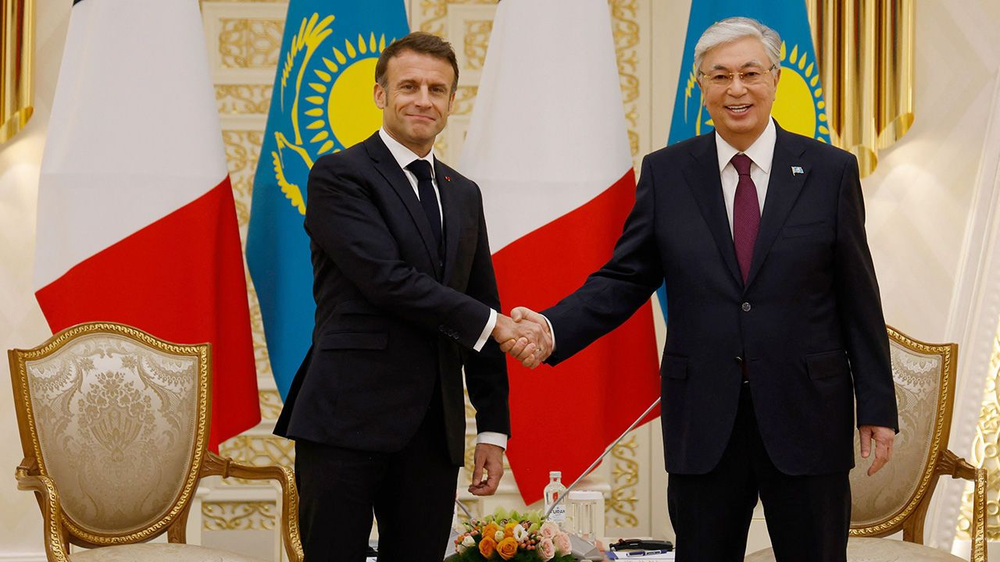image: Getty Images
Emmanuel Macron visited Kazakhstan, where he praised the country’s leadership for not siding with Russia in its war on Ukraine. The French president’s trip rattled the Russians, who are worried about the growing influence of the West in the former Soviet Central Asian states. Meanwhile, 46 miners died in a fire at a coal mine in Kazakhstan. The mine’s operator, ArcelorMittal, recently agreed to transfer ownership to the Kazakh government.
Lest we forget
A senior official at the UN told the Security Council that 40% of Ukraine’s population, or around 18m people, are in need of humanitarian assistance, and that the figure is likely to rise over the coming winter. Russia is expected once again to focus on knocking out power stations once temperatures start to plummet. The official said that 9,900 civilians are confirmed to have been killed in the war, but that the true figure was probably much higher.
Montenegro got a new coalition government, following an election in June. Milojko Spajic of the centrist Europe Now Movement is the new prime minister. Aged 36 Mr Spajic, a former banker at Goldman Sachs, is one of the world’s youngest leaders.
Venezuela’s Supreme Court annulled the opposition’s primaries process, nearly two weeks after an overwhelming victory for María Corina Machado. Ms Machado is a liberal and vocal critic of Nicolás Maduro’s autocratic regime. Mr Maduro had already barred her from holding office, but it was hoped that the lifting of most American sanctions would lead him to liberalise. In America Republicans called for the sanctions to be reinstated.
Saudi Arabia seemed set to host the football World Cup in 2034, after Australia, the other potential host, decided not to bid. Questions have been raised about how women will be treated at the tournament (public places are segregated). Speculation is rife that the Saudis may relax a strict prohibition on alcohol by creating “fan zones”.
The Federal Reserve left its benchmark interest rate on hold again, at a range of between 5.25% and 5.5%. Inflation has slowed, but uncertainty remains over the sell-off in the bond market, the oil price and the tight labour market. The central bank left the door open to a rate rise at its next meeting in December.
image: The Economist
America’s stockmarkets all lost ground in October, the third consecutive month of declines and the longest losing streak since the start of the covid-19 pandemic in 2020. The S&P 500 slid by 2.2% during the month, the NASDAQ composite by 2.8% and the Dow Jones industrial average by 1.4%. Investors are adapting to a world of higher interest rates, which reduce the present value of future earnings.
The Bank of Japan relaxed its policy of capping long-term interest rates for the second time in three months. It will now allow the yield on ten-year Japanese government bonds to rise above 1%, treating this level as “a reference” rather than a strict ceiling. Ueda Kazuo, the bank’s governor, attributed the decision to the sharp rise in American Treasury yields. The BoJ remains the world’s only central bank to have a negative policy interest rate, of -0.1%.
In a busy week for the big central banks, the Bank of England also left its key rate on hold, at 5.25%. It is the second month in a row that the rate has been held. Annual inflation in Britain is still high at 6.7%, far above the bank’s target of 2%.
The euro area’s GDP grew by just 0.1% in the third quarter, year on year. Over the previous three months it shrank by 0.1%, dragged down by Germany’s economy, which also contracted by 0.1%. That was in part a result of reduced household spending, but also of subdued global demand for Germany’s industrial goods. There was also some good news for the currency bloc, though. Annual inflation tumbled to 2.9% in October, from 4.3% in September.
China’s manufacturing industry contracted again in October, according to the official purchasing-managers’ index. On that measure manufacturing has shrunk in six of the past seven months.
The United Auto Workers union ended its six-week strike after reaching pay deals with Ford, General Motors and Stellantis, the parent company of Fiat-Chrysler. All three Detroit carmakers have agreed to increase workers’ pay by 25% over a four-year contract. Ford said recently that the stoppage cost it $1.3bn in operating earnings, GM reckoned it was losing $200m a week, and Stellantis said it lost $3.2bn in revenue.
Putting the brakes on
Meanwhile GM’s self-driving car business, Cruise, decided to halt all its robotaxi operations after California suspended the service in the state because of safety concerns. Cruise’s other markets include Dallas, Houston, Miami and Phoenix.
Panasonic reduced the profit outlook for its electric-car battery business, blaming a slowdown in demand for some Tesla models. Panasonic has made a big bet on making batteries for EVs and operates a factory with Tesla in Nevada. Tesla’s share price has fallen sharply in recent weeks, as investors fret that it will sell fewer cars in the future.
WeWork is reportedly preparing to file for bankruptcy protection. The office-sharing company is mired in debt and is now worth just tens of millions of dollars, a far cry from its valuation of $47bn in January 2019, when exuberance about its prospects peaked.
Big oil companies reported bumper quarterly earnings. BP’s headline profit came in at $4.9bn for the third quarter, Chevron made $6.5bn in net income, ExxonMobil $9.1 and Shell $5.8bn. Those were all higher than in the previous quarter, and largely reflect rising oil prices from July to September.
Orsted, based in Denmark and the world’s largest developer of offshore wind power, announced that it was withdrawing from two projects off the coast of New Jersey, citing “adverse impacts” relating to supply chains and increased interest rates. The company is writing down $4bn in impairments. The industry has been hit by a storm of problems. General Electric said recently it expects its wind division to lose $2bn over two years.
Thinking, fast and slow
Britain hosted the first global artificial-intelligence summit at Bletchley Park, the base for Alan Turing’s band of codebreakers during the second world war. Attendees included Kamala Harris, the American vice-president; Wu Zhaohui, China’s vice-minister of science and technology; and Elon Musk, the boss of Tesla. The conference aimed to hammer out a set of international rules for the safe and responsible development of AI.
X, formerly Twitter, is now worth $19bn, according to internal memos reported in the press. Elon Musk paid $44bn for the company when he bought it last year. He has struggled to turn the platform into an “everything app”. Ever the optimist, in March Mr Musk told staff that he saw “a clear, but difficult, path” to achieving a valuation of at least $250bn.
The world economy is defying gravity. That cannot last
Threats abound, including higher-for-longer interest rates
Even as wars rage and the geopolitical climate darkens, the world economy has been an irrepressible source of cheer. Only a year ago everyone agreed that high interest rates would soon bring about a recession. Now even the optimists have been confounded. America’s economy roared in the third quarter, growing at a stunning annualised pace of 4.9%. Around the world, inflation is falling, unemployment has mostly stayed low and the big central banks may have stopped their monetary tightening. China, stricken by a property crisis, looks likely to benefit from a modest stimulus. Unfortunately, however, this good cheer cannot last. The foundations for today’s growth look unstable. Peer ahead, and threats abound.
The irrepressible economy has encouraged bets that interest rates, though no longer rising rapidly, will not fall by much. Over the past week the European Central Bank and Federal Reserve have held rates steady; the Bank of England was expected to follow suit shortly after we published this on November 2nd. Long-term bond yields have accordingly risen sharply. America’s government must now pay 5% to borrow for 30 years, up from just 1.2% in the depths of the pandemic recession. Even economies known for low rates have seen sharp increases. Not long ago Germany’s borrowing costs were negative; now its ten-year bond yield is nearly 3%. The Bank of Japan has all but given up on its promise to peg ten-year borrowing costs at 1%.
Some people, including Janet Yellen, America’s treasury secretary, say these higher interest rates are a good thing—a reflection of a world economy in the rudest of health. In fact, they are a source of danger. Because higher rates are likely to persist, today’s economic policies will fail and so will the growth they have fostered.
To see why today’s benign conditions cannot continue, consider one reason why America’s economy in particular has fared better than expected. Its consumers have been spending the cash they accumulated during the pandemic from handouts and staying at home. Those excess savings were expected to have been depleted by now. But recent data suggest households still have $1trn left, which explains why they can get away with saving less out of their incomes than at any point in the 2010s.
When those excess savings buffers have been run down, high interest rates will start to bite, forcing consumers to spend less freely. And, as our Briefing explains, trouble will start to emerge across the world economy if rates stay higher for longer. In Europe and America business bankruptcies are already rising; even companies that locked in low rates by issuing long-term debt will in time have to face higher financing costs. House prices will fall, at least in inflation-adjusted terms, as they respond to dearer mortgages. And banks holding long-term securities—which have been supported by short-term loans, including from the Fed—will have to raise capital or merge to plug the holes blown in their balance-sheets by higher rates.
Fiscal largesse has added to the world economy’s sugar rush. In a higher-for-longer world, it too looks unsustainable. According to the imf, Britain, France, Italy and Japan are all likely to run deficits in the region of 5% of GDP in 2023. In the 12 months to September America’s deficit was a staggering $2trn, or 7.5% of GDP after adjusting for accounting distortions—about double what was expected in mid-2022. At a time of low unemployment, such borrowing is jaw-droppingly reckless. All told, government debt in the rich world is now higher, as a share of gdp, than at any time since after the Napoleonic wars.
When interest rates were low, even towering debts were manageable. Now that rates have risen, interest bills are draining budgets. Higher-for-longer therefore threatens to pit governments against inflation-targeting central bankers. Already, Ms Yellen has felt obliged to argue that Treasuries carry no risk premium, and Jerome Powell, the Fed’s chairman, has insisted that his bank would never cut rates and let inflation rip to ease pressure on the government’s budget.
Whatever Mr Powell says, a higher-for-longer era would lead investors to question governments’ promises both to keep inflation low and also to pay their debts. The ECB’s bondholdings are already becoming skewed towards the Italian government debt that it tacitly backstops—a task that has become far harder in a high-rate world. Even when Japanese government-bond yields were a paltry 0.8% last year, 8% of Japan’s budget went on interest payments. Imagine the strain if yields reached even Germany’s relatively modest levels. Some governments would go on to tighten their belts as a result. But doing so may bring economic pain.
These strains make it hard to see how the world economy could possibly accomplish the many things that markets currently expect of it: a dodged recession, low inflation, mighty debts and high interest rates all at the same time. It is more likely that the higher-for-longer era kills itself off, by bringing about economic weakness that lets central bankers cut rates without inflation soaring.
A more hopeful possibility is that productivity growth soars, perhaps thanks to generative artificial intelligence (AI). The resulting boost to incomes and revenues would make higher rates bearable. Indeed, figures published on November 2nd are expected to show that America’s measured productivity surged in the third quarter. The potential of AI to unleash further productivity gains may explain why higher-for-longer has so far not punctured stockmarkets. Were it not for the rising valuations of seven tech firms, including Microsoft and Nvidia, the S&P 500 index of American stocks would have fallen this year.
Don’t look down
Set against that hope, though, is a world stalked by threats to productivity growth. Donald Trump vows swingeing new tariffs should he return to the White House. Governments are increasingly distorting markets with industrial policy. State spending is growing as a share of the economy as populations age, the green-energy transition beckons and conflicts around the world require more spending on defence. In the face of all this, anyone betting that the world economy can just keep carrying on is taking a huge gamble. ■
Israel’s bombardment of Gaza is taking a terrible toll. But unless Hamas’s power is broken, peace will remain out of reach
ISRAELI FORCES are entering a hellscape of their own making. One in ten buildings in Gaza has been pulverised by Israeli aircraft and artillery. Over 8,000 Palestinians have been killed, many of them children. Shortages of fuel, clean water and food, imposed by an Israeli blockade, pose a growing threat to the lives of many thousands more.
Around the world the cry is going up for a ceasefire or for Israel to abandon its ground invasion. Hearing some Israeli politicians call for vengeance, including the discredited prime minister, Binyamin Netanyahu, many people conclude that Israel’s actions are disproportionate and immoral. Many of those arguing this believe in the need for a Jewish state, but fear for a Jewish state that seems to value Palestinian lives so cheaply. They worry that the slender hopes for peace in this age-old conflict will be buried under Gaza’s rubble.
Those are powerful arguments, but they lead to the wrong conclusion. Israel is inflicting terrible civilian casualties. It must minimise them and be seen to do so. Palestinians are lacking essential humanitarian supplies. Israel must let a lot more aid pass into Gaza. However, even if Israel chooses to honour these responsibilities, the only path to peace lies in dramatically reducing Hamas’s capacity to use Gaza as a source of supplies and a base for its army. Tragically, that requires war.
To grasp why, you have to understand what happened on October 7th. When Israelis talk about Hamas’s attack as an existential threat they mean it literally, not as a figure of speech. Because of pogroms and the Holocaust, Israel has a unique social contract: to create a land where Jews know they will not be killed or persecuted for being Jews. The state has long honoured that promise with a strategic doctrine that calls for deterrence, early warnings of an attack, protection on the home front and decisive Israeli victories.
Over the past two decades Israel lost sight of the fact that Palestinians deserve a state, too. Mr Netanyahu boosted Hamas to sabotage Palestinian moderates—a cynical ploy to help him argue that Israel has no partner for peace. Instead, Palestinian suffering became something to manage, with a mix of financial inducements and deterrence, kept fresh by repeated short wars.
On October 7th Hamas destroyed all this, including Mr Netanyahu’s brittle scheme. The terrorists ripped apart Israel’s social contract by shattering the security doctrine created to defend it. Deterrence proved empty, early warning of an attack was absent, home-front protection failed and Hamas murdered 1,400 people in Israeli communities. Far from enjoying victory, Israel’s soldiers and spies were humiliated.
The collapse of Israel’s security doctrine has unleashed a ferocious bombardment against the people of Gaza. The reason is an attempt to restore that founding principle. Israel wants its 200,000 or so evacuees to be able to return home. It wants to show its many enemies that it can still defend itself. Most of all, it has come to understand that, by choosing to murder Israelis regardless of how many Palestinians will die in Gaza, Hamas has proved that it is undeterrable.
The only way out of the cycle of violence is to destroy Hamas’s rule—which means killing its senior leaders and smashing its military infrastructure. The suggestion that a war which entails the deaths of thousands of innocent people can lead to peace will appal many. In the past one act of violence has led to the next. That is indeed the great risk today.
However, while Hamas runs Gaza, peace is impossible. Israelis will feel unsafe, so their government will strike Gaza pre-emptively every time Hamas threatens. Suffocated by permanently tight Israeli security and killed as Hamas’s human shields in pre-emptive Israeli raids, Palestinians will be radicalised. The only way forward is to weaken its control while building the conditions for something new to emerge.
That starts with new leadership for both sides. In Israel Mr Netanyahu will be forced from office because he was in power on October 7th, and because his reputation for being Israel’s staunchest defender is broken. The sooner he goes the better. His successor will need to win a mandate for a new security doctrine. That should involve a plan for peace and reining in Israeli settlers, who even now are molesting and killing Palestinians on the West Bank.
The Palestinians need moderate leaders with a democratic mandate. At the moment they have none. That is partly because Mr Netanyahu boosted Hamas, but also because Mahmoud Abbas, the president of the Palestinian authority, has sidelined potential rivals. The question is how to stop Hamas or its successor from seizing back control of Gaza before fresh leaders can emerge from fair elections.
Hence, the second condition for peace: a force to provide security in Gaza. Israel cannot supply it as an occupying power. Instead the strip needs an international coalition, possibly containing Arab countries that oppose Hamas and its backer, Iran. As we have argued in previous leaders, creating a coalition that all sides can agree on will take committed leadership from the United States and a leap of faith from the region.
And that leads back to the condition that makes all this possible: a war to degrade Hamas enough to enable something better to take its place. How Israel fights this war matters. It must live up to its pledge to honour international law. Not only is that the right thing to do, but Israel will be able to sustain broad support over the months of fighting and find backing to foster peace when the fighting stops only if it signals that it has changed. Right now, this means letting in a lot more humanitarian aid and creating real safe zones in southern Gaza, Egypt, or—as the best talisman of its sincerity—in the Negev inside Israel.
A ceasefire is the enemy of peace, because it would allow Hamas to continue to rule over Gaza by consent or by force with most of its weapons and fighters intact. The case for humanitarian pauses is stronger, but even they involve a trade-off. Repeated pauses would increase the likelihood that Hamas survives.
Nobody can know whether peace will come to Gaza. But for the sake of Israelis and Palestinians it deserves to have the best possible chance. A ceasefire removes that chance entirely. ■
Donald Trump’s tariff plans would inflict grievous damage on America and the world
You may think his worst ideas won’t get far. Sadly, on trade he has been singularly influential
Joe Biden’s approval rating is languishing and Donald Trump is cruising to the Republican presidential nomination, so it is wise to consider what another Trump term might bring. Though much about Mr Trump’s policy agenda is chaotic, in one area he is crystal clear: he wants to raise tariffs. A lot. He has proposed slapping a 10% tariff on all imported goods, thereby trebling the country’s average and taking American trade protectionism back to its mid-20th-century heyday.
This is not idle talk. Mr Trump’s lieutenants want to double down on the bad bets they placed in his presidency. Robert Lighthizer, Mr Trump’s chief trade negotiator, has proposed a universal tariff that would be as high as is necessary to eliminate the country’s trade deficit. Peter Navarro, a prickly adviser in Mr Trump’s White House, has called for total reciprocity: if any country has high tariffs on specific American products, Mr Trump should match them. Economic populists, meanwhile, are trying to sell Americans on the merits of all this. On October 28th the published an essay by one arguing “Why Trump is right about tariffs”. In fact, the policy would not only fail to achieve its goals, it would also inflict grievous harm on America and the world economy.
Mr Trump and his fellow travellers argue that tariffs strike three targets: they lead to a reduction in America’s gaping trade deficit, a source (in their view) of economic weakness; they encourage businesses to manufacture at home; and they counter the manifest injustice of a global economic system in which other countries, especially China, exploit America’s openness.
Each of these propositions is bunk. The argument that tariffs determine the size of the trade deficit is wrong in both theory and practice. The fundamental driver of the trade balance is America’s low national savings rate, which in part reflects its consumer-led economy. Rather than being a sign of fragility, its appetite for imports is proof of its vitality. America has run a trade deficit every year since 1975, during which time it has been the world’s pre-eminent economic power. And Mr Trump’s own experience shows that tariffs alone do little to change the trade deficit. It widened by nearly 25% during his time in office.
Tariffs do help some manufacturers. Protected industries tend to expand their domestic market share, as steelmakers have since Mr Trump coddled them with tariffs. But at what cost? Sheltered companies can get away with being less efficient than their global rivals. Other domestic industries suffer: one study estimates that steel users paid an outrageous $650,000 for each steelmaking job created by Mr Trump’s tariffs. And although Mr Trump claims that tariffs are paid for “mostly by China”, the burden actually falls on American consumers, via higher prices. A 10% universal levy would cost each American household an average of $2,000 a year.
Last, tariffs will not fix the global trading system but will make things worse. Other countries would retaliate, as they did during Mr Trump’s first rodeo. That would amount to a global tax on trade, adding to inflation risks. The World Trade Organisation would go to the brink, having been weakened by American administrations over the years, including the present one. And tariffs would tear at America’s ties with its allies, undermining attempts to forge supply chains that do not hinge on China.
Regrettably, Mr Biden does not have much standing to criticise Mr Trump on protectionism. His subsidies for electric vehicles, wind turbines and more besides discriminate against foreign countries and may end up squandering public money. He has left most of Mr Trump’s original tariffs untouched and may reapply levies on European steel as transatlantic talks falter.
That sorry record is all the more reason to fear Mr Trump’s plans. On trade he has been influential, turning America from a force for free trade into an apologist for protectionism. With a 10% tariff, that ugly transformation would be complete. ■
Developing countries—especially India—should learn from Bangladesh
Turmeric, a flowering plant of the ginger family, has long been prized in Ayurvedic medicine for its anti-inflammatory properties and in Asian cuisines for its earthy flavour and vibrant hue. Haldi, the spice’s Hindi name, is derived from the Sanskrit for “golden coloured”. But for the millions of South Asians who habitually consume it, turmeric’s skin-staining yellowness can be deceptive and deadly.
To heighten their colour, the rhizomes from which the spice is extracted are routinely dusted with lead chromate, a neurotoxin. The practice helps explain why South Asia has the highest rates of lead poisoning in the world. The heart and brain diseases it causes—to which children are especially susceptible—accounted for at least 1.4m deaths in the region in 2019. The economic cost is crippling; that year lead poisoning is estimated to have lowered South Asian productivity by the equivalent of 9% of GDP. Yet it turns out that with clever policies, enlightened leadership and astute messaging this blight can be greatly reduced. Bangladesh has shown how.
At the instigation of teams from Stanford University and the International Centre for Diarrhoeal Disease Research, Bangladesh, a research institute, the country launched a nationwide campaign against turmeric adulteration in 2019. Rules against adulteration were enforced and well-publicised stings carried out against wholesalers who persisted in it. The prime minister, Sheikh Hasina, discussed the problem on television. Bangladeshi bazaars were plastered with warnings against it. Local media also publicised it.
According to newly published data, the country thereby reduced the prevalence of turmeric adulteration in its spice markets to zero in just two years. That slashed lead levels in the blood of Bangladeshi turmeric-mill workers by about a third. Nationwide, it probably saved thousands of lives. Early analysis suggests that each extra year of healthy life cost a mere $1 to preserve. Achieving the same benefit through cash transfers is estimated to cost over $800.
Other countries where lead poisoning is rife should follow Bangladesh. Recent estimates suggest a staggering 815m children—one in three of the global total—have been poisoned by the metal. According to the Centre for Global Development, a think-tank in Washington, this disaster explains a fifth of the learning gap between children in rich and poor countries.
The poisoning has many causes. Weak or absent regulators permit lead-infused cooking utensils, cosmetics and other products. Yet adulterated turmeric looks like a major culprit almost everywhere, chiefly owing to poor practice in India, which produces 75% of the spice. India was the source of much of the poisonous pigment found in Bangladesh and is estimated to have the highest incidence of lead poisoning of any country.
Bangladesh’s response to the problem, if properly understood, could work in many countries. Its key elements included an openness to foreign expertise; effective NGOs; a willingness by the government to work with them; and the formation of an even broader coalition, also including journalists and private firms, to maximise the effort. This low-cost, co-ordinated and relentless approach to problem-solving, familiar to admirers of Bangladesh, has underpinned its outstanding development success over the past two decades. And Sheikh Hasina deserves credit for it—even though her commitment to such enlightened policymaking appears to be flagging.
Leaders and lead poisoning
With an election approaching, the world’s longest-serving woman prime minister, Bangladesh’s ruler for two decades, is growing more authoritarian and irascible. The importance of the turmeric campaign should help persuade her to reverse course. As it shows, the Bangladeshi model rests on organising, collaboration and consensus, not political fiat, and there is much more than her legacy riding on it.
India, whose leader, Narendra Modi, is in the process of driving out foreign donors and dismantling any NGO he considers unfriendly to him, has much to learn from Bangladesh’s more open, pragmatic approach. The developing world has countless health and environmental problems that it might help solve. For these many reasons, it should be sustained and widely copied. ■
Why the rules on embryo experiments should be loosened
Lifting the 14-day rule would help researchers understand how organs develop
When Louise Brown, the first child created through in-vitro fertilisation, was born in 1978, the idea of creating an embryo in a dish was very controversial. More than 12m IVF babies later, all bar some of the devoutly religious treat the technique as routine. Yet a rule invented in Britain in the 1980s still determines the sorts of research that can be done in the world’s embryology labs. The 14-day rule says that embryos must not be grown in a dish for longer than two weeks after fertilisation.
First suggested in 1984, the rule tries to balance the benefits of research with the disquiet about experimenting on things that could potentially develop into human beings. It is law in several countries, including Britain and Canada, and followed voluntarily by researchers elsewhere. By reassuring doubters that scientists would not be allowed to act recklessly, the rule has made human-embryo research less controversial than it might otherwise have been.
But 1984 was a long time ago and later this month Britain’s fertility regulator will seek more flexibility. However, it will not go so far as to scrap the rule. We think that is a mistake, both in Britain and elsewhere. Four decades of research have shifted the balance of benefits and drawbacks. Regulation should change to reflect this new reality.
Part of this is that the 14-day limit creates a black box in embryonic development into which scientists cannot peer. The box opens up again after about 28 days, when scientists can study aborted embryos; four weeks is roughly how long it takes most women to realise they are pregnant and seek abortions.
It is during this unobserved two-week period that the earliest organs begin to develop. Congenital heart disease, the most common birth defect in Britain, affects around one in 150 babies. It is caused by abnormal development of the heart, much of which takes place in the black box. The ability to study embryos at this stage could lead to new treatments. It might also shed light on what leads to recurrent miscarriages, a heartbreak facing one in 100 British couples trying for a baby.
Loosening the rules might also help the development of a technology that could in time reduce the need to experiment on embryos at all. As we describe in our Science & technology section, one of the biggest innovations in embryology in recent years is the invention of “embryoids”. These are made not from a sperm and egg but from protean stem cells, which can be persuaded to transform into almost any type of tissue.
The technology holds great promise, especially for those who still regard research on real embryos as wrong. Embryoids can be mass-produced in a way that embryos cannot. They lack the ability to develop into humans, making them more ethically straightforward. The problem is that, to check that they are accurate stand-ins, scientists need to compare embryoids with the real thing. The 14-day rule limits their ability to do that.
If the rule were scrapped, what might replace it? In 2021 the International Society for Stem Cell Research recommended that, if the public agreed, countries should switch to a case-by-case review, in which scientists seek approval for every study they wish to run. Unlike a time-based ban, this would be flexible. Regulators could grant permission based on the likely benefits of each proposal, public opinion and developments in the field.
This system could be analogous to that for animal research, in which the more human-like an animal is, the more protection it is given (mice therefore receive less protection than monkeys). Similar distinctions could hold for embryos and embryoids, too. Given the availability of aborted embryos, researchers wanting to culture live embryos beyond 28 days might have to work harder to convince regulators that their study should go ahead.
Although today it is not possible to produce embryoids that can develop into live humans, some scientists worry that might not be the case for ever. If they are right, then a case-by-case system could apply strict limits to research involving such creations without the need for new laws.
One objection to such a system is that researchers may eventually capture their regulators. But strong feelings around the ethics of embryo research make it unlikely that an overly liberal regulator could remain out of step with public opinion for long. Another worry is that such a system sets off a race to the bottom, with unscrupulous researchers decamping to the country with the most pliant approval committee. Something similar could have happened with the 14-day rule—but it did not.
The 14-day rule is a good example of how sensible regulations can make the world safe for valuable but controversial research. After four decades it has reached the end of its usefulness. Just as a generation of test-tube babies now have children of their own, so it is time to let embryo research grow up. ■
Britain’s prisons show up wider flaws in government
The entire criminal-justice system is under strain
No long-term planning. Disjointed decision-making. Tension between expert advice and political calculation. The covid-19 inquiry has been the best place this week to see the flaws in Britain’s government laid bare. Largely hidden from public view lies another: a crisis in the country’s prisons. Those same factors have left some parts of the criminal-justice system close to breakdown.
Start with the lack of long-term planning. In October it was revealed that the number of inmates in English and Welsh prisons is just a few hundred short of their maximum capacity. This should surprise no one. Along-standing push to be tough on crime has coincided with a more recent imposition of spending cuts. His Majesty’s Inspectorate of Prisons has repeatedly reported that jails are overcrowded, squalid and unsafe. The number of people in jail is nearly double what it was three decades ago; prison-building has not kept pace.
Alarmed by suggestions that judges may have to stop sending down dangerous criminals, the Ministry of Justice (MoJ) has announced a number of emergency measures. Some of these are sensible. But they will not come close to tackling the crisis. That is partly because of its scale. But it is also because decision-making in Britain’s government is often contradictory and incoherent. Efforts to ease one source of pressure exacerbate difficulties elsewhere in the justice system.
Take the most sensible emergency measure—limiting the use of short prison sentences in favour of community ones. This has myriad benefits beyond reducing prison numbers. Community sentences result in lower re-offending rates than the brief jail sentences given to petty offenders. They are cheaper, too.
But more community sentences means more strain on the probation service, which is in terrible shape. Its part-privatisation in 2014, designed to save money, was so disastrous that it was reversed in 2021. By then, however, many experienced probation officers had left; the service is now recruiting hard to try to replace them. The restructuring also reduced the number of probation trusts, each run by a chief probation officer, from 35 to 12, accelerating a longer-term trend towards centralised control of the service. It worked much better before; the MoJ should restore localised control.
Prison overcrowding has also been exacerbated by backlogs in the courts. In recent years there has been a huge increase in the number of prisoners awaiting trial on remand. This number surged during the pandemic, but the backlogs have been worsened by problems of the government’s own making. Between 2010 and 2019 the MoJ’s budget was reduced by 25% in real terms. The results are fewer courts, fewer judges and longer delays.
Yet even if the probation service is restored to health and court backlogs are unblocked, prisons will remain overcrowded. The MoJ predicts their population will keep rising, from around 88,000 now to 98,700 by 2026. That is in large part because of the way that Britain’s politicians choose to treat convicted criminals. Since the mid-1990s the length of the average prison sentence has increased. It is right to lock up those who commit serious and especially dangerous crimes, and tough-on-crime policies are popular with voters. But ever-longer sentences have unwelcome consequences.
The worst of these are endured by prisoners themselves. Overcrowding and understaffing mean that inmates are locked up in their cells for most of the day, unable to do any of the things, such as job training and cognitive behavioural therapy, that would help them live productive rather than predatory lives on release. Grim conditions lead to more assaults and suicides behind bars. And the strains in the criminal-justice system have wider effects, too. Jam-packed jails make it even harder to recruit prison workers, who are already in short supply. And poorly run services compromise public safety: when assessing the risk that criminals pose, probation officers are making domestic-abuse inquiries in less than half the cases they should be. The criminal-justice system has been trying to spend less and punish more for years. The circle can no longer be squared. ■
Letters | On donating organs, mental health, the Sagrada Família basilica, film lengths, James Bond, “Star Trek”
More than 110,000 Americans are waiting for an organ transplant and over 5,000 died waiting for an organ in 2019. Close to 6,000 recovered organs were discarded. “Wasted organs” (September 23rd) correctly pointed out that the responsibility lies in part with non-profit Organ Procurement Organisations and in part with the excessive caution exercised by transplant centres when deciding who to conduct transplants for and which kidneys to use.
Numerous initiatives in Congress, and more proposed by various non-governmental agencies, such as the Federation of American Scientists and the National Academies of Sciences, Engineering and Medicine, among others, have been focused on tweaking how the performance of organ procurers and transplant centres should be measured while keeping in place the system that put us in today’s quagmire. As we indicate in our recent paper (conditionally accepted at the ), such approaches that keep regulations fragmented are bound to be inefficient, given that the incentives and opportunities facing organ procurers and transplant centres are intertwined.
We show that “holistic regulation”, which aligns the interests of organ procurers and transplant centres by rewarding them based on the health outcomes of the entire patient pool, can get at the root of the problem. This approach also leads to more organ recoveries while increasing the use of organs for sicker patients who otherwise would be left without a transplant.
In the end increasing access to kidney transplantation will require the improvement of the entire supply chain of organs. This means boosting donor registrations and donor recoveries from the deceased. It also means increasing living donations, and co-ordinating donations through mechanisms like paired kidney donations and deceased-donor-initiated kidney- exchange chains.
Alex Chan Assistant professor of business administration Harvard University
Alvin E. Roth Professor of economics Stanford University
image: Tallulah Fontaine
Hope on mental health
The history of psychiatry is a history of therapeutic enthusiasm, with all of the tragedy and triumph, hubris and humility that such enthusiasm brings (“From tents to hospitals”, October 21st). Many of the challenges facing mental-heath treatment in the United States are seen elsewhere. In high-income countries, just one-third of people with depression receive formal care. In low-income countries, the rate of minimally adequate treatment is 3%.
Neuroscientific progress is glacial, but there are reasons for hope. Despite our rudimentary understanding of the brain, we have treatments that work, including psychological therapies and antidepressants. Antipsychotic medication is associated with longer life in schizophrenia. Globally, the suicide rate declined by a third between 1990 and 2016. This dramatic improvement in global public health does not mean the work is done (even a single suicide is one too many), but it shows that positive change is possible.
Brendan Kelly Professor of psychiatry Trinity College Dublin
A church becomes art
The completion of unfinished work by a dead artist raises interesting questions about authorship and merit (“(Sort of) by Sondheim“, October 21st). In architecture, the work of Antoni Gaudí i Cornet shows how the creativeness, vision and craft of a genius can live on and be completed according to his original designs 100 years after his death. Gaudí was a renowned architect in Barcelona when he was appointed as the chief designer for the Sagrada Família basilica in 1883. He completely changed the designs, everything from the external structure to the details of the interior, and attracted a group of designers, architects and craftspeople to work with him according to his designs. This continued until his death in 1926 (after being hit by a tramcar).
The construction continued, exactly according to his vision, through extended periods of social unrest, a civil war and a world war. The final two towers of the four evangelists were only recently completed and the cathedral is on target to finish the tower of Jesus Christ at the centenary of Gaudí’s death in 2026. This work is not a reconstruction, or the redevelopment of plans or the projection of other architects onto the plans of Gaudí. The basilica will look as it did in the original plans envisioned by Gaudí.
“Movie marathons” (October 21st) explained how films today are on average 24% longer than in the 1930s, and pointed to competition from streaming and the growing clout of big-name directors as possible reasons. But there is a much more practical factor: costs have come down because of digital capture and digital projection. Every extra foot of film in older movies cost money. It also cost a great deal for the initial capture and development, and editing was slow and tedious. The average reel of finished film was around one hour and 20 minutes.
Every cinema in America needed six reels of film, all of which required costly printing and shipping. Today, even if a film is captured on film stock, 99% of the final projection will be from a digital scan. At most, this means a hard drive shipped to the cinema. At that point length really doesn’t matter much, at least in terms of studio economics, even if it stretches an audience’s patience or bladder control.
Douglas Bowker
I was among the last to see “Titanic”. I was sure a bathroom break would be needed for a movie that long and I have wondered why there was not an intermission. Additional candy sales would surely have resulted.
Connie Elliot
image: Getty Images
For your eyes only
As mentioned in your review of Nicholas Shakespeare’s biography of Ian Fleming, John F. Kennedy listed Fleming’s “From Russia, with Love” as one of his ten favourite books in a 1961 interview with magazine (“The man with the golden pen”, October 14th). What may also be of interest to your readers is that the article began with an agitated Kennedy asking his secretary about the late delivery of the latest issue of .
A few paragraphs (and reminders) later, our hero sallies forth to his waiting helicopter the next day, said issue of safely tucked under his arm.
ALOK MOHAN
image: Brett Ryder
Highly illogical
I think Schumpeter was a bit premature in predicting the demise of the hand-held device (October 7th). One only needs to watch Captain Kirk flip open his communicator in “Star Trek” to realise such devices will obviously remain indispensable, even in the 23rd century.
The commander-in-chief of Ukraine’s armed forces on how to win the war
Technology is the key as the war becomes “positional”, says Valery Zaluzhny
RUSSIA’S INVASION of Ukraine in February 2022 provoked a global security crisis. The assault on democracy by a morally sick imperial power in the heart of Europe has tilted the balance of power in other parts of the world, including the Middle East and Asia-Pacific. The failure of multilateral bodies such as the UN and Organisation for Security and Cooperation in Europe to maintain order means that Ukraine can only restore its territorial integrity by military force.
Ukrainians have shown their willingness to lay down soul and body for their freedom. Ukraine not only halted an invasion by a far stronger enemy but liberated much of its territory. However, the war is now moving to a new stage: what we in the military call “positional” warfare of static and attritional fighting, as in the first world war, in contrast to the “manoeuvre” warfare of movement and speed. This will benefit Russia, allowing it to rebuild its military power, eventually threatening Ukraine’s armed forces and the state itself. What is the way out?
Basic weapons, such as missiles and shells, remain essential. But Ukraine’s armed forces need key military capabilities and technologies to break out of this kind of war. The most important one is air power. Control of the skies is essential to large-scale ground operations. At the start of the war we had 120 warplanes. Of these, only one-third were usable.
Russia’s air force has taken huge losses and we have destroyed over 550 of its air-defence systems, but it maintains a significant advantage over us and continues to build new attack squadrons. That advantage has made it harder for us to advance. Russia’s air-defence systems increasingly prevent our planes from flying. Our defences do the same to Russia. So Russian drones have taken over a large part of the role of manned aviation in terms of reconnaissance and air strikes.
Drones must be part of our answer, too. Ukraine needs to conduct massive strikes using decoy and attack drones to overload Russia’s air-defence systems. We need to hunt down Russian drones using our own hunter drones equipped with nets. We must use signal-emitting decoys to attract Russian glide bombs. And we need to blind Russian drones’ thermal cameras at night using stroboscopes.
This points to our second priority: electronic warfare (EW), such as jamming communication and navigation signals. EW is the key to victory in the drone war. Russia modernised its EW forces over the past decade, creating a new branch of its army and building 60 new types of equipment. It outdoes us in this area: 65% of our jamming platforms at the start of the war were produced in Soviet times.
We have already built many of our own electronic protection systems, which can prevent jamming. But we also need more access to electronic intelligence from our allies, including data from assets that collect signals intelligence, and expanded production lines for our anti-drone EW systems within Ukraine and abroad. We need to get better at conducting electronic warfare from our drones, across a wider range of the radio spectrum, while avoiding accidental suppression of our own drones.
The third task is counter-battery fire: defeating enemy artillery. In this war, as in most past wars, artillery, rocket and missile fire make up 60-80% of all the military tasks. When we first received Western guns last year, we were quite successful at locating and striking Russian artillery. But the effectiveness of weapons such as Excalibur, a GPS-guided American shell, has declined dramatically owing to improved Russian electronic warfare.
Meanwhile, Russia’s own counter-battery fire has improved. This is largely thanks to its use of Lancet loitering munitions, which work alongside reconnaissance drones, and its increasing production of precision-guided shells that can be aimed by ground spotters. Despite the dismissive view of some military analysts, we cannot belittle the effectiveness of Russian weapons and intelligence in this regard.
For now, we have managed to achieve parity with Russia through a smaller quantity of more accurate firepower. But this may not last. We need to build up our local GPS fields—using ground-based antennas rather than just satellites—to make our precision-guided shells more accurate in the face of Russian jamming. We need to make greater use of kamikaze drones to strike Russian artillery. And we need our partners to send us better artillery-reconnaissance equipment that can locate Russian guns.
The fourth task is mine-breaching technology. We had limited and outdated equipment for this at the start of the war. But even Western supplies, such as Norwegian mine-clearing tanks and rocket-powered mine-clearing devices, have proved insufficient given the scale of Russian minefields, which stretch back 20km in places. When we do breach minefields, Russia quickly replenishes them by firing new mines from a distance.
Technology is the answer. We need radar-like sensors that use invisible pulses of light to detect mines in the ground and smoke-projection systems to conceal the activities of our de-mining units. We can use jet engines from decommissioned aircraft, water cannons or cluster munitions to breach mine barriers without digging into the ground. New types of tunnel excavators, such as a robot which uses plasma torches to bore tunnels, can also help.
My fifth and final priority is to build up our reserves. Russia has failed to capitalise on its hefty manpower advantage because Vladimir Putin is worried that a general mobilisation might spark a political crisis, and because Russia cannot train and equip enough people. However, our capacity to train reserves on our own territory is also limited. We cannot easily spare soldiers who are deployed to the front. Moreover, Russia can strike training centres. And there are gaps in our legislation that allow citizens to evade their responsibilities.
We are trying to fix these problems. We are introducing a unified register of draftees, and we must expand the category of citizens who can be called up for training or mobilisation. We are also introducing a “combat internship”, which involves placing newly mobilised and trained personnel in experienced front-line units to prepare them.
Russia should not be underestimated. It has suffered heavy losses and expended a lot of ammunition. But it will have superiority in weapons, equipment, missiles and ammunition for a considerable time. Its defence industry is increasing its output, despite unprecedented sanctions. Our NATO partners are dramatically increasing their production capacity, too. But it takes at least a year to do this and, in some cases, such as aircraft and command-and-control systems, two years.
A positional war is a prolonged one that carries enormous risks to Ukraine’s armed forces and to its state. If Ukraine is to escape from that trap, we will need all these things: air superiority, much-improved electronic-warfare and counter-battery capabilities, new mine-breaching technology and the ability to mobilise and train more reserves. We also need to focus on modern command and control—so we can visualise the battlefield more effectively than Russia and make decisions more quickly—and on rationalising our logistics while disrupting Russia’s with longer-range missiles. New, innovative approaches can turn this war of position back into one of manoeuvre.■
Read a more detailed new essay by General Zaluzhny on this topic.
Steven Simon thinks that Israel may be able to avoid a regional escalation
But continued hard-right rule could foster dystopia, argues the academic and author
ON OCTOBER 7TH Hamas showed that it was true to itself by abandoning its periodic ceasefires and skirmishes with Israel and embracing Götterdämmerung. Perhaps it expected its murderous attacks to spark a regional conflict that would bring Israel to its knees, with Palestinians battered but triumphant. But this motivation seems unlikely, and we may never know. Regardless, America, Israel and key Arab states such as Egypt and Saudi Arabia must now plan for the day after, if only to avoid the prolonged immiseration of Gaza’s population and a resumption of regional hostilities.
Hamas’s problem is that even a widened conflict including Iran, Hizbullah and a motley collection of smaller Iran-backed militias would not overcome the fundamental power disparity between Israel and its foes, let alone Palestinians. Moreover, both Iran and Hizbullah, its most powerful proxy, have reasons to avoid escalation.
Hizbullah has refrained from engaging in a full-blown conflict with Israel on its northern border since the Hamas attack, though there have been exchanges of fire. Iran’s leaders and senior commanders have reportedly concluded that there is not much they can do, apart from tacitly permitting their country’s proxies to act as they see fit. These prevarications have given Israel time to mobilise an immense army, deploy a large part of it to the Lebanese border, evacuate local towns and buttress its air defences.
True, to dismiss the risk of escalation because it would not serve the alleged interests of Hizbullah or Iran could be just another example of the mirror-imagingand wishful thinking that plague policymakers of all stripes—and which contributed to the Israeli blunders that opened the door to Hamas on October 7th. Hamas may yet find fellowship in its self-immolation. Nonetheless, compared to Hamas, Iran and Hizbullah are conventional creatures and can therefore be deterred by the prospect of a punitive Israeli response. Hamas clearly can not.
Hence Israel’s conclusion that Hamas must go. This has entailed the sudden reversal of entrenched policy. As Israel’s prime minister, Binyamin Netanyahu, has explained, Hamas was an essential tool in Israel’s effort to split the Palestinian national movement, weakening the more moderate, West Bank-based Palestinian Authority (PA). Hamas functioned, perversely, as the loyal opposition to Likud governments. Even Israel’s ultra-right was on board; Bezalel Smotrich, the hardline finance minister, has described the PA as a burden but Hamas as an “asset”.
The scale and sadism of Hamas’s rampage on October 7th has made a return to the old arrangement unthinkable for now. Although Hamas is not Islamic State, its participants in the atrocities were weaned on IS’s gruesome videos, which had redefined the culture of jihad. Whatever the precise inspiration, the resulting performance of Wagnerian apocalypticism has now reached its culminating acts of fire and purification. If past were prologue, this process would be interrupted within weeks as the marginal costs exceeded the returns for both sides. This time, the past is merely the past.
Israel’s friends, especially America, have expressed concern about its war aims. The Biden administration must worry about regional escalation, and about its own reputation as Palestinian civilian casualties grow. It must also fear an all-out push by Israel that fails to eliminate Hamas but pulverises Gaza and ends in a comprehensive Israeli blockade, a traumatised population, a public-health crisis, warlord rule and a lost generation of Palestinian youth. The question of who rules Gaza if Hamas is toppled, or even crippled, is therefore urgent.
There are good reasons to doubt Israel’s ability to dislodge Hamas as the power in Gaza. Its army is not battle-hardened, urban combat is more gruelling than open warfare—and Hamas will have prepared the battlefield to compound the challenge. Toppling Hamas could require a lengthy occupation of Gaza, raising the spectre of an insurgency amid the ruins.
On the other hand, Israel’s armed forces are powerful and highly motivated, the war has unified a citizenry riven by political differences just weeks ago, and there is something like a consensus over the need to remove Hamas. Toppling the group—not as a social movement, but as a government and army—is thus at least a plausible aim.
Victory, however, could prove pyrrhic—not least if there is no government to replace Hamas. Israel will need to hand responsibility for Gaza to a competent, temporary steward as soon as is practicable. Such a transitional government will have to be formed of a coalition of states and perceived as legitimate and effective, as well as being acceptable to Israel. It will need to be authorised and equipped by the UN to defend itself while administering Gaza’s urgent needs, and it must be ready to enter the territory when the shooting stops. And as it restores order, it must also prepare the ground for reassertion of Palestinian rule through elections in both Gaza and the West Bank. Planning for this will require time and complex diplomacy.
The PA, however, is run by a president elected in 2005 and legislature elected in 2006. It is corrupt and widely perceived as a tool of Israeli occupation. It is incapable of stemming Israel’s building of settlements in the West Bank and their occupants’ attacks on Palestinians. Any expectations of a role for the PA in governing a post-conflict Gaza are unrealistic unless these conditions change.
Furthermore, Arab states’ participation in a transitional administration will hinge on the promise of Israeli concessions on the West Bank, including a halt to the building or expansion of settlements, curbing violence by settlers and the transfer of some land from mixed Palestinian and Israeli control to the PA. No long-term solution to the problem of Gaza is possible without this. It will require the application of a defibrillator to the peace process, as well as the resumption of Israeli-Saudi normalisation talks.
Of the many obstacles to this approach, Israel’s willingness to make concessions is the most formidable. How formidable will depend on what kind of government emerges in Jerusalem after the war.
Bernard Avishai, the author of “The Tragedy of Zionism”, believes that “the combination of corruption, fecklessness and extremism of the hard-right government—and especially Netanyahu himself—will be expelled like a hairball from the cat.”A darker view is that the terrible costs of the conflict, global opposition to Israel’s military campaign, tinged as it is in places with antisemitism, the awfulness of October 7th and intensified mistrust of Arabs will push Israelis to continue backing hard-right rule. If so, the dystopia won’t just envelop the Gaza Strip.■
Marc Weller on what international law has to say about the Israel-Hamas conflict
Military advantage must be balanced against the risk of civilian casualties, even when vital interests are at stake, says the law professor
LAW ACCEPTS the reality that war is a feature of human relations. Hence, law in war is meant to strike a balance between the need to use force in extreme circumstances and the wish to reduce the prospect of war and keep the associated human suffering to a minimum. This balancing act takes two forms. The UN Charter limits the right of states to make war. Humanitarian law limits the means of warfare.
The UN Charter permits necessary and proportionate self-defence. But it is not always easy to determine how much force is proportionate to an armed attack and necessary to prevent the next one.
In the wake of the terrorist attacks on September 11th 2001, for instance, it was widely accepted that America enjoyed the right of self-defence, even against a non-state actor like al-Qaeda. But how much force would be proportionate to the murder of over 3,000 people in New York?
American forces were entitled to pursue and defeat al-Qaeda in Afghanistan, where Osama Bin Laden’s group was mainly based. Arguably, this included the right to go as far as overthrowing the Taliban government, which was so closely intertwined with al-Qaeda that it would have been impossible to defeat the one without at the same time taking on the other.
In response to the horrific attack of October 7th, Israel, too, is entitled to self-defence. But what is a proportionate response to the horrendous atrocity that cost some 1,400 mainly civilian lives and still exposes over 200 hostages to ceaseless terror?
Israel’s prime minister, Binyamin Netanyahu, asserts that it is necessary to eradicate Hamas as a political and military force if further outrages are to be prevented. Even if self-defence goes that far, there is still more balancing of competing values to be done under the second branch of applicable law, humanitarian law.
A civilian population remains protected by the fundamental principles of humanitarian law even in a conflict triggered by an indefensible outrage of the kind mounted by Hamas, which evidently does not play by humanity’s rules. Israel fully accepts this fact. The difficulty arises, again, with respect to proportionality—this time as an element of humanitarian law.
The first principle of humanitarian law is that of distinguishing between combatants and civilians along with the obligation to ensure the protection of civilians. Attacks must not be directed against a civilian population. This prohibition includes indiscriminate aerial bombardments of civilian areas.
Where it is impossible to isolate civilians from an attack against a lawful, military objective, proportionality requires a balancing of the military advantage gained through the attack against the extent of civilian damage it will foreseeably cause. Humanitarian law states that if “incidental loss of civilian life would be excessive in relation to the concrete and direct military advantage anticipated” then the operation must not take place.
Israel argues that, given the gravity of the threat to its national security and the lives of its citizens, this provision must not place undue restrictions on its military campaign. Sharvit Baruch, formerly a senior legal adviser to Israel’s armed forces, argues: “Even if many civilians in Gaza are harmed during the attacks”, when weighed against Israel’s overwhelming security interest in defeating Hamas “this is not necessarily excessive incidental damage and therefore [these] would not be disproportionate attacks that are illegal.”
This view would unhinge the law on the protection of civilians. The extent of its application cannot be relative, depending on the sense of injustice and threat felt by the state using force. Every state going to war will inevitably feel that its vital interests are at stake. But this becomes a judgment on how far force can be used in self-defence under the UN Charter, and not on the extent to which civilians must be protected under humanitarian law when that force is used.
Humanitarian law requires that the military advantage of each and every combat operation during conflict needs to be balanced against the risk of civilian casualties, even if vital interests of the state mounting the operation are at stake.
Colonel Baruch adds that “Since Hamas places its military infrastructure in the heart of the civilian population in the Gaza Strip, including in residential houses, schools, mosques and businesses, it is permissible to direct attacks toward these sites, as they have lost their civilian nature and have become legitimate targets due to this use.”
Again, the fact that Hamas operates from a densely populated territory does not strip the civilian population in that territory of legal protection. These are not willing human shields, even if Hamas may attempt to keep them in place through misinformation and propaganda. Attacks against Hamas can only be undertaken if there is no foreseeable risk of causing excessive civilian casualties when compared to the military advantage gained from the attacks being contemplated.
Israel asserts that it is fulfilling its duty of distinguishing between civilians and combatants by telling the population of northern Gaza to evacuate. At a tactical level, where a specific building is to be attacked, such measures may be legitimate or even legally required. However, even where Hamas has networks of subterranean tunnels, clearing out a million civilians in order to generate a clear field of fire throughout all of northern Gaza is not permitted.
Israel cannot discharge its duty of distinction between combatants and civilians simply by wishing the entire civilian population away. This may make it far more difficult for Israel to wage this war, but it cannot simply transfer the risks involved in armed combat in an urban environment from its soldiers to civilians.
The International Committee of the Red Cross has issued a declaration confirming that this displacement is incompatible with humanitarian law, especially as southern Gaza, the area to which the population is supposed to move, is also subject to attack and deprived of that which will be necessary for those living or moving to survive—unless aid arrives consistently and reliably. The refusal to allow sufficient quantities of humanitarian supplies into the area, delivered under international control and supervision, can also not be justified by whatever military advantage such a strategy is meant to yield. Even if, as Israel asserts, Hamas is secretly holding its own stocks of fuel and supplies and reserving them for war rather than for other Gazans, this cannot justify withholding from civilians, crowded together in a position of extreme vulnerability, what they need to survive.■
Markets think interest rates could stay high for a decade or more
The economic consequences could be grim
NOT LONG ago, as interest rates in the rich world hovered near zero, economists debated whether their downward march was the product of a decades-, centuries- or millennia-long trend. Now the burning question is how long they will stay high. On October 18th the ten-year Treasury yield, which incorporates long-term expectations for interest rates and was below 1% as recently as 2021, hit 4.9%, its highest since 2007. The 30-year Treasury yield crossed 5% the same day. Analysts at Bank of America may have sounded a little breathless when they declared last month that rates were “coming off 5,000-year lows”. But that is indeed how it feels to economists, investors and anyone in the uncomfortable position of servicing debts they incurred when almost everyone expected rates to be low for ever.
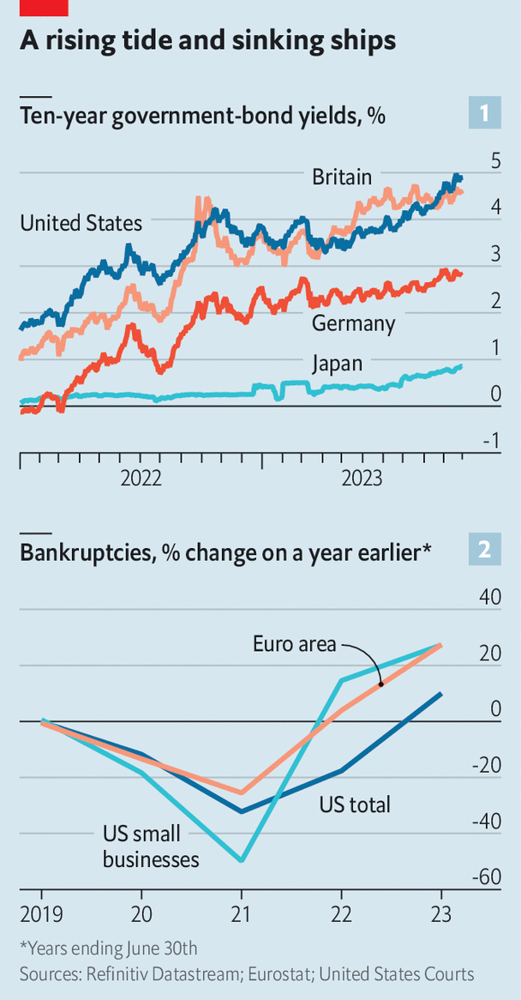image: The Economist
The conviction that rates will remain “higher for longer” is spreading around the world. The euro zone saw negative interest rates in 2021; now Germany must pay nearly 3% to borrow for a decade. Britain’s bond yields are nearly as high as America’s. Even Japan, whose apparently permanently low rates were seen as a harbinger for the rest of the world, has faced upward pressure on its bond yields (see chart 1). Bets that its central bank will have to raise interest rates in 2024 for the first time since 2007 are mounting.
If markets are right, a new era is beginning and the consequences will be far reaching. Households and companies will have to pay much more to borrow. The financial system will have to adjust to a painful new reality. And governments will find they have to divert more tax revenue to pay the interest on their accumulated debt. The higher-for-longer scenario that many investors are now predicting is a potentially toxic mix.
Start with the real economy. One of the surprises of the past year is how resilient the world economy—and particularly America—has been in the face of higher rates. On October 26th it was revealed that America’s GDP grew at an annualised pace of 4.9% in the third quarter. Consumer spending has been supported by the excess savings households built up thanks to the lockdowns and stimulus payments of the covid-19 pandemic. Many firms issued long-term debt when rates were low, and so continue to enjoy low financing costs today. Net interest payments by America’s companies have actually fallen this year, because the interest they earn on the cash they keep to hand has risen faster than the cost of servicing their debts.
These protective buffers will last for a while yet. In September statisticians revised up the estimate of savings accumulated during the pandemic, which had previously looked like they were on the verge of exhaustion. It now appears that America’s households are still sitting on about $1trn of excess cash, equal to nearly 5% of annual personal income in aggregate. It will also take time for higher rates to slow companies down. Goldman Sachs, a bank, estimates that just 16% of America’s corporate debt will mature over the next few years. Refinancing it will lift the average interest rate on the total stock of debt from 4.2% this year to just 4.5% in 2025.
Not all companies are resilient to higher rates, however. Smaller American firms, whose debts typically fall due sooner than those of big ones, are under strain even though the economy is booming. There and in Europe, where growth is weaker, corporate bankruptcies are rising (see chart 2). In some economies firms are much more exposed to rising rates: at the end of 2021 the median maturity of Spanish and Italian businesses’ debts was only 2.6 years and 2.1 years respectively. In Sweden, where corporate debt is an eye-watering 155% of GDP, the average effective interest rate on outstanding bank loans to companies rose from 1.5% to 3.9% in the year to March and will be higher still by now. In September the number of corporate bankruptcies was 14% higher than a year earlier.
Were rates to reach a permanently higher plateau, even long-dated debt would eventually start to cost companies dear. That would be painful because during the 2010s firms borrowed heavily: America’s non-financial corporations issued a net $4.1trn in debt over that decade while retiring a net $3.2trn of equity through dividends and buy-backs. In advanced economies as a whole, corporate debt is around 93% of GDP, up from less than 80% in the mid-2000s, according to data from the IMF. If rates stay higher for longer, this borrowing binge may need to be unwound. A long period of deleveraging could therefore inhibit investment in the 2020s, just as low growth inhibited it in the 2010s.
Home is where the hurt is
Households, too, will eventually find that higher rates bite. In America and some European countries interest rates on mortgages can be fixed for decades, which protects borrowers from rate rises as long as they do not move house. But house prices are likely to fall, because they depend mostly on buyers who borrow afresh, and therefore face much higher costs. On October 18th Mortgage News Daily, a data provider, reported that the average 30-year fixed-rate mortgage in America carried an interest rate of 8% for the first time since 2000. As a result the monthly payment required to buy the median American home with a mortgage worth 90% of the property’s value is now nearly 60% of average earnings, up from 33% in July 2021.
It strains credulity to think that housing markets can sustain such ratios. According to the Bank for International Settlements, real house prices in 12 advanced economies fell by 10% between the start of 2022 and the second quarter of 2023. Should rates follow the path implied by markets, real house prices should fall by another 14% by the end of 2025. In a scenario in which interest rates stabilise slightly above their current level, the peak-to-trough fall in real house prices would reach 35%. For comparison, the fall prompted by the global financial crisis was 13%.
Next, consider the implication of higher rates for the financial sector. Traders often joke that interest rates go up until something breaks. In the spring of 2023 something did: banks. They own lots of government bonds, which lose value as rates rise. The jump in the yield of ten-year Treasuries from 1.5% at the end of 2021 to around 3.5% a year later drove down the value of a broad index of Treasury bonds by about 10%. That inflicted over $600bn of losses on American banks, the most vulnerable of which—Silicon Valley Bank and First Republic—suffered runs and failed. The crisis was eventually forestalled by the Federal Reserve offering to lend to banks against the face value, rather than the market value, of their Treasuries, easing the pressure on their balance sheets.
But in a higher-for-longer world, the crisis could return. The last loans under the Fed’s new lending scheme are to be made in March. Even if it is extended, banks may find themselves unable to afford to pay the interest on the Fed loans (which is similar to prevailing short-term rates and so has been rising steadily).
And it is not just Treasuries whose market value falls when rates rise. More or less any loan paying a fixed return over a medium-to-long duration will follow the same pattern. Erica Jiang, Gregor Matvos, Tomasz Piskorski and Amit Seru, a group of economists, undertook an analysis that valued all the assets of American banks at the market prices that prevailed in March and then tested to see what would happen if half or all of their uninsured depositors withdrew their savings. They found that, even under the less apocalyptic scenario, some 200 or so banks, with collective assets of $300bn, would potentially be insolvent. Another paper, by Mark Flannery and Sorin Sorescu, two more economists, concluded, “If all unbooked losses were fully reflected in bank balance sheets, roughly half of all banks, holding roughly half of all bank assets, would not meet their minimum regulatory capital requirements.”
Since March the bond index has fallen by 5% more. Ms Jiang and her co-authors have repeated their analysis. They find that unrealised losses have climbed modestly, but are now concentrated at bigger banks. In March only some 30% of the $2.2trn of these losses were at banks labelled “systemically important” by regulators. Now there are $2.5trn of unrealised losses, with about two-thirds at such banks.
There are other sources of financial vulnerability, too. Commercial property loans make up around a tenth of bank assets, and the value of office buildings has collapsed owing to higher interest rates and lower occupancy. Some owners have simply handed the keys to lenders. What is more, much lending has migrated in recent years from banks to other sorts of financial institutions, such as pension funds and insurance firms. They have never gone through a cycle of rising rates as big lenders before. Although the dispersal of risk is in principle helpful, it also means a greater number of firms face potential losses.
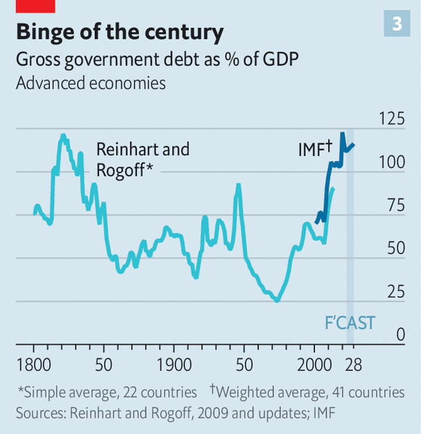image: The Economist
Last, consider the vulnerability of governments. After the global financial crisis, rich countries’ public debts surged to the highest level since 1946. Since the pandemic they have been larger, relative to GDP, than at any time since the Napoleonic wars (see chart 3). The sustainability of these massive debts depends not just on interest rates, but on how those rates compare with economic growth. In the low-rate era it became fashionable to note that if GDP expands faster than interest accrues, then a government’s debt-to-GDP ratio can shrink even as it borrows afresh to pay its interest bill. It may even be able to borrow more still to fund extra spending while keeping its debt-to-GDP ratio stable.
In October the IMF projected that, between 2023 and 2028, the economic growth rate in advanced economies will continue to exceed the interest rate their governments pay on their debts, by 1.4 percentage points on average, despite recent rate rises. The reason is that governments, like companies, have locked in low rates to some degree by issuing long-term debt.
Yet debt-to-GDP ratios are mostly set to rise anyway, because many governments continue to run excessive deficits. America especially is borrowing with abandon: strip out accounting distortions and its deficit for the past year was 7.5% of GDP, according to the Committee for a Responsible Federal Budget, a think-tank. Deficits that high are typically seen only during wars or catastrophic recessions. calculated the fiscal adjustments that advanced economies would need to make to keep their debts stable, given the IMF’s projections. In every big advanced economy bar Germany and Japan, belt-tightening is needed to stop the debt-to-GDP ratio from rising further. America would have to trim its primary budget deficit—ie, its deficit excluding interest on its debt—by an annual 2.4% of GDP. Such parsimony will be especially difficult given the extra spending that is needed to cope with ageing populations, the climate crisis and rising geopolitical tensions—the annual bill for all of which, the IMF estimates, will add up to about 7.5% of gdp in rich countries.
What is more, in a higher-for-longer world governments, like companies, must refinance eventually. Ten-year yields are now above plausible estimates of long-run growth in most rich economies. That means much more belt-tightening could be needed to keep debts from rising. It is hard to escape the conclusion that, on current growth forecasts, higher-for-longer would force governments into another round of painful budget-balancing like that suffered by Europe in the 2010s. If upheaval in the finance industry prompts expensive bail-outs, the fiscal outlook would become yet bleaker.
There is always cope
Can the world economy cope with corporate deleveraging, falling house prices, turmoil at banks and fiscal frugality? Surprisingly, the answer is, perhaps—if rates have risen for the right reason. Economists typically think that interest rates are determined in the long term by the balance between the world’s desire to save and to invest. All else equal, more saving pulls down the so-called “natural” rate of interest; more investment pushes it up. The most popular explanation for the rock-bottom rates of the 2010s was that ageing populations were stashing away more money for retirement, while insipid long-term growth prospects had sapped companies of the desire to expand—a phenomenon sometimes called “secular stagnation”.
For rates to have shifted permanently, that outlook must have changed. One possible reason it might have is the anticipation of faster economic growth, driven, perhaps, by recent advances in artificial intelligence (ai). In the long term, growth and interest rates are intimately linked. When people’s incomes rise over time, they have less need to save. Companies, expecting higher sales, become keener to invest. Central banks have to keep rates higher to stop economies from overheating.
It might seem farfetched to say that optimism about AI is pushing up bond yields. Yet it would explain why the prospect of higher-for-longer has not caused stockmarkets to fall much. In theory, higher bond yields should reduce the value of companies’ future earnings, an effect that bites hardest for technology firms, since they tend to promise jam tomorrow. In fact, as optimism about AI has spread, the value of big tech firms such as Microsoft and Nvidia has soared. Their rising value has kept the cyclically adjusted price-earnings ratio of the S&P 500 at around pre-pandemic levels, even though bond yields—and hence the rate used to discount future profits—are now much higher. And America’s strong growth in the third quarter was not driven by an unusual jobs boom; in fact, the labour market is cooling. If the growth number is accurate, productivity must have risen.
image: Patrick Leger
To the extent that productivity growth explains higher rates, the new era could be a happy one. Alongside the rise in debt-service costs, households will have higher real incomes, firms will have higher revenues, financial institutions will enjoy low default rates and governments will collect more tax. Healthy competition for capital might even bring benefits of its own. Some economists long suspected that the low-rate era of the 2010s made the economy less dynamic. “It was easy for relatively inefficient companies to stay afloat, so there wasn’t much creative destruction,” says Kristin Forbes of MIT. In a higher-rate world underpinned by faster growth, there would be plenty of dynamism.
Alas, there is a more worrying explanation for higher rates: that government debt has grown so large that it has sopped up the world’s surplus savings, leaving the private sector to compete for the scraps. In the short term, many traders blame the avalanche of debt issuance since the pandemic, as well as the unwinding of big bond purchases at central banks, for rising bond yields. Economists often pooh-pooh the significance of existing bonds changing hands, but they do think the size of the outstanding stock of debt matters. A rule of thumb proposed in 2019 by Larry Summers of Harvard University and Lukasz Rachel, then at the Bank of England, is that a ten-percentage-point increase in debt-to-GDP raises interest rates by 0.35 percentage points in the long run, while every percentage point increase in deficits raises rates by a similar amount. That would imply that spendthrift governments have contributed to today’s high rates.
To the extent government debt is to blame for “higher-for-longer”, then the world economy will have to deal with higher rates without any accompanying fillip to growth. That would be painful. “You can’t really take the view that deficits will continue to push interest rates up and will also continue unchecked,” says Maurice Obstfeld of the Peterson Institute for International Economics. “Something’s got to give, whether it’s a more restrictive fiscal policy or some sort of debt crisis.”
Other than a fiscal crisis, how could the tension be resolved? One possibility is that persistently high inflation could erode the real value of government debts, as it has in the past after moments of economic crisis. In that case, though nominal interest rates might be higher-for-longer, the real interest rate would not have risen as much. Companies and governments would survive high rates because their incomes would be strong in cash terms. Relative to the high real yields they expect today, bondholders would be squeezed.
Another possibility is that high rates push the world economy into a recession, which in turn causes central banks to cut them. In line with this thesis, on October 23rd Bill Ackman of Pershing Square Capital announced that his fund was no longer betting that rates would keep rising, pushing down the value of Treasuries. “There is too much risk in the world to remain short bonds at current long-term rates,” he wrote. “The economy is slowing faster than recent data suggests.” If he is right, higher may not be for that much longer. ■
A tax-cutting wave is sweeping over America’s states
Conservatives see a fiscal triumph, while critics warn of a looming disaster
Iowa is accustomed to the national political spotlight as the first state that Republican hopefuls vie to win when seeking their party’s nomination for the White House. What is more unusual is that this small midwestern state now also finds itself in the national economic spotlight. For conservative politicians and commentators, Iowa has emerged as America’s tax-cutting champion, a paragon of fiscal responsibility. To critics it looks more like an example of economic recklessness.
Either way, Iowa is playing an outsized role in a bigger debate about how American states ought to manage their revenues and spending. Until a few years ago it had one of the highest income-tax rates in America. By 2026 it will be down to a flat tax of 3.9%, with designs on more cuts. “Ultimately I’d like to get as close to zero as I can,” says Kim Reynolds, Iowa’s hard-driving governor. Iowa is far from alone. Some 25 states, from Arizona to New Hampshire, have cut individual income taxes over the past three years. A handful, including Georgia and Idaho, are shifting to a flat tax. And a few others such as Arkansas and Mississippi want to eliminate their income taxes altogether, joining the likes of Florida and Texas which have none.
It is not just a Republican trend. Virtually all states, regardless of political make-up, have lowered their citizens’ tax bills since 2021, deploying a mixture of one-off rebates, credits for families and outright cuts to property and sales taxes. Overall, these have been equivalent to a roughly $30bn decline in states’ tax revenues during this time, the steepest such reduction in at least four decades. But the most aggressive, and potentially the most permanent, moves have been cuts to income taxes, and Iowa has been at the forefront of these efforts. “You have to continually be looking for opportunities to be competitive, and our constituents are the winners in that competitive environment,” says Mrs Reynolds.
The key factor enabling the tax-cutting zeal is that states are flush with cash—a striking contrast with the federal government, which is saddled with gargantuan, growing deficits. States are in a different position to begin with, because most are required by law to balance their budgets each year. During 2020 that turned into a headwind for their budgets: they had braced for a long, difficult stretch but instead notched up record-setting revenue growth in 2021 and 2022, owing in large part to the economy’s rapid recovery.
Tax receipts have fared less well over the past year, but 45 states have still managed to collect more revenues than they had budgeted for, according to the National Association of State Budget Officers, a nonpartisan organisation. Although a handful, including California, have swung to deficits, most are still on track for surpluses this year. Moreover, the strong inflows of the past three years have padded the buffers. States have amassed rainy-day funds worth about $155bn collectively, about double their pre-covid level.
This has set up states for what, on the surface, looks like the fiscal equivalent of a free lunch. They are using their surpluses to pay for their tax cuts and are still bringing in more than enough revenues to meet their budgetary commitments. “Every single time since we’ve cut taxes, revenues have still come in higher than estimates,” says Jack Whitver, the Republican Senate majority leader in Iowa. Were the economy to fall into a recession, treasurers would be able to dip into their rainy-day funds to plug any shortfalls. “These are not states that are having difficulty in making ends meet,” says Katherine Loughead of the Tax Foundation, a think-tank.
The first cut
Where things get more contentious is accounting for why state budgets are so strong, and whether this strength can last after they slash taxes. Politicians naturally love to take credit for their surpluses as evidence of their sound fiscal management. In fact they were beneficiaries of the covid economy in two ways. First, federal transfers soared to help states cope with the disruption. In 2022 federal grants to state and local governments reached $1.2trn, about 70% more than in 2019. Technically, states were barred from using any emergency covid relief to fund tax cuts. In practice money is fungible and state treasurers are masters of creative accounting.
Second, inflation has flattered their books, and continues to do so. Rising prices augment governments’ nominal tax receipts and higher wages push people into higher income-tax brackets, says Lucy Dadayan of the Tax Policy Centre, a think-tank. At the same time, states’ nominal expenditures are limited by their annual budgets. This year, for example, states have budgeted for a roughly 2.5% increase in spending. Factoring in the prevailing inflation rate, that will amount to a small cut in real spending.
Critics are quick to point to Kansas’s bruising experience with deep income-tax cuts in 2012 and 2013. Described by the governor at the time as a “shot of adrenalin” for the economy, the state instead ended up with slower growth and weaker fiscal revenues, leading it to reduce funding for schools. In 2017 it reversed its tax cuts. Advocates for tax cuts counter that Kansas is an unfair example, given that many other states have reduced taxes over the years without such dire outcomes. In any case, most of the tax cutters this time around are proceeding carefully. “I am not going to be the governor that has to turn around and raise taxes, so I use very conservative projections,” says Mrs Reynolds. Iowa’s planned expenditures are about 15% less this year than its expected revenues.
But it will be hard for states to deliver such restrained budgets without undermining the services that they provide, notably education and health care (states are big funders of Medicaid, medical insurance for low-income families). Grover Norquist, long America’s most outspoken anti-tax activist, thinks state treasuries should cap expenditure growth at the rate of population growth plus inflation, which would effectively peg per-person spending at current levels in real terms. That sounds like a reasonable formula. The trouble, however, is that education, health care and transport tend to experience higher inflation than other parts of the economy. Capping government spending at the general inflation pace would almost certainly necessitate real cuts to schools, medical insurance and road works.
Even without making outright cuts, states may be forgoing opportunities to expand their current offerings, says Wesley Tharpe of the Centre on Budget and Policy Priorities. In Nebraska, for instance, the resulting revenue loss from its income-tax cuts of the past three years is about the same as its annual spending on Medicaid, he notes. Iowa’s shift to a flat tax will be phased in over the next few years, so its impact will only be truly felt in 2028, when the state’s nonpartisan legislative agency estimates that the various cuts will cause an estimated $1.9bn decline in fiscal revenues, putting them roughly 20% below their prior trend. “Something has got to give, whether it’s education or health care or something else. A crash is coming,” says Mike Owen of Common Good Iowa, a non-profit group opposed to the tax cuts. Mr Whitver is more sanguine: “I don’t think it has to be one or the other. We can continue to make investments where investments are needed, and continue to cut taxes.”
image: Pete Ryan
In the meantime, with so many states cutting taxes, there is also a question about how best to structure the reductions. Most of the reductions in income taxes have been fairly modest: the median top rate for states has gone from 5.4% in 2020 to 5% this year, according to the Tax Foundation. Iowa, on the other hand, has been more radical. Not only has its top rate gone from 9% to 3.9%, it is shifting to a flat levy that represents a dramatic simplification of the tax code. Iowa previously had nine separate income-tax brackets, plus a thicket of exemptions, all of which are now being scrunched into one single tax rate for all. The knock against flat taxes is that they aggravate inequality, doing away with the redistribution of income that is baked into a graduated tax system. Mr Owen estimates that about half of the direct savings from Iowa’s shift to a flat tax will flow to the richest 5% in the state. Mrs Reynolds is unapologetic: “We’ve got to stop punishing success, we should reward it.”
Is the steepest
Another group may benefit from Iowa’s reforms: economists. Those wanting to study the effects of tax cuts have a natural experiment because Iowa happens to share a border with Minnesota, one of the few states moving sharply in the opposite direction. Democrats in power there have pursued one of America’s most left-wing policy agendas seen in recent years. Rather than converting their fiscal surpluses into across-the-board tax cuts, they have rapidly increased spending levels. In Minnesota’s latest biennial budget, expenditures are 38% higher than in its previous one, a record increase. The state has showered money on schools, roads, housing and more. It has also tried to make its tax system more progressive: a new “millionaire tax” raises rates for the wealthiest Minnesotans, while lower-income residents will benefit from a range of tax rebates.
Beyond differences in their fiscal and economic trajectories, much attention will focus on whether Iowa or Minnesota does better at attracting new residents and new investment. Over the past decade, America’s low-tax states, notably Texas and Florida, have generally been its fastest growers—in terms of both population and economic size. That has been about much more than taxes, with warm weather and relatively low housing costs also crucial parts of the equation.
Iowa will be a tougher test case for the benefits of lower taxes. For years it has had relatively little population growth. Mrs Reynolds thinks the state can now turn its luck around. “We’re building the right kind of environment for people and businesses,” she says. If a landlocked state known primarily for corn and presidential races can manage to do that, all while keeping its schools, hospitals and roads in good shape, it will be a tax-cutting triumph. If not, it may instead end up a cautionary tale.■
Why might a Democratic governor win in a state that went for Trump by 26 points?
The Beshear dynasty in Kentucky is worth studying for Democrats who want to win outside their blue fortresses
ASKED TO DESCRIBE the politics of Kentucky, many would default to calling it Trump country. And they would have many points in their favour. But others object. “It’s Beshear country!” yells Steve Beshear, the state’s Democratic governor between 2007 and 2015, unzipping his bomber jacket to show a t-shirt emblazoned with the slogan for dramatic effect. He, too, has a point. On a wet Saturday morning in Lexington he was the warm-up act for his son, Andy Beshear, the sitting Democratic governor of the state, who is running for re-election on November 7th. Incredibly for a state that went for Mr Trump by 26 percentage points in 2020, current polls make Beshear the Younger the favourite.
As in Appalachia and the American South, Democrats once swept Kentucky. In recent elections, Democrats have managed to convince themselves that one of their number has a chance of winning a prominent statewide race, and then raise fabulous sums of money, only to face a drubbing at the ballot box. Thus in 2020 Amy McGrath, a serially unsuccessful Democratic candidate, raised $90m in her race to unseat the Republican senator Mitch McConnell—only to lose by 20 points. Yet the state has spent more years this century being governed by a Democrat than by a Republican. And it may now be in for another four years of the same.
That should be instructive for Democrats. Both Beshear and have managed to keep an arm’s-length relationship with presidents of their own party. They have done so by touting the economic benefits of federal spending. Despite the unpopularity of Obamacare, the elder Beshear pushed through an expansion to Medicaid, the health-insurance programme for the poor, and a state-run insurance exchange (which Republicans are no longer campaigning to undo). The younger Beshear touts private-sector investments spurred on by the Inflation Reduction Act, a big subsidy bill, even as he murmurs objections to some federal environmental rules. “The things that are going on from infrastructure to public education to health care in Kentucky to new jobs are a lot more important to a Kentuckian than whatever they’re arguing about in Washington, DC,” says the governor.
That is why Daniel Cameron, the current state attorney-general and Republican challenger to Mr Beshear, is trying his utmost to link the relatively popular Democratic governor to the deeply unpopular Democratic president. He argues that the economy is hardly as Mr Beshear presents it. “The median household income has dropped 12%…and we have the lowest workforce participation that’s been recorded in Kentucky’s history,” says Mr Cameron after an event in Fort Mitchell, near the border with Ohio. “That’s all because of the Biden administration and the enabler that he has here in Andy Beshear.”
Mr Cameron has also sought to nationalise the race in another way. In his stump speech, he pledges to protect law enforcement from apologists for crime, the unborn from abortionists and women’s sports from biological males. Some might point out that Kentucky seems an inhospitable place for the various three-letter strains of feared progressive indoctrination—CRT, DEI and ESG. “Some of these things haven’t made it to rural areas, but we’re reading about them in the newspapers, and we know they’re coming,” says Thomas Massie, a Republican congressman who carries a homemade and self-programmed national-debt clock in his suit pocket, while at a welding training centre in Flemingsburg.
Yet Mr Beshear has managed to parry some of these attacks. Abortion is all but illegal in the state of the Kentucky, the result of a “trigger law” that went into effect after the Supreme Court overturned in 2022, with no exceptions for rape and incest. As staunchly anti-abortion as Kentucky is, Mr Beshear has spent the later part of the campaign hammering his opponent for the stance. “My opponent lacks the basic empathy to say a nine-year-old, raped and impregnated by a family member, should have an option,” says the governor. “That’s too extreme for all of Kentucky.”■
Elvis’s cousin, health and tax cuts are on the ballot in America’s poorest state
Downtown Jackson, Mississippi’s capital, is a ghost town with storefronts boarded up since the civil-rights era and a crime rate that scares locals into staying in after sunset. More people in Mississippi are out of a job and more children live in fatherless homes than anywhere else in the country. Well over half the black residents of the Delta live below the poverty line. Some of those in the state’s richer parts are glum. “When you’re the poorest, sickest, fattest state in America, who wants to bring their family here?” says a retiree in Oxford, a pretty college town.
It is perplexing then that Tate Reeves, the Republican governor, is running for re-election on November 7th on a message of prosperity. He is campaigning on what he calls “Mississippi momentum”, touting the state’s schools and economy. His best selling-point is a statistic released earlier this year: in the decade to 2022 Mississippi rose from ranking second-worst on 4th-grade reading-test scores to 21st-best nationally, a feat that the governor deserves some credit for. He reminds voters that he reopened the state after covid-19, pumped money into coastal industries and cut taxes. (Less is said about the biggest corruption scandal in state history that took place while he was lieutenant governor.)
That could be enough to get his base to the polls. After all, Republicans usually win here. But his opponent, Brandon Presley (a second cousin of The King) is a pro-life, pro-gun Democrat and is trailing by just one point in the latest poll. He outraised the governor four to one in the last quarter (largely thanks to money from out of state). “As your side mirror says in your car, things are closer than they appear,” he told a crowd two weeks from election day.
One of the key issues is health care—or lack thereof. One in six people in the state do not have insurance and nearly half the rural hospitals are at risk of closing. For every 4,000 children in the Delta there is just one paediatrician. Five years ago the inpatient ward in Greenwood, a rural town tucked between cotton fields, had 160 beds; today it can finance only 12. Most of its patients can’t pay and skilled nurses have been sacked to save money. “The bleeding is profuse,” says Harold Wheeler, a doctor who left the hospital after working shift after shift without backup.
For every patient who shows up there are many more who stay home. Jahcoby Edwards, a 27-year-old mechanic who lives in the projects and sends child-support checks to seven women, craves a check-up but makes too much to qualify for Medicaid and too little to pay his way. He has high blood pressure and last year his father died of a stroke. He fears he is destined for the same, but hopes he can live to see his toddlers become teens. The oldest person he knows is 65.
Mr Reeves takes pride in Mississippi being one of ten states that still refuses to expand Medicaid, passing up $1bn a year in federal funds so as not to partake in Barack Obama’s signature project. But polling shows that 70% of Republicans in the state disagree with him on it. So does Cary Stockett, the governor’s pastor. “He and I don’t see eye-to-eye on that,” he says from his office overlooking the state capitol. “We have the highest infant-mortality rate in the country, I just kind of believe the Lord would like to see that addressed.”
At the end of September the governor announced a plan to ask the feds for a higher Medicaid-reimbursement rate. If granted, it would keep hospitals afloat but would do little to help people like Mr Edwards afford care. Democrats mocked the scheme, calling it “too little, too Tate”.
Mr Presley wants all the cash the state can get. The New Deal sped up electrification in Mississippi by decades, he says. He is touring every county, arguing that federal money could be just as transformative for health. His unlikely path to victory runs through black voters, who make up 35% of the electorate and most of the state’s Democrats. At a historically black college in Jackson, Mr Presley’s words were echoed by so many “that’s right”s and “amen”s that it sounded like a Baptist church on a Sunday morning. “Let’s go Brandon,” one student said with a smirk. ■
A mismanaged training system has artificially depressed the supply of medics
According to the Association of American Medical Colleges (AAMC), in a decade America will have a shortage of up to 124,000 doctors. This makes no sense. The profession is lavishly paid: $350,000 is the average salary according to a recent paper by Joshua Gottlieb, an economist at the University of Chicago, and colleagues. Lots of people want to train as doctors: over 85,000 people take the medical-college admission test each year, and more than half of all medical-school applicants are rejected. And yet there is a shortage of doctors. What is going on?
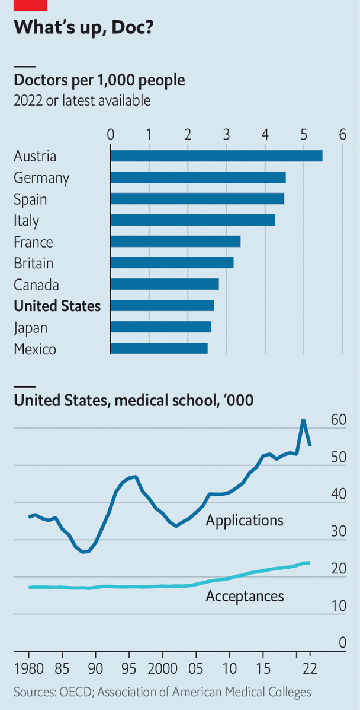image: The Economist
For many Americans, the doctor shortage has already arrived. More than 100m people today live in an area without enough primary-care doctors (the problem is particularly bad in rural areas). For mental health things are even worse: half of Americans live in an area with a shortage of mental-health professionals. With less than three physicians for every 1,000 people, America is behind most other wealthy countries, despite spending vastly more on health care (see chart).
The usual suspects have been blamed. As the baby-boomers age the need for medical care rises and the doctors among them retire. According to the AAMC, more than two out of five practising doctors will be 65 or older within the next decade, leaving even more vacancies. Covid-19 drove doctors away: an analysis by Peterson-KFF, a non-profit group, shows that health-care workers are quitting their jobs at a rate 30% higher than before covid (and about double the rate of all workers today). “A majority of physicians would not encourage our offspring to go into health care,” says Jesse Ehrenfeld, a physician and president of the American Medical Association. “People have lost the joy in the profession.”
Yet there is another explanation for the doctor shortage, which has to do with the pipeline into the profession, and which the American Medical Association has played a part in creating. It takes longer to train a doctor in America than in most rich countries, and many give up along the way. Future physicians must first graduate from university, which typically takes four years. Then they must attend medical school for another four years. (In most other rich countries, doctors need around six years of schooling.) After post-secondary education, American doctors must complete a residency programme, which can last from three to seven years. Further specialist training may follow. In all, it takes 10-15 years after arriving at university to become a doctor in America.
If the expense and length of the training were not off-putting enough, the number of places in the profession has also been artificially held down. In September 1980 the Department of Health and Human Services released a report warning of a troubling surplus of 70,000 physicians by 1990 in most specialties. It recommended reducing the numbers entering medical school and suggested that foreign medical-school graduates be restricted from entering the country. Despite the shortage, doctors trained abroad must still sit exams and complete a residency in most states regardless of their years of experience.
Medical colleges listened, and matriculation flatlined for 25 years, despite applications rising and the population growing by 70m over the same period (see chart). In 1997 federal funding for residencies was capped, forcing hospitals to either limit programmes or shoulder some of the financial burden of training their doctors. Some spots have been added back, but not nearly enough. Many potential doctors are being shut out of the profession. “Not everyone who would be willing to go through that training and could do it successfully is being allowed to,” says Professor Gottlieb, the economist.
In reaction to this artificial doctor shortage, a new type of medical degree gained popularity: DOs (doctors of osteopathic medicine). In 1981, there were only 14 osteopathic medical schools. Today there are 41. In most countries, an osteopath is someone who manipulates middle-aged spines. In America DOs are fully-licensed doctors. They represent about 11% of the physician workforce and 25% of medical-school students. “The American DO looks almost nothing like their international counterparts,” says Robert Orr, a policy wonk. “They basically mainstreamed themselves in response.”
Nurse practitioners and physician assistants have been given responsibilities typically reserved for doctors, such as writing prescriptions. Foreign-trained doctors have filled some of the gap too. Yet the shortage persists. This looks a lot like a labour market that has been rigged in favour of the insiders. ■
In most big cities violent crime is declining. In Washington the opposite is true
Though he has a black belt in karate, when a trio of armed boys in ski masks threatened Henry Cuellar, a congressman from Texas, outside his Navy Yard flat on October 2nd he swiftly handed over the keys to his Toyota Crossover. It was the 754th carjacking in America’s capital this year, amounting to roughly three a day since January. And it was not the first attack on a member of Congress. In February Angie Craig of Minnesota heroically fended off a man who grabbed her by the neck in the lift of the building where she stays near the Capitol.
Violent crime in the district is up by 40% this year. A proliferation of guns has turned dozens of petty disputes into killings: for the first time in a quarter of a century, more than 200 people were murdered before October 1st. That bucks the national trend. Elsewhere the crime epidemic that came with covid-19 is ebbing. In 30 cities that make their murder counts publicly available, the Council on Criminal Justice, a think-tank, found that by July there had been 202 fewer homicides than in the first half of 2022, a 9.4% drop. In Atlanta, Los Angeles, Philadelphia and Rochester the murder rate fell by more than 20%. Why then is the capital of the free world on track to record its worst year in decades?
Because the District of Columbia is not a state, the federal government has an unusual amount of say in its affairs. In March Congress reversed a revision to Washington’s criminal code passed by the district council which, among many other changes, dropped mandatory minimum sentences for carjacking. It was the first time Congress had nixed a local law in three decades. Mitch McConnell, the Senate’s minority leader, warned that the district’s “soft-on-crime” leaders needed “adult supervision”. By summer’s end three Republican congressmen had filed a bill to dissolve the council and mayor’s office and put federal lawmakers in charge.
Local government is certainly to blame for some of DC’s problems. Washington’s crime lab, a district agency responsible for processing forensic data, lost its accreditation in the spring of 2021 after it repeatedly tried to cover up mistakes it had made. Data from the first nine months after it closed show that just 7% of DNA samples collected at crime scenes were analysed. That made some cases impossible to prosecute. The lab is now seeking re-accreditation, two and a half years later. But even if it resumes work, Matthew Graves, Washington’s chief prosecutor, expects substantial litigation over whether courts can recognise the scientists at the lab as forensic experts again.
Letting the House of Representatives run the District would be no magic fix, however (especially given its own penchant for disorder). In fact, the current degree of federal involvement seems to be hindering Washington’s ability to ward off crime. Criminal-justice research suggests that people are not deterred from committing crimes based on the severity of punishment, but rather on whether it is certain and swift. The federal government’s chokehold on the district complicates both.
Capitol offences
In Washington, unlike any other American city, the us attorney is responsible for prosecuting both local and federal crimes (and defending the federal government in civil cases). The office’s split personality means that resources must be rationed. After January 6th 2021, for example, the former US attorney pulled staff off local cases to help prosecute insurrectionists who had stormed the Capitol.
In 2022 the office declined to prosecute 67% of local arrests, up from 31% in 2016. That is much higher than in other cities: according to the , last year Philadelphia prosecutors dropped just 4% of cases, Cook County, which includes Chicago, 14% and Detroit 33%. Such a high dismissal rate could well be discouraging police from making arrests. And though it could suggest triaging, where prosecutors prioritise slam-dunk cases, the office’s win-rate did not budge as they slimmed down their docket. That sends a message: in America’s capital, committing a crime may not have consequences.
Because there is no state apparatus, district judges who hear local cases are nominated by the president and approved by the Senate, just like federal judges. Since presidents are eager to fill circuit-court posts across the country to increase their political influence, Washington’s judges get sidelined. As a result the district has 12 vacancies and seven judges awaiting Senate confirmation. That is unusual: in Pennsylvania just two posts are unfilled, in neighbouring Maryland one. With nearly one-third of the bench empty, fewer cases go to trial. The backlog is not only an injustice; it also pulls the punch of a quick conviction.
More independence from the feds would probably help the District get back on track. But local leaders will be trusted only when they can reduce violence. In July the council passed a bill that temporarily raised the charge for firing a gun from a misdemeanour to a felony and made it easier to lock up violent offenders before trial. After Mr Cuellar was attacked they voted to extend that bill for another 90 days.
Last week the mayor introduced another one, to crack down on loitering, wearing dodgy masks and scheming to steal from shops. Congress ought to commend them for it. Instead, House Republicans’ latest appropriations bill includes a provision to allow out-of-state gun-owners to carry concealed weapons in the district. It is hard to imagine how that will help. ■
Campus protesters for Palestine are lowering the bar for “hate speech”
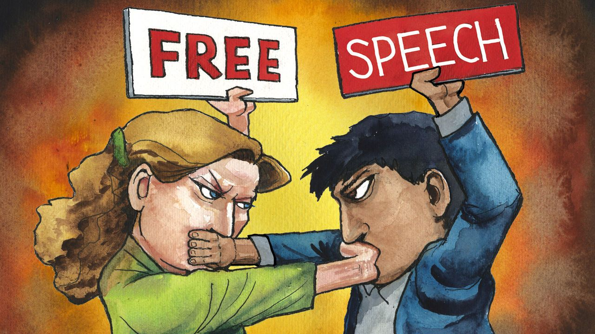
It’s always seemed a bit self-sabotaging: The leftist ideology rippling out from American college campuses this century has on the one hand favoured restricting speech, yet on the other posited that the implacable forces of capitalism and white privilege entrench right-wing power. Whose speech did these ideologues imagine would wind up getting suppressed?
This tension has not surfaced often on college campuses, at least not at the most exclusive schools. There, the forces of capitalism and white privilege—if not of tolerance and curiosity—were mostly routed. A dwindling minority of faculty members, as few as a tenth, identify as conservative. Administrators, whose ranks have ballooned and who oversee the “bias-response teams” that police speech, are even more likely to identify with the left.
Yet off campus, the forces of reaction began responding with strikingly symmetrical concerns about speech: conservative governors and legislatures across America have embraced the theory that certain ideas are too dangerous for all minds and certain views are too hurtful for particular ears. Bills proposed in states such as Texas seek to protect children from material that might cause “discomfort, guilt, anguish, or any other form of psychological distress on account of his or her race or sex”. But rather than aiming to safeguard the feelings of people from historically marginalised groups, such bills are meant to protect white children from the very ideas the left wants to promulgate.
Now a hard yet potentially constructive moment in America’s battle over speech has arrived. On prestigious campuses, the war in Gaza has shaken the prevailing power relationships, for the moment. Students attacking Israel for its response to the terrorism of Hamas have come under withering criticism, and worse: some have seen job offers rescinded or had their names and photos flashed on billboards paraded by trucks around their campuses.
Some right-leaning advocates of free speech are relishing the spectacle. For years, leading lights of the left insisted there was no such thing as a glibly censorious “cancel culture”. They liked to speak instead of an “accountability culture”, or a “culture of consequence” that justly punished offensive speakers. Now, as the cancellers wring their hands about being cancelled, hangs heavy in the air.
Rather than try to punish or silence students, a wiser choice would be to pocket the permissive standard they are setting, for when the bias response team next comes knocking. A recent Harvard/Harris poll showed 51% of Americans between 18 and 24 believed Hamas’s rampage could be “justified” by Palestinians’ grievances. Still, some may not realise, when they chant for a Palestine “from the river to the sea”, that they are advocating ethnic cleansing. But that is the message received by many Jews and others, and an argument of leftists uneasy with debate has been that the impact on the listener, rather than the intent of the speaker, should guide judgment of offensiveness. By that measure alone, it should be harder now for those sympathetic to pro-Palestine students to argue that any “hate speech” is off limits. University presidents are in effect embracing this standard by defending the right of these protesters to speak up. (They seem unlikely to advance the foul position that Jews are “white” and thus un-offendable.)
Some presidents are in trouble over their own speech. Donors to Harvard and the University of Pennsylvania have closed their chequebooks because they thought the presidents temporised on antisemitism. Again, this could prove constructive: after years of taking positions on matters of moment—positions that happily aligned with those of staff and students—leaders may acquire an appreciation for promoting debate rather than prejudging it.
“My hope is that the rediscovery of freedom of speech, and the discovery of political neutrality or political restraint—not commenting on every event of the day—will be something schools adopt, and they’ll stick with it,” says Greg Lukianoff, co-author of a new book, “The Cancelling of the American Mind”. “My fear is that this will be just like 9/11.” Mr Lukianoff, who is president of the Foundation for Individual Rights and Expression, a non-profit organisation, says that after the attacks by al-Qaeda universities rallied around professors vilified for criticising America. “When the threat is perceived as coming from off campus, they always rediscover freedom of speech and circle the wagons,” he says. “The test is going to be if they still feel that way when the threat comes from on campus, when it’s students demanding a professor be fired.”
What Dartmouth can teach
Amid the uproar—because of the uproar—there are signs of hope. Despite some vile acts, protests have generally been peaceful, even when students with opposed positions have gathered near one another. Faculty views have not been homogeneous. Not all speech has taken the form of shouting, and there have even been instances reported of listening. Within hours of the Hamas massacre, professors at Dartmouth from Israel, Lebanon and Egypt decided to jointly host two public forums on the crisis, according to the , a Jewish publication. They expected a dozen or so but drew hundreds; searching questions were asked.
At the second session, Susannah Heschel, a professor of Jewish Studies, observed that scholars learn “never to be satisfied with a simple narrative”. A fellow panellist, Ezzedine Fishere, an Egyptian novelist and former diplomat, then suggested the members of the audience ask themselves, “Are you trying to understand what is happening, or are you trying to find someone to blame?” People had a right to be indignant, he continued, but students also had a chance “to understand the complexity, which is often unpleasant because we come across things that we don’t like”.
“You don’t have to go to an Ivy League university in order to be indignant,” he continued in the same kindly yet firm tone. “The opportunity you have here is to learn.” ■
Read more from Lexington, our columnist on American politics:
Previously safe countries such as Ecuador are now racked with crime
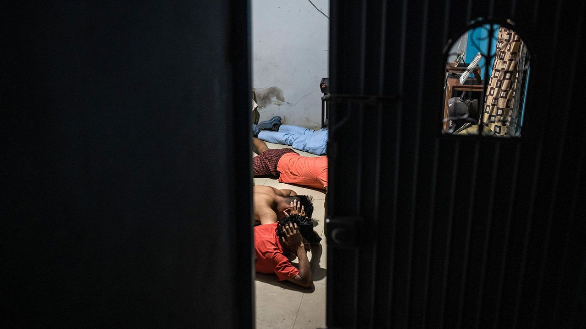
On October 27th 90 police officers, 22 vehicles and a water cannon stood ready in a field on the outskirts of Santiago, the capital of Chile. They were not there to guard a rowdy protest. Instead, they were there to monitor a : the burial of a young woman with alleged ties to drug-traffickers. Such an event, which often ends with bullets being shot into the air by mourners, would have once been unthinkable in Chile, long considered one of Latin America’s safest countries. But between May 2019 and September 2023 gangs held nearly 2,000 such funerals, according to Gabriel Boric, the president. In September Mr Boric sent a bill to Congress intended to limit them.
Latin America’s murder map is being redrawn. The region’s homicide rate has been falling since 2017, although countries such as Mexico and Brazil are still home to some of the cities with the highest murder rates on Earth. But in previously safe countries murder rates are hitting record levels, including Ecuador, Costa Rica and Chile. Call it the new narco network: a cocktail of drugs, guns and migration is fuelling gang violence across the region.
image: The Economist
Take Ecuador first. Its descent into chaos has been swift. In 2018 the country was a sleepy Andean patch of 17m people. It exported oil and fish. It had the fourth-lowest homicide rate in Latin America, at 5.8 per 100,000 people. But this year that rate is expected to top 35 per 100,000 people. It is already higher than Mexico’s and Brazil’s (see chart). Criminal groups kill with impunity, setting off car bombs and hanging dead bodies from bridges. In August a presidential candidate running on an anti-corruption platform was assassinated. The six supposed Colombian hitmen were found hanged in their prison cells in October.
Cocaine is the primary cause of Ecuador’s problems. For decades the country was mostly ignored by international drug-traffickers. That changed in the late 2000s, when gangs realised they could get even juicier mark-ups by shipping blow farther afield, to Europe and Australia. Partly as a result, gangs then changed their shipping methods: rather than pack it onto planes or boats to the United States, coke was squirrelled away inside container ships among legitimate goods.
After Colombian ports tightened their security, criminals looked for alternative shipping routes. Ecuador’s poorly-monitored ports became even more attractive after 2009, when Rafael Correa, a left-winger, then the president, undermined the country’s defences by closing an American naval base and, as such, ending co-operation with the US Drug Enforcement Administration. Ecuadorean gangs such as Los Choneros signed up as , moving coke for Mexican gangs and the Albanian mafia. By 2019 Ecuador had turned into a cocaine superhighway.
Locking up gangsters merely helped them strengthen their networks. Los Choneros thrived in the crowded prisons, recruiting heavily and launching attacks on their enemies. Targeted killings escalated into massacres, where dozens of inmates were dismembered and burnt. In 2021 some 330 prisoners were murdered in Ecuador, the highest number in the world. That same year coke ranked as Ecuador’s sixth-biggest export, worth nearly $1bn, or 0.9% of GDP, according to InSight Crime, an investigative outlet.
Similarly, this year in Costa Rica homicides are predicted to hit a record of 17 per 100,000 people, compared with 11 per 100,000 people three years ago. Cocaine is a big part of the problem there, too. Rising production in Colombia, where record amounts of coca leaf have been harvested in recent years, translates into larger shipments arriving in Costa Rica, says Álvaro Ramos, a former security minister.
However, coke is not the only reason for rising violence. In recent years many murders have been about the domestic marijuana market. Illegal cannabis is big business in Costa Rica: 3% of residents say they use it monthly, one of the highest consumption rates in Central America. Many gangs prefer weed to coke. Moving the white stuff is hard: it requires connections and corrupt officials (of whom there are relatively few in Costa Rica). By contrast weed has few barriers to entry and it can be sold anywhere.
The state is ill-equipped to stop these new gangs from thriving. Costa Rica abolished its military in 1949. Rodrigo Chaves, the president, blames past administrations and the judiciary for the situation. He says the country does not have enough police, the laws are outdated and the judicial system is too soft on criminals.
The third place in this new narco network, Chile, is not a murder hotspot. Last year its homicide rate reached a record 6.7 per 100,000 people. That is far below its neighbours, and close to the rate in the United States, of 6.3. But as its narcofunerals attest, crime is getting much worse. More cocaine and potent cannabis are being interdicted than ever before, with cannabis seizures tripling between 2018 and 2021. Its ports have become targets for gun-runners. Timber-trafficking is also a problem. The copper industry, which accounts for nearly 11% of the country’s GDP, is blighted by armed hijackings.
Cocaine blues
Chile is one of the region’s richest countries. It also hosts half a million Venezuelan migrants fleeing Nicolás Maduro’s regime. That combination has attracted mafias such as Tren de Aragua, Venezuela’s largest gang. It is battling to control Chile’s underworld, having built a human-trafficking empire across South America. Shoot-outs occur regularly in the port city of Iquique, as local gangs fend off incursions by the Venezuelans. Tren de Aragua’s cells run prostitution rings in several cities. Some 40 alleged members were jailed in one province last year. Dozens have been detained in police raids this year.
As a result, the share of Chileans who say immigration is bad has surged from 31% in December 2018 to 77% in April 2023, according to Cadem, a pollster. Another survey found that most blame illegal immigration for the rise in crime. Facing regional elections next year, the government has focused more on security. After three police officers were killed in March, Mr Boric pledged a 40% annual increase in the security budget and passed stricter penalties for crimes against police. Even so, many consider him too soft on crime.
What does this new narco network mean for the countries that were once among Latin America’s success stories? Many citizens will vote with their feet. Last year, Ecuadoreans were the second-biggest nationality to cross Panama’s treacherous Darien Gap on their way north.
Those who stay at home may turn to more extreme solutions. According to Latinobarómetro, a regional survey, fully 48% of Ecuadoreans, 31% of Chileans and 22% of Costa Ricans rank security as their country’s biggest problem, well above the regional average of 13%. Plenty of Latin Americans admire El Salvador’s authoritarian president Nayib Bukele, who over the past year has locked up 1.6% of the population in a sweeping gang crackdown and whose approval rating is 88%, the highest in the region.
Politicians across Latin America are taking note. On October 15th Daniel Noboa, a 35-year-old right-winger, won the presidential elections in Ecuador. He has promised to ape Mr Bukele’s approach, and build floating prisons in the Pacific. Some are sceptical that will curb the gang problem there. But such outlandish solutions are increasingly popular. Faced with ever more powerful gangs, many Latin Americans appear to think sacrificing civil rights is a price worth paying for security. ■
Costa Rica no longer seems a Latin American success story
Its state services are crumbling, and people are angry about it
On October 25th San José, the capital of Costa Rica, was filled with music and placards as several thousand marched to the presidential palace to call on President Rodrigo Chaves to provide more funding for the country’s public services. Many shouted in favour of more money for education, which does not receive the 8% of GDP annually that the constitution mandates. Others called for supporting the Caja, the institution that provides health care and pensions to , as citizens are known.
The country has long stood out among its neighbours in Latin America for its universal health care and education, along with its democratic institutions. Worries that they are worsening have been accelerated by the president’s current focus on cost-cutting. It also comes at a time when the country faces a surge in violent crime, and youngsters need opportunities so as to not get involved with gangs.
Mr Chaves says that he agrees that public services have deteriorated. But he pins the blame on the “bad administration” of the country for the past four decades. Mr Chaves says he “loves” that people march to the presidential palace to defend their rights, but his government does not have the headroom to spend more on health or education. “You have people defending...interests that don’t necessarily coincide with the general well-being,” he argues.
Costa Rica has long struggled with how to pay for its welfare state. The pandemic worsened matters, causing debt-to-GDP to rise to 68% in 2021. Mr Chaves has reduced that to 60%.
But many fret that Mr Chaves’s parsimony is an excuse for a full-scale overhaul of the welfare state. He has raised tensions with the Caja by calling it “bankrupt”. That is not true, says Álvaro Ramos Chaves, a former head of the institution (no relation to the president).
Similarly, the president has also worried some by criticising other liberal institutions, such as public universities and the independent media. Yet with an approval rating of over 60%, he is unlikely to change course. ■
Venezuela’s Supreme Court tests President Joe Biden
By barring the opposition primaries, the country risks an escalation of sanctions
For a fortnight in October, it did not seem delusional to feel hopeful about Venezuela. On October 17th the autocratic regime of President Nicolás Maduro met in Barbados with representatives of the opposition to agree on how free and fair future elections should be held. The following day, the United States government lifted most of the draconian sanctions it had imposed since 2019 on Venezuela’s oil, mining and finance sectors. Five political prisoners were then set free. On October 22nd, opposition primaries went ahead. Turnout was high, with the organisers saying more than 2m people voted. A thunderous 92% of those who participated backed María Corina Machado, one of Mr Maduro’s most determined critics (pictured).
Ms Machado, a former congresswoman and an advocate of privatisation, has already been banned from political office by Mr Maduro’s regime. But for a few giddy hours during and after the primary election, there was a flurry of optimism that perhaps a change was in the air. “All we Venezuelans want to do is vote,” said Carlos Fernández, a 74-year-old, as he cheerfully queued to cast his ballot at a polling station in Caracas, the capital. Some dared think that Mr Maduro’s government might finally have been persuaded that the prize of a lifting of American sanctions was a fair exchange for allowing a real presidential election—one in which it might even be defeated—to take place next year.
Then came the reality check. Jorge Rodríguez, president of Venezuela’s National Assembly—a body itself born out of a rigged vote in 2020—declared that the opposition-run primary was “a farce and a scam”. He insinuated that the opposition stole the identities of 2m Venezuelans. His allegations were followed up by actual legal threats, delivered by the regime’s attorney-general, Tarek William Saab, who announced that he was investigating those who had organised the primary vote. On October 30th the country’s Supreme Court, yet another arm of Mr Maduro’s government, declared that the result of the election was formally annulled.
“They basically wiped out the election. They’ve broken the deal”, said Marco Rubio, the Republican senator for Florida, to Antony Blinken, the US secretary of state, during a committee hearing at the Senate on October 31st. Mr Blinken insisted that the Venezuelan government would not get “a free pass” and that sanctions could be reimposed “if the regime has, in fact, violated the agreement that it reached”. Mr Blinken has previously stated that the regime has until the end of November to set a timeline “for the expedited reinstatement of all candidates”, and to release several American prisoners from Venezuela.
Full reimposition of sanctions seems unlikely. The United States “has several reasons to be careful,” says Mariano de Alba, from the Crisis Group, a think-tank in Brussels. In September 50,000 Venezuelan migrants crossed the Mexican border to the United States, outnumbering Mexicans for the first time. Along with ensuring its own access to Venezuelan oil at a time of global supply concerns, Mr Biden’s government is likely to want to stop that migration at its source by leaning on the regime. Meanwhile Mr Maduro’s government will be reluctant to cut itself from the boom that a sanction-free economy could offer in an election year, while retaining the option to cheat if necessary. The end of this Venezuelan tragedy does not seem near. ■
So far, it has not led to a populist right-wing surge
An aphorism about Canada is that it has too much geography and not enough history. Immigration has long been seen as the solution to both problems in the country’s century-and-a-half of existence. Canadians, who tend to think of themselves as pro-migrant, have broadly agreed that bringing in immigrants would improve the country’s economic growth and help fund the country’s generous social programmes as its population ages. Similarly, by making the country more diverse, migrants boost its culture, too.
That consensus is now starting to fray. For the first time in decades, the number of Canadians who want to take in fewer immigrants is increasing: it jumped from 34% in March to 53% in September, according to one poll. In another survey 44% of those asked either strongly or somewhat agreed with the statement “there is too much immigration to Canada,” compared with 27% last year.
What has caused this? Partly it comes down to the fact that a post-pandemic backlog in migration has turned into a deluge. For the year ending July 1st 2023, more than 1m newcomers arrived in Canada, edging the population over 40m. That was the highest annual population-growth rate, at 2.9%, since 1957. Statistics Canada, the usually sober statistical agency, announced it was “cause for celebration”.
Not all Canadians are putting out the bunting, though. A lack of affordable housing in the country, combined with a public health-care system that is stretched by a shortage of family doctors, has led some to become wary of newcomers. As people feel that their quality of life is deteriorating, they blame immigrants, says Victoria Esses, a specialist in attitudes towards migration at the University of Western Ontario.
The government wants to welcome nearly half a million new permanent residents this year, going up to half a million in 2025. By contrast the annual target in 2015 was 300,000 people.
So far no political leader in the country has called for a cut in the annual migration target. Indeed, many Canadians still say migrants are a good thing for the economy, even as they want fewer of them. But on November 1st Marc Miller, Canada’s immigration minister, announced that no further increases to the half a million number would be made. It was a concession, albeit a small one. ■
Singapore’s biggest money-laundering case has links to Chinese gamblers
It also sheds light on how Asia’s transnational crime gangs operate
When police showed up at Su Haijin’s lavish apartment in Singapore one early morning in August, he leapt from his second-floor balcony. The ethnic-Chinese businessman was found hiding in a drain with broken legs. The police meanwhile arrested nine other suspects in what Singapore has described as one of the world’s biggest money-laundering cases. It has since seized or frozen more than $2bn in luxury properties, cars, gold bars and cash.
The case is part of a broader campaign by Asian governments to counter a huge surge in money-laundering linked to organised crime. This criminal tsunami has roots in illicit online gambling by Chinese punters, much of it organised in South-East Asia by ethnic-Chinese gangs. In recent years the gangsters have also moved into other illegal activities, especially online scams. Police in Australia, Hong Kong, Malaysia, the Philippines and Thailand, as well as Singapore, have recently raided casinos and scam-shops to arrest and grab the assets of those responsible.
In October, Australian police arrested seven people on suspicion of laundering the proceeds of cyber-scams, smuggling and violent crime, and seized over $30m in assets. It was the third China-related money-laundering case they had made public this year. In June police in the Philippines raided a giant online gambling firm, rescuing 2,700 people who claimed to have been tricked into working in cybercrime. China’s summer blockbuster this year was not “Barbie” or “Oppenheimer” but “No More Bets”, a propaganda film warning of the risks of being trafficked to South-East Asia to work in cyber-scamming.
The crime surge can be traced back to a corruption crackdown launched by China’s leader, Xi Jinping, a decade ago. Gambling has long been illegal in China, except in Macau, whose casinos had hitherto been exploited by high-rollers not only for gambling, but also to evade the country’s strict capital controls. Individuals are permitted to move no more than $50,000 out of China each year. By arranging to gamble in Macau through middlemen, known as junkets, cash-rich Chinese (including corrupt officials looking to squirrel away stolen loot) could move money into international bank accounts. Mr Xi’s crackdown put an end to that. By 2015, Macau’s gaming revenues had slumped by 34%. This left Chinese gamblers and capital-control cheats looking for an alternative arrangement. They found it in online gambling.
It is also illegal in China, but permitted in several South-East Asian countries, whose online casinos tend to be accessible through Chinese social-media platforms. By 2017, some of the junkets that Mr Xi had driven from Macau had relocated to the Philippines, where they were licensed as Philippines offshore gaming operators (POGOs) to run online gambling firms serving clients located abroad, mostly in China. Around half a million mainland Chinese are now estimated to work in the Philippines’ online gambling industry. That is in part because popular online games such as blackjack and pai gow poker require the dealer to speak the same language as the player. The size of China’s online gambling market was $9.9bn in 2022, according to IMARC, a market research firm.
Under Rodrigo Duterte, president of the Philippines from 2016 to 2022, the country’s online casinos were encouraged. The industry generated some $350m in taxes between 2017 and 2019, says Alvin Camba of the University of Denver, who studies Chinese capital flows in South-East Asia. At its peak it comprised an estimated 250-300 online gaming firms, mostly linked to the Chinese online gambling industry and in many cases also conduits for money laundering, according to Dr Camba. Yet even many legal poGOs, providing tax revenues to the Duterte government, were being used as a cover for other crimes, especially online scams.
This is because some legal online gambling firms that target Chinese gamblers are run by criminal gangs. And as these gangs have developed their online operations they have often discovered new avenues for criminality. It is not uncommon, in Manila or Phnom Penh, to find a licensed online gambling firm on one floor of an office tower, and a sister operation running online scams on the floor below. In recent months authorities in the Philippines have raided several POGOs accused of using “casino infrastructure as a cover to launder, move and generate proceeds of crime,” says Jeremy Douglas, head of the United Nations Office on Drugs and Crime in South-East Asia. Such recent cases have suggested the region’s illegal online gambling industry is now much bigger than the licensed industry in terms of both platform numbers and revenues.
In the Philippines, the surge in illegal activity in and around licensed casinos turned opposition politicians and public sentiment against them. The number of POGOs in the Philippines began declining in 2020, says Dr Camba. Some crime gangs shifted to Cambodia and Myanmar, where they faced fewer strictures. Between 2014 and 2019, the number of casinos in Cambodia rose by nearly 160%, according to the Office of the United Nations High Commissioner for Human Rights (OHCHR) in South-East Asia. The gangs are alleged to have trafficked thousands of people to work in their casinos and “scam compounds” in those countries.
As in the Chinese blockbuster “No More Bets”, these victims are often lured by the promise of a lucrative job, only to find themselves trapped and forced to engage in cybercrimes such as investment and romance fraud. The scam centres they work in generate billions of dollars in annual revenues, according to the OHCHR in South-East Asia. The gangs launder their profits through their legal or illicit casinos—then typically invest the proceeds in property in cities such as Singapore.
Hongli International, a company implicated in the Singapore bust, illustrates how transnational gambling firms operate. According to Chinese court documents and Chinese-language news reports, it was founded as an online gambling firm by a Chinese-born individual, Wang Bingang, in 2012. Within a few years, it had become a lucrative gambling syndicate based in the Philippines, then Cambodia, targeting Chinese punters. In 2015 Mr Wang was arrested and repatriated to China, where he spent three years in prison for operating illegal gambling websites. After his release he moved to Singapore, where he continued to run Hongli, says Jason Tower of the United States Institute of Peace, a think-tank in Washington, who studies how Chinese gambling firms operate in South-East Asia. He estimates Hongli has generated billions of dollars in profits. One of Mr Wang’s relatives was arrested in Singapore’s dawn raid. According to the s, a Singapore daily, Mr Wang is listed as a “person of interest” in the case.
Governments have woken up to this nightmare of gambling, scams and money laundering. In September the UN, China and the Association of South-East Asian Nations teamed up to counter it. Italy and Spain recently announced crackdowns on Chinese money-laundering networks. They will all struggle. Only 2-5% of money-laundering flows are intercepted, says John Langdale of Macquarie University in Australia. However hard governments try to raise that figure, the crime gangs, incentivised by their enormous profits, are likely to find new means in the depths of the internet to stay a step ahead. ■
Japan’s ageing society is limiting youthful pleasures
SHIBUYA, A DISTRICT in Tokyo known for its zesty pop culture, is a place to find strange clothes and youthful frolics most days. Yet on Halloween the capital’s top tourist attraction traditionally takes it up a gear. For years crowds of partygoers in fancy dress have filled Shibuya’s neon-lit streets and celebrated Scramble Crossing. In 2019 around 40,000 flocked to the district on Halloween. But this October 31st the mood was much less joyous. The killjoys of Shibuya’s local government had banned Halloween festivities in the ward.
Unwelcoming signs were plastered all over it, including a billboard reading: “No events for Halloween on Shibuya streets”. Outside the district’s metro station, a famous meeting-place, security guards blew whistles and hustled away anyone tempted to linger. Most monstrous to Shibuya devotees, police sealed off the spot’s iconic statue of Hachiko, a legendary Japanese dog known for its loyalty. “We came here to see Hachiko. How could they do this?” complained Olga, 31, a Russian tourist, looking disconsolately at the boarded-up dog.
The crackdown was in response to a Halloween tragedy last year in Seoul, in which over 150 people were crushed to death. Officials feared Shibuya’s narrow alleys could see another disaster. According to Fukuda Mitsuru, a crisis-management expert, the fact that Halloween festivities are a fairly recent foreign import exacerbated such concerns.
Yet the curbs are part of a broader crackdown on fun-seeking in Shibuya. Complaining of excessive noise and litter, the ward banned public alcohol consumption at certain times. Such measures seem unobjectionable in isolation. Drunken salarymen lying prostrate on pavements is a less edifying Tokyo spectacle. But combined with the Halloween ban they look to many like an overreaction against youthful spirits by heavy-handed and often aged officials.
That was certainly the view of those carousers who did bravely make it to Shibuya this week. “I come to Shibuya every year for Halloween, so I feel betrayed,” said Takeuchi Tetsuya, wearing a Mickey Mouse costume.■
Are India’s rulers wise enough to take a lesson from their neighbour?
Turmeric is the key to a good curry—ask any South Asian. The spice supplies a distinctive flavour, aroma and bright yellow colour. Many believe that consuming turmeric, or even bathing in it, also has multiple health benefits. But in much of South Asia, and perhaps far beyond, the spice also exacts a terrible cost.
That is because turmeric sold in these places is routinely adulterated with lead chromate in order to brighten its golden hue. And exposure to lead, a neurotoxin, increases the risk of heart and brain diseases. Children are especially vulnerable, because lead poisoning stunts cognitive development. According to a study by the Centre for Global Development, a think-tank in Washington, lead poisoning among children in poor countries explains 20% of the learning gap between them and their peers in rich countries.
People in South Asia have the highest levels of lead in their blood, according to a new study published in the . Pinpointing the main cause had long seemed daunting, because lead is everywhere in the region. Traces of the metal can be found in cooking utensils, cosmetics and other everyday products. But in 2019 a team of researchers from Stanford University and the International Centre for Diarrhoeal Disease Research, Bangladesh (ICDDR, B ), a health-research institute, began focusing on turmeric adulteration. Working with the country’s food-safety authority, and politicians right up to Sheikh Hasina, Bangladesh’s powerful prime minister, they then launched a nationwide campaign to root out the use of lead-chromate pigment in turmeric. It turns out to have been hugely successful, according to a new study published in the journal .
In less than two years, the share of turmeric samples in Bangladeshi markets that contained detectable lead fell from 47% to 0%. This elimination of lead adulteration had a near-immediate public-health impact. Among workers at turmeric mills, blood lead levels dropped by 30% on average. Across Bangladesh the reduction in lead exposure probably saved thousands of lives for little cost. A preliminary analysis by Pure Earth, a New York-based environmental NGO, suggests the programme delivered an additional year of healthy life for $1. (Generating the same effect through cash transfers is estimated to cost $836.)
In a region where rapid policy responses, let alone effective ones, are rare, Bangladesh’s success is all the more impressive. It was founded on recruiting support from policymakers by explaining the problem to them in a credible way, says Jenna Forsyth of Stanford University. Between 2014 and 2018, she and her colleagues collected data to demonstrate the link between turmeric consumption and high lead exposure levels among pregnant women in rural Bangladesh. Armed with these findings, the researchers were able to convince not just Bangladesh’s food-safety officials to take urgent action, but also the prime minister’s office.
The mass-media campaign that followed included graphic warnings about lead-tainted turmeric. Sheikh Hasina commented on the problem on national television. Around 50,000 public notices about it were plastered in markets and public areas. At a big turmeric processor, researchers tested workers’ blood samples to show how lead was poisoning those responsible for pulverising, colouring and packaging the tubers from which the spice is produced; then publicised the results.
Turmeric adulteration was declared a crime—and this change was also broadcast. A bust on a major turmeric producer was aired on TV. Two wholesalers were prosecuted in a mobile court for selling contaminated turmeric, a trial the media was again encouraged to cover. The wholesalers were convicted, fined and had much of their stock confiscated.
The Stanford team hopes to help launch similar campaigns in India and Pakistan, where they believe turmeric adulteration may be even more prevalent and deep-rooted. Much of the poisonous pigment used in Bangladesh was imported from India. The spice supply chain is also longer and more complicated in India than in Bangladesh, where a handful of wholesalers serve the entire turmeric market.
The broader lessons from Bangladesh are applicable to all sorts of policy problems, suggests Mahbubur Rahman of ICDDR, B. First, identify and cultivate the most influential champions for change, he says. The impetus they generate can then be sustained by launching broad-based coalitions. In Bangladesh this meant rallying researchers, government, media outlets and private firms to collaborate against poisonous spices. It was hardly a secret recipe for success; but, as when making curry, the challenge lay in putting the ingredients together judiciously. ■
Politics hampers Delhi’s fight against air pollution
Narendra Modi’s central government is at war with Delhi
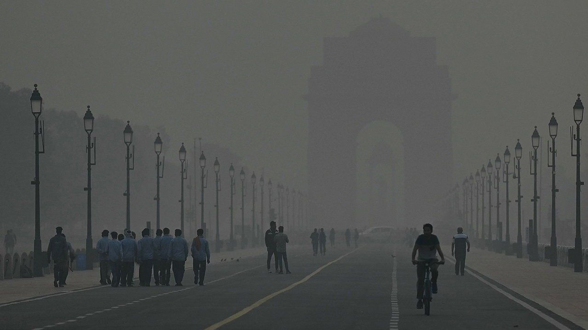
DURING THE last week of October, Delhi’s air quality began its seasonal shift from unpleasantly foul to sickeningly filthy. As temperatures dropped and clouds heavy with brown particulate matter drifted in from neighbouring states, the official rating of air quality in India’s capital went from “poor” to “very poor” and then “severe” in places. This means that Delhi’s air, the most polluted of any big city, is now hazardous to breathe even for healthy people. It is likely to remain so for much of the next three months.
Air pollution in South Asia is estimated to claim over 2m lives a year. Partly caused by agricultural practices, including stubble burning, it is most severe in northern India, especially in winter, when cold air traps pollutants in the mostly windless Indo-Gangetic Plain bordered by the Himalayas. A recent study suggests that the average resident of Delhi loses up to 12 years of life to air pollution. According to official figures, in 2022 Delhi’s air was considered “good” or “satisfactory” on only 68 days. The average concentration of particularly harmful PM 2.5 particles—which can enter the bloodstream and cause heart disease and respiratory problems—was 98 micrograms per cubic metre. That is nearly 20 times the level considered safe by the World Health Organisation.
As sources of air pollution are often far from the worst-affected places, it can only be significantly mitigated by different authorities acting in concert. Yet partisan rivalry often gets in the way—as is illustrated by the latest row between Delhi’s government, which is run by the Aam Aadmi Party (AAP), and the central government of Narendra Modi’s Bharatiya Janata Party (BJP).
The argument pits Delhi’s environment ministry against the city’s pollution control committee, which is headed by a bureaucrat on secondment from the national home ministry. In late October the capital’s environment minister claimed this official had unjustifiably withheld funding from a years-long study to measure the source of pollutants in Delhi’s air. The pollution control committee claimed to have identified methodological flaws in the study which, it said, were designed to absolve the aap government of blame for the problem. The city administration, in turn, claimed the scuppering of the study was part of a pattern of government officials loyal to the BJP deliberately undermining the AAP’s work. Whoever is right, the study is unlikely to be resumed—a serious setback for pollution mitigation in the world’s filthiest city.
The row is part of a broader fight between the AAP and centre over control of Delhi’s entire bureaucracy. In August the central government passed a law in effect awarding control to itself. This superseded a Supreme Court verdict on the issue in the AAP’s favour. A constitutional challenge by the AAP government is pending.
The row is threatening a rare hopeful anti-pollution effort. A regional anti-pollution body, encompassing Delhi, its neighbouring states and several central-government ministries, was recently launched to co-ordinate smog mitigation policies. The fact that the AAP also governs Punjab, where much of the stubble-burning happens, made that seem all the more promising. Yet the body will not achieve much so long as the central and Delhi governments prize partisan advantage over making Delhi’s air safe to breathe. ■
Narendra Modi has shifted India from the Palestinians to Israel
The pivot reflects Indian domestic politics and new interests in the Middle East
FOREIGN NEWS usually gets short shrift in India. Yet for the past month the country’s television channels have been dominated by wall-to-wall coverage of events in Israel and Gaza, mostly from Israel’s perspective. News anchors in bulletproof vests stand in the desert delivering breathless reports on the aftermath of Hamas’s atrocities in Israel on October 7th. Talk-show hosts restage the Palestinian terrorist group’s attack from Gaza with toy soldiers and miniature bulldozers. Weeks into the war, coverage remains intense.
The media’s fascination with Israel’s plight and retribution coincides with a marked shift in the Indian government’s stance on the conflict between Israel and the Palestinians. It has moved from backing the Palestinians to more or less unqualified support for Israel. The pivot is based on a realist reappraisal of Indian interests in the Middle East. It has also met with strong public supporter from Mr Modi’s domestic supporters, which is gratifying for Narendra Modi’s government ahead of state elections this month and a general election next year.
In the past, like many countries in the global south, India tempered any expression of support for Israel with expressions of concern for the Palestinians’ plight. No more. Mr Modi took to X (formerly Twitter) within hours of Hamas’s assault to express his horror at the “terrorist attacks” and declare that “we stand in solidarity with Israel”. It took five days for India’s Ministry of External Affairs to reiterate, in response to questions from reporters, that India continued to support a two-state solution to the conflict. On October 27th, in a departure from its usual voting record, India abstained as the UN General Assembly adopted a resolution calling for a humanitarian ceasefire in Gaza; it objected that the text did not condemn Hamas’s assault.
The shift reflects India’s growing defence and commercial ties to Israel. Co-operation between the two countries has been deepening ever since Israel provided India with military help during the Kargil war against Pakistan in 1999. That was long before America took a serious interest in military co-operation with India. Over the past decade India has bought missiles, drones and border-security equipment (and probably surveillance software, though it has not admitted this) from Israel, making it the Israeli defence industry’s biggest foreign customer.
A bromance between Mr Modi and Binyamin Netanyahu, Israel’s prime minister, has deepened the relationship. So has the two countries’ shared preoccupation with fighting terrorism, especially the Islamist variant. Explaining the abstention in the UN vote, Subrahmanyam Jaishankar, India’s foreign minister, said in a speech on October 29th that India took a strong position on terrorism “because we are big victims of terrorism”.
India has also been increasing its ties with Gulf Arab countries, especially Saudi Arabia and the United Arab Emirates. And it can ill afford to alienate them; it depends on them for much of its oil and goodwill towards an estimated 9m expatriate Indian workers. Yet the fact that both countries have recently moved closer to Israel has allowed Mr Modi to effect his shift with alacrity. Even in the current crisis, the Saudis and Emiratis appear reluctant to allow the events in Gaza to cause a rupture in their long-term rapprochement with Israel.
Domestically, the Modi government’s pivot is essentially all upside. The Congress-led opposition has condemned it; leaders of India’s 200m Muslims have heavily criticised Israel’s military response. Yet the Indian middle-class that mostly backs Mr Modi is especially concerned about Islamist terrorism. Its members look on Hamas’s attack and recall the tragedy Mumbai suffered in 2008, when Pakistani Islamists killed 175 people and wounded more than 300 during a four-day rampage. It included an attack on a Jewish community centre in the city, where the terrorists murdered the rabbi and his pregnant wife.
There is a small risk the government will overplay its hand. As the civilian death toll in Gaza rises, India’s Arab partners might turn against the Israelis and their backers more aggressively. Mr Modi has latterly hedged against that possibility. He has reached out to Palestinian leaders, offering Indian condolences and humanitarian aid. Meanwhile, his Hindu-nationalist henchmen are unrestrained in using the conflict to stoke the Islamophobia that has propelled their party’s rise. Even if Mr Modi’s pivot becomes difficult abroad, it will probably help him win elections.■
Xi Jinping is trying to fuse the ideologies of Marx and Confucius
A new television show places them at the centre of Chinese culture
KARL MARX and Confucius may have lived 2,400 years apart, but on Chinese state television they stroll together through an ancient Chinese academy. In a sun-dappled bamboo grove, a group of student painters invite the two philosophers to be their models. As the young people paint, Marx and Confucius chat. They are impressed with China’s high-speed trains, among other things. When the portraits are revealed, the thinkers are surprised. Marx is depicted in a Tang-dynasty robe; Confucius is portrayed in a Western suit and tie. But both are delighted. “I’ve been in China for more than a hundred years,” says Marx (in Mandarin). “Actually, I have been Chinese for a long time.” Confucius chuckles, stroking his beard. Long hair looks a bit strange with the suit, he says, but it make sense to keep changing.
The scene is from “When Marx Met Confucius”, a television series created by the propaganda department in Hunan province and released in October. It is not popular. On Douban, a film website, it has received only 100 or so reviews, most of them negative (eg, “makes me sick”). But for those who can stomach it, the show is a good way to understand Xi Jinping Thought on Culture, the latest branch of the Chinese leader’s philosophy.
Other parts of Mr Xi’s thinking emphasise tighter Communist Party control over such things as diplomacy, defence and the economy. Xi Jinping Thought on Culture, announced in October, attempts to fuse pride in Chinese tradition with loyalty to the party. Its most important tenet is the “two combines”, party-speak for a decades-long process to make Marxism more Chinese. The first combine refers to early efforts to adapt Marxism to China’s “specific reality”. Such ideological flexibility allowed Deng Xiaoping, China’s former leader, to pursue economic reforms in the 1980s. The second combine is Mr Xi’s idea: to sinicise Marxism by melding it with traditional Chinese culture.
The effort represents the culmination of a radical turnaround for the party, which once considered tradition its enemy. During the Cultural Revolution of 1966-76, Mao Zedong’s Red Guards destroyed Confucian temples, burnt Confucian texts and desecrated the sage’s tomb. Young people denounced their elders, contradicting Confucianism’s emphasis on filial piety. But after Mao’s death in 1976 the party warmed to Confucius, or at least to a simplified version of his teachings that emphasises deference to authority. Deng allowed public celebrations of the philosopher’s birthday. Jiang Zemin and Hu Jintao, Deng’s successors, appropriated Confucian ideas. In the early 2000s Chinese scholars debated whether Confucianism might even replace Marxism as China’s guiding ideology.
Mr Xi is putting an end to that debate. Marxism is the “soul” and Confucianism the “root” of Chinese culture, he says. Neither ideology can be abandoned. Instead, they must be merged.
“When Marx Met Confucius” guides viewers through this new thinking. For much of the five episodes, the philosophers sit on a stage in front of students and a rotating cast of scholars and party officials. A young woman wearing , traditional robes, plucks a , or ancient zither, in the background. The philosophers converse with holograms of figures such as Vladimir Lenin and Mao, who explain how their thinking is compatible. The programme’s hosts then explain how it all fits into Xi Jinping Thought.
The show glosses over big differences between Confucius, who believed hierarchies were necessary to maintain social order, and Marx, who called for a proletarian revolution. “You were trying to maintain stability and I was seeking the liberation of all mankind,” says Marx. “But aren’t we both seeking the greatest good for all humans?” When Marx mentions his vision of a classless society, Confucius says he has a comparable concept called (great unity). “So we have many similarities!” says Confucius. The students applaud.
The Cultural Revolution is mentioned—once. It did “great damage”, says a host. But Mao doesn’t get the blame. At one point his spirit appears, assuring Marx and Confucius that he was a faithful communist and defender of traditional Chinese culture. Confucius nods approvingly.
The show spends more time bashing the West. A host blames foreign bullying of China in the 19th century for a “long-term cultural inferiority complex” (exacerbated by Chinese intellectuals, who at the time claimed China’s traditions made it weak). The early reform era of the 1980s is remembered as a dangerous period of “historical nihilism”, when Western ideas misled Chinese people into criticising their society and government. “Can a country become strong if its economy develops but its spirit is lost?” asks the host, quoting Mr Xi.
No is the implicit answer. A good thing, then, that Mr Xi is restoring China’s confidence, the show claims. Not only that, he and the party are pursuing the common good worldwide, in contrast to dastardly Western countries. America exports cluster bombs, while Japan dumps nuclear wastewater into the ocean, says a host. China, a “responsible great power”, would never do such things, he adds. Marx is impressed. He congratulates China for revitalising socialism and fulfilling his vision.
“When Marx Met Confucius” is easy to ridicule, but parts of its message are worrying. In the last episode, a student asks Confucius for advice on Taiwan, the self-governing island that China claims. “We truly have a traditional culture of peace, but some Western countries only believe in the law of the jungle,” says the student. “If they bully us or obstruct our national unification, should we still speak to them of peace?” Confucius furrows his brow. Goodness should be met with goodness, but hatred should be met with justice, he says. A host jumps in. China seeks peace, but if its dignity and interests are hurt, it will use military force to pursue national unification, he says. Images of fighter jets and warships fill the screen. ■
China and Bhutan aim to resolve a long-running border dispute
That has caused India to worry about its own territory and a loss of influence
Chinese diplomats have had a rough ride in South Asia for most of the past four years. Relations with India took a nosedive after a deadly border clash in 2020. Debt problems, political instability and militant attacks on Chinese nationals have strained an “ironclad” friendship with Pakistan. Mass unrest toppled a China-friendly president in Sri Lanka last year after it plunged into a debt crisis linked to Chinese lending. Bangladesh also shelved several infrastructure projects tied to China’s Belt and Road Initiative.
image: The Economist
Lately, though, China has bounced back in some of the region—to India’s dismay. The most recent Chinese success came with Bhutan, a Himalayan kingdom of 770,000 people wedged between China and India. It is the only Asian country without formal diplomatic ties to China. Along with India, it is also one of only two countries whose land borders with China are officially disputed. And to complicate matters further, the disagreement covers an area, known as the Doklam plateau, where the Indian, Chinese and Bhutanese borders meet (see map).
The breakthrough was the first ever visit to Beijing by a Bhutanese foreign minister. Tandi Dorji met his Chinese counterpart, Wang Yi, on October 23rd (see picture) and China’s vice-president, Han Zheng, the following day. He also participated in the two countries’ first talks on the frontier dispute since a stand-off between Chinese and Indian troops in Doklam in 2017.
In his meeting, Mr Wang said China was ready to complete the border talks as soon as possible and to establish formal ties with Bhutan, describing it as a “historic opportunity”. China’s readout quoted Mr Dorji saying he too was keen for an early border settlement and progress towards establishing formal ties. A joint press release was less forthright, saying just that the two sides agreed to continue pushing forward with the border negotiations.
But Bhutan’s prime minister, Lotay Tshering, suggested to an Indian newspaper earlier in October that the end goal was formal ties with China. “Theoretically, how can Bhutan not have any bilateral relations with China? The question is when, and in what manner,” he said. He also mentioned that a possible land swap involving Doklam had been proposed.
The rapprochement is geopolitically important for several reasons. Bhutan does not have formal diplomatic ties with any of the five permanent members (or P5) of the UN Security Council—America, Britain, China, France and Russia—largely owing to its history of isolationism and non-alignment in the cold war. Opening formal ties with China could lead Bhutan to do the same with other P5 members, drawing it into the ongoing tussle for diplomatic influence around China’s borders.
But it is most significant for India. Under a treaty signed in 1949, India gained a formal right to guide Bhutan’s foreign policy in exchange for free trade and security guarantees. The foreign-policy provision was scrapped in 2007, but India has remained Bhutan’s most important diplomatic and economic partner.
Indian officials’ chief concern is Doklam because it is near the Siliguri corridor (also known as “the chicken’s neck”) which connects India’s north-eastern states to the rest of the country. Indian authorities have long feared that China, which won a brief border war with India over a nearby part of the disputed frontier in 1962, might try to sever the Siliguri corridor.
India may now have accepted that diplomatic ties between China and Bhutan are inevitable, given the lure of Chinese trade and investment. But it wants a role in the border talks and is sceptical about a land swap. Progress might still be possible, given that China and India both seem keen to stabilise their border dispute. Since the deadly clash in 2020, they have pulled back troops from several flashpoints, creating buffer zones where neither side patrols.
But Indian officials also have concerns about China’s renewed efforts to enhance its clout in a region that India considers its backyard. Several South Asian states are indebted to China. The Maldives, where India had recently reasserted its influence, elected a new pro-China president, Mohamed Muizzu, in September. He has since asked India to remove the roughly 70 Indian troops stationed there to maintain radar stations and other military assets.
In Sri Lanka, too, India has pushed back against China’s influence in recent years, but the island nation has lately indicated that it seeks strong relations with both of Asia’s giants. On October 25th Sri Lanka’s government allowed a Chinese scientific-research vessel to dock in Colombo, its biggest city, despite American and Indian security concerns. Sri Lanka’s president, Ranil Wickremesinghe, also attended the Belt and Road Forum in Beijing in October. The geopolitical jockeying is sure to continue. But China is still very much in the game. ■
How China’s delivery drivers quietly fight to improve their lot
Sometimes there is a good reason that food ordered in Beijing doesn’t arrive
China’s food-delivery drivers have a lot to complain about. Many work long days, earning as little as 5 yuan ($0.68) per delivery. Heavy rain and heatwaves do not stop them—in fact, demand is highest during such weather. Delivery apps promise fast turnarounds, so drivers, most of whom work for contractors, are sometimes fined for arriving late (not to mention scolded by customers). The only way to keep up, they say, is by running red lights and speeding. Accidents are common.
Drivers and couriers have pressed for improvements, holding around 400 protests in the past five years, says China Labour Bulletin, an NGO in Hong Kong. Perceived troublemakers can face consequences, such as being cut out of deliveries. Nevertheless, a new study suggests that labour activism among drivers may actually be more widespread than previously thought. Some are using quieter tactics to get their way.
The research was carried out by Bo Zhao of Fudan University in Shanghai and Siqi Luo of Sun Yat-sen University in Guangzhou. One of the authors spent 18 months working as a delivery driver in southern China. During this time they witnessed five small-scale strikes, none of which was known to the public. Rather than taking to the streets, upset drivers simply logged out of the app that assigns deliveries during a period when demand was high, such as at lunchtime. That was enough to cause delays to snowball, forcing the company to reject orders.
Even the threat of such action causes some supervisors to bend rules on when drivers get fined, says the study. Another piece of research, from 2021, found that small-scale strikes were sometimes effective in convincing contractors to increase (slightly) how much they pay.
It helps when the public gets involved. In 2021 a company called Ele.me said it could pay only 2,000 yuan ($273) in compensation to the family of a delivery worker who died on the job. After a backlash on social media, the company agreed to cough up 600,000 yuan. Later that year, the government demanded that delivery companies improve working conditions for drivers and couriers. But little has actually changed, says China Labour Bulletin.
More organised and ambitious labour activism would probably lead to more gains for workers. But the Chinese government is unlikely to tolerate it. For years Chen Guojiang, a food-delivery driver in Beijing, posted videos online trying to drum up support. At one point he said he was talking to 14,000 drivers via groups on WeChat, a messaging service. He encouraged them to work together and fight for better conditions. That was too much for the authorities. In 2021 he was arrested for “picking quarrels and provoking trouble”, a vague charge commonly used to punish activists. Small, quiet victories may be the best drivers can hope for.■
Why Chinese mourn Li Keqiang, their former prime minister
Missing the Communist Party that sought legitimacy through technocratic performance
The umbrellas gave them away. Even from a distance, these were unmistakably townsfolk, shielding themselves with parasols from an autumn sun that no Chinese farmer would fear. On and on they trudged: a long column of outsiders, following a country lane between rice paddies and fishponds towards the village of Jiuzi, ancestral home of Li Keqiang, China’s prime minister until his retirement earlier this year.
They were mourners, turning out in their hundreds on this warm Sunday, a few days after Li’s sudden death at the age of 68. Most held bunches of white and yellow chrysanthemums, a funeral flower in China. Under their umbrellas some were formally dressed in black and white. Parents cajoled young children to keep walking, after parking cars in fields well outside the village.
No Communist Party diktat had summoned these grieving citizens. Nor had convoys of buses brought them. Quite the opposite. Official media outlets have played down Li’s death. Instead, state media have devoted their efforts—as always—to extolling Xi Jinping. China’s leader has spent more than a decade concentrating power in his own hands, at the expense of government ministries and of Li Keqiang, who oversaw them as prime minister. The diminishing of Li continues even after his demise. Though terse, his official obituary finds room for four tributes to the leadership of the party central committee “with Xi Jinping at the core”.
For days, censors have deleted large numbers of online tributes to Li, leaving only the blandest untouched. Reports abound of universities banning students from organising memorials. There is a grim logic to this caution. More than once, a public figure’s passing has offered Chinese citizens a chance to stage demonstrations, notably after a former party boss, Hu Yaobang, died in 1989.
For all that discouragement, thousands of Chinese have persisted in leaving flowers and handwritten notes for Li, from Jiuzi to cities where he lived and worked, such as Hefei and Zhengzhou. Some observers, including Chinese intellectuals outside the country, detect in these tributes a challenge to Mr Xi, and a yearning for a more reformist China. One exiled writer calls this moment a “flowers revolution”. Such intellectuals remember Li’s youth as a brilliant law student at Peking University, with an interest in Western legal systems (he helped to translate a book on the rule of law by Lord Denning, a British judge). They are undaunted by Li’s actual record as prime minister from 2013 to 2023. True, they concede, that decade saw the party systematically dismantle checks and balances on its power, and spurn the rule of law in favour of an iron-fisted alternative that Mr Xi calls “law-based governance”. But in their telling, Li’s humiliations make him an icon for others whose hopes have been crushed in Xi-era China.
Chaguan is not about to tell Chinese exiles they are mistaken about their own country. Indeed, despite the censors’ best efforts, social-media users have circulated images of floral tributes and graffiti that do look like anti-Xi complaints. Many of these quote celebrated Li sayings, in particular his pledge that China’s opening to the world is as irreversible as the flow of the Yangzi and Yellow rivers. It is safe to assume the intention is to grumble about the inward-looking nationalism of the Xi era.
For all that, it would be unfair to claim that every mourner for Li is a protester. When this columnist visited Jiuzi, the crowds were on their best behaviour, not defiant or fearful, as would be expected at an actual demonstration in China. Local farmers sold cut-up sugar cane to visitors, as police directed traffic. When asked why they had come, several mourners offered apolitical answers about a local man who reached the top.
A mother who had brought her young son to lay flowers praised Li as “a good premier who did practical things for the people”. Yet listen carefully, and some of that cautious praise was revealing. The mother noted that Li went to the epicentre of the covid-19 pandemic, Wuhan, “at the earliest possible time”. She did not mention that Mr Xi took months to visit Wuhan and never visits natural disasters while they are under way. Perhaps the mother was not thinking of this. But it is a common gripe.
Several people in Jiuzi noted that Li, the son of a rural official, knew poverty as a child. To them, this explained Li’s focus on concrete problems, such as migrant workers not being paid wages they are owed. One man contrasted Li’s humble origins with Mr Xi’s background, as the son of a party elder and Politburo member.
Around China, sites linked to Mr Xi and his family have been lavishly restored as “red tourism” destinations for party pilgrims. In Jiuzi, a farmer recalled talk of beautifying the village after Li achieved high office. But whenever their illustrious ex-neighbour heard of special treatment for Jiuzi, he “would call and tell the local officials not to do it,” the farmer said approvingly.
The death of accountability
Two seemingly disparate groups—angry dissenters and nominally apolitical families laying flowers in Jiuzi—do in fact overlap. The link involves accountability and Li’s willingness to admit that China still has serious problems. At a press conference in 2020, Li shocked some urbanites by reminding them that around 600m Chinese subsist on just 1,000 yuan ($137) a month. He also admitted that covid had hit poor families hard. At other times he called for checks on arbitrary government power and for the public to supervise officials’ work. Many Chinese recall those Li sayings now. They are making a political point whether they admit it or not.
As a reform-era technocrat, Li served a one-party system that sought legitimacy through governing performance. Many Chinese miss that time. That is surely what they mean when they call Li practical and in touch with the masses. Today China has one-man rule and the party rejects external supervision. To admit to problems in this China is to doubt Mr Xi: an impossibility. China will be mourning that loss of accountability for a long time to come. ■
The pace of Israel’s war in Gaza far exceeds previous conflicts
But Israel’s generals think they could be fighting Hamas in Gaza for a year
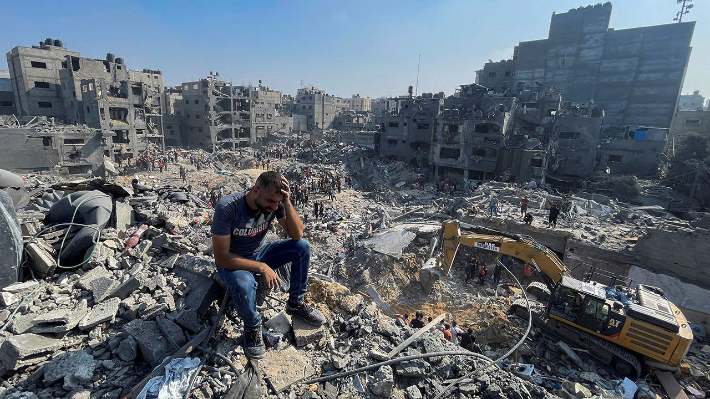
THE WORLD shook, and then the ground opened. On October 31st Israeli jets carried out air strikes in Jabalia, a refugee camp in northern Gaza. A witness reported hearing multiple explosions, which left huge craters. Videos from the site showed apocalyptic scenes: buildings crumpled and canted at odd angles, dead bodies being pulled from the rubble. Dozens were killed. The Israeli army said it was targeting the underground headquarters of a Hamas commander, Ibrahim Biari, and militants with him, and that much of the damage was caused when tunnels collapsed.
The war between Israel and Hamas, the militant group that controls Gaza, is nearing the end of its first month, and it is already the bloodiest conflict between Israelis and Palestinians since 1948. Since itbegan on October 7th, when Hamas murdered more than 1,400 Israelis, the Israel Defence Forces (IDF) has struck more than 11,000 targets in Gaza, far exceeding the pace of previous wars. The Hamas-run health ministry says that more than 8,800 Palestinians have been killed, including some 3,500 children. Large parts of northern Gaza, normally home to more than 1m people, have been reduced to rubble.
Much of Israel’s formidable border fence with Gaza is gone. Hamas breached it in 29 separate locations during its attack, and Israel has dismantled more of it to facilitate the entry of armoured battalions. Israeli troops entered Gaza on October 27th from two places: near Beit Hanoun in the north, and at a point just south of Gaza city in the narrow waist of the 45km-long strip. Their goal is to bisect Gaza and gradually encircle the northern part of the enclave, which they have told civilians to evacuate.
Hamas does not want a head-on fight with an advancing IDF, which has vastly superior firepower. Instead it will seek to harass Israeli troops with guerrilla warfare. Israeli military sources think they have only a short window of opportunity in which to operate with large formations inside Gaza. They will try to destroy tunnels and command centres to disrupt Hamas’s freedom of movement and divide its fighters. In the coming weeks, Israeli generals expect international pressure will force them to revert to a more limited presence inside Gaza. The war will shift to raids against specific targets. These, they predict, will take months, perhaps even a year.
About two-thirds of northern Gaza’s population is thought to have heeded the evacuation order. That still leaves hundreds of thousands of people. Conditions in the south, supposedly a safe zone, are dire. More than half of Gaza’s population—1.4m people—has been displaced. Shelters are overflowing: one un facility in Khan Younis, the first city south of the evacuation line, now houses 22,100 people, more than ten times its intended capacity.
image: The Economist
Essential supplies are still scarce. Around 250 lorries have entered Gaza since October 21st, when Israel lifted its veto on aid deliveries. Martin Griffiths, the un’s top humanitarian official, calls the deliveries thus far a “drop in the ocean compared to the vast scale of needs”. Israel still refuses to allow shipments of fuel to Gaza, arguing that this will eventually force Hamas fighters, who need it to light and ventilate their tunnels, to move above ground. The sole power plant ran out of fuel on October 11th. One-third of Gaza’s hospitals and two-thirds of its clinics are closed, either because they have no fuel left or because they were damaged by Israeli bombardment.
After weeks of delay, people with foreign citizenships were allowed to leave Gaza via Rafah on November 1st. Egypt also allowed ambulances with injured Palestinians into its territory for treatment. But it refuses to open its border for refugees.
As the fighting expands, so has the dysfunction in Binyamin Netanyahu’s government. Many Israelis hold the prime minister responsible for the failures leading up to Hamas’s attack. Though the army and intelligence chiefs were also culpable, they are much more popular than he is. Half of Israelis told pollsters they trust IDF commanders to lead the country in war. Just a tiny minority trusts Mr Netanyahu more.
This has enraged the prime minister, which compounds the divisions within Israel’s war cabinet. Officials present at its meetings have described a “traumatic” atmosphere. The day after ground forces entered Gaza, Mr Netanyahu took to X (formerly Twitter) and blamed intelligence and security chiefs for their assessment, before the October 7th attacks, that “Hamas was deterred and sought accommodation.” He deleted the post after public criticism from members of the war cabinet.
The divisions are affecting military decision-making. They explain why IDF soldiers sat in staging areas near the Gaza strip for two weeks until the order to go in was given. “The army took a terrible hit but is now standing on its two feet,” says one senior official. “The same can’t be said for the rest of the government.”
The public is also furious with Mr Netanyahu for his handling of the hostage crisis. At least 240 people were abducted during the Hamas raid and brought back to Gaza. Four have been released, and on October 30th Israel said its forces had freed a soldier, Ori Megidish, captured during the Hamas assault. There are ongoing talks via Qatar, which has close ties with Hamas, about a deal to free more hostages.
As the ground offensive grinds on, Israel will have to decide whether to release more of the 360,000 reservists called up after Oct 7th. Their mobilisation is a growing burden on the Israeli economy. Some in the war cabinet, however, would like to take advantage of the country’s war footing and attack Hizbullah, the Shia militant group in Lebanon that has been firing rockets and anti-tank missiles at Israel.
Those attacks have reached steadily further into Israeli territory. On October 29th a rocket hit a house in Kiryat Shmona, the largest city on its northern border; another barrage was aimed at Rosh Pina, 14km from the Lebanese border. Israel’s retaliatory strikes have also moved deeper into Lebanon.Still, the view in both Israel and Lebanon is that Hizbullah does not wish to expand the fighting much further. Hassan Nasrallah, the group’s leader, was due to make a speech on November 3rd, his first public appearance since the war began. His silence is unusual. But he is under intense domestic pressure to keep Lebanon out of the war. A survey published in , a Lebanese daily sympathetic to Hizbullah, found that 68% of Lebanese opposed opening a full-fledged war with Israel.
On October 31st the Houthis, a Shia militant group that controls large parts of Yemen, launched drones and ballistic missiles at Israel. One was shot down by Israeli missile-defences. The Houthis are keen to show their support for Hamas, but their drones are slow and their missiles inaccurate. One explosive drone aimed at Israel hit Taba, an Egyptian resort town, and injured six people; another landed in Jordan.
Though Iran continues to issue near-daily threats, it seems reluctant to unleash its proxies. Raz Zimmt, an Iran-watcher at the Institute for National Security Studies, an Israeli think-tank, notes that some Iranian media outlets have tried to portray Israel’s ground offensive as a failure. This may make it appear as if Hamas can continue the fight without Iranian help. “[It] provides Iran with justification to avoid expanding the conflict,” says Mr Zimmt.
In Gaza, though, that conflict will expand. A day after the first strike on Jabalia, Israeli jets bombed the camp again. There will be many more scenes of devastation in what will be a long war. ■
Why urban warfare in Gaza will be bloodier than in Iraq
The battle against IS in Mosul offers Israel lessons—and warnings
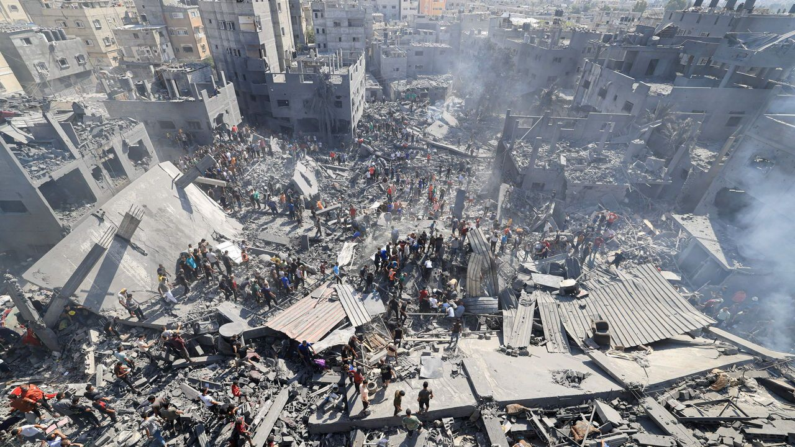
THE WAR in Gaza is exacting a brutal toll on civilians. The Hamas-run health ministry says that more than 8,000 people have died. The number of children among them, more than 3,000, exceeds the annual death toll for children in all wars in each of the preceding three years. estimates, from satellite imagery, that over a tenth of Gaza’s housing stock has been destroyed, leaving more than 280,000 people without homes to which they can return. In many ways that fits with the norm of urban warfare, which is unusually destructive. But Israel’s war in Gaza is also distinctive.
War in built-up areas is always bloody. America’s first assault on Fallujah in 2004 killed as many as 600 civilians, or 0.2% of the population, compared with 0.3% in today’s war in Gaza. A second assault later in the year killed around 800 more and left the majority of the city’s buildings damaged. A battle for Sadr City, a suburb of Baghdad, is thought to have killed nearly 1,000 people in March and April 2008, out of a population of around 2m, not dissimilar to that of Gaza.
The largest urban battle in recent years was the assault on the city of Mosul, which had been seized by the Islamic State (IS) group, by an American-led coalition including Iraqi and Kurdish ground forces. At least 9,000 civilians were killed in Mosul during 2016-17, according to Airwars, a non-profit organisation that tracks civilian harm. That amounts to 0.6% of the population at the time. Of the buildings that were damaged, more than 80% were residential.
These cases might suggest that the war in Gaza, though destructive, is not unusually so by historical standards—at least not yet. Yet there are also key differences. The first and biggest is the status of civilians. In Mosul, IS attempted to prevent civilians from fleeing, firing at them and mining corridors out of the city. Many left nonetheless. Between October 2016 and June 2017 nearly 900,000 departed—almost half of the pre-war population. Even Russia, during its siege of Mariupol in Ukraine between February and May 2022, negotiated humanitarian pauses in which some civilians were permitted to leave. Israel has thus far rejected calls, by the European Union and others, for such pauses.
Gaza’s geography is less permissive than any of these cases. Israel has told around 1.1m civilians to evacuate from the north of Gaza, but around a third of those have remained in place. Many residents are already refugees from other places and fear that if they leave they might never be allowed to return to their homes. Those who do want to escape cannot go south to Egypt, which does not want to take responsibility for refugees and has so far refused to open its border.
Israel is still striking parts of southern Gaza, albeit in more limited fashion than the north. “Locals can’t really get away, nor can fighting really occur in open areas away from urban centres,” says Amos Fox, an expert on urban warfare who has written extensively about Mosul. “The urban fight [in Gaza] is self-contained and likely far more costly than anything we’ve seen in the past few years.” Even those civilians who have moved south face a growing humanitarian crisis. Gaza’s health-care system has capacity for only 3,500 beds, according to Médecins Sans Frontières, a humanitarian group, far short of what is needed.
In Mosul, by contrast, the World Health Organisation was able to establish trauma stabilisation points to provide urgent medical attention within 10-15 minutes of the front line, with larger field hospitals another hour away. The Israel Defence Forces (IDF) have a small number of “humanitarian affairs officers” embedded in its fighting units whose role it is to try and address the needs of the local population, but these are far from sufficient for dealing with the needs and scale of misery resulting from a ground offensive. Israeli politicians have said they will not send aid for civilians until all hostages are released, though officials acknowledge that may change as the offensive develops.
A second difference is the degree to which civilian and military infrastructure is intermingled in Gaza. In Iraq, IS had held Mosul for little over two years when the battle to remove them began. Even in that short period, the group had established impressive multi-layered defences, drawing on Western military doctrine, says Rupert Jones, a retired British major-general who was deputy commander of the anti-IS coalition.
Hamas, in contrast, was founded in Gaza in 1987 and has much earlier roots there, dating back to the foundation of the welfare organisation Mujama al-Islamiya (‘Islamic Centre”) by Ahmed Yassin in 1973. For half a century it has been fully integrated into Gaza’s social fabric and has run the strip for 16 years. Its defences have been built around—and under—the territory’s civilian infrastructure. Part of the ease with which Hamas seized Gaza from Palestinian rivals in 2007 was down to the fact that its fighters were recruited from the streets.
A third difference is tactics. Israel’s armed forces say that they place considerable emphasis on civilian protection. Nonetheless, Israel’s bombardment of Gaza has been intense by historical standards. It dropped 6,000 bombs on the territory in the first six days of the war, a rate of ordnance far exceeding American and Western counter-terrorism campaigns. In Mosul, for instance, the American-led coalition dropped 7,000 over two months in the most intense period of bombing. On October 30th a former deputy commander of the IDF’s Gaza Division told the : “When our soldiers are manoeuvring we are doing this with massive artillery, with 50 aeroplanes overhead destroying anything that moves.”
Tactics are shaped by how an army views the stakes of a war, the nature of the enemy and that of the surrounding civilians. For Israel, the war in Gaza is “existential in a way that even Mosul or Marawi weren’t”, says Anthony King of Exeter University, referring to a battle between the Philippines army and IS in 2017. Israeli officials increasingly describe Hamas as akin to IS—an enemy with which compromise is no longer possible. Nor does the IDF have the same affinity with Palestinian civilians that Iraqi forces did with the compatriots they were liberating from IS rule.
In Mosul, Iraq’s political leadership, from the prime minister down, insisted that great emphasis be placed on civilian protection. Lieutenant General Basim al-Tai, a senior Iraqi officer, was in charge of the humanitarian operation. “He was carrying the weight of the Mosul population on his shoulders,” says General Jones. “He cared deeply about the civilians.” Caroline Baudot, an adviser in the civilian-protection unit in the International Committee of the Red Cross in Geneva, agrees: “The commander’s intent in Mosul was extremely clear.”
Even then, the experience of different parts of Mosul is instructive. The east of the city, viewed as the more intellectual and urbane part, suffered less damage. The old city in the west, where IS made its last stand, was viewed by Iraqi forces as more conservative and IS-friendly and emerged far worse. “The mindset in which you fight affects your planning, your conduct, and even the reconstruction,” says Ms Baudot. “If you operate on your own territory [as opposed to] in another territory you might not have the same care for civilians.”
The role of medical facilities is especially contentious. In the previous rounds of warfare, Palestinian hospitals and other civilian relief centres were marked on Israeli military maps as non-strike areas. Some were hit in past wars, but none intentionally, claims Israel. In this war, Israel has ordered the evacuation of northern Gaza, including hospitals—which it says are used as Hamas command posts. Under the laws of war, hospitals lose their special protection if they are used for military purposes. But, even then, armies can only attack them “after due warning” and “a reasonable time limit”.
Mosul, again, provides a point of comparison. IS used the city’s hospital as a stronghold. Commanders spent weeks deliberating whether it could be attacked, says General Jones, considering other options such as the use of snipers. “Slowly, over time, it became clear it was no longer a functional hospital.” Ultimately it was struck only with the approval of Iraq’s then prime minister. “I’ve never heard of any case where you have a few days to evacuate and dismantle an entire hospital,” says one veteran expert on wartime civilian harm, reflecting on the Gaza case. “It’s just not possible.”
A fourth and final difference is the nature of battlefield intelligence. At the outset of this war the IDF would have had considerable intelligence on Hamas’s infrastructure in Gaza, collected over years. But many of those targets would have been struck in the first week of the campaign. Air forces must then move to “dynamic” targeting—finding and striking targets that were not known at the start of the war and have to be developed in relatively short order. This is where most cases of civilian harm occur, says the expert.
In Mosul, local civilians, many of whom hated IS, provided a wealth of human intelligence, or HUMINT—information passed on by sources on the ground—to Iraqi forces, helping them to target IS fighters. In contrast, during the battle for Raqqa, a Syrian city held by IS, in 2017, commanders, with fewer infantry forces on the ground, were “starved of local information” and found themselves reliant on aerial surveillance, incapable of seeing inside buildings, according to a report by the RAND Corporation, a think-tank.
Israeli intelligence has already suffered one serious intelligence failure in Gaza, having missed sufficient signs of Hamas’s preparations for the attack of October 7th. It will have good electronic intelligence on the strip, aided by the phalanx of American aircraft patrolling in the eastern Mediterranean. But Hamas is likely to have the intelligence advantage on the ground, argues Mr Fox, with locals offering a steady flow of HUMINT to the group as the IDF advances. “This flips the HUMINT situation that we saw in Mosul on its head,” he says. “The IDF will have to methodically fight through better planned and prepared defences…than they otherwise would.” The result will be more civilians killed. The last three weeks have been hard on civilians in Gaza. The coming weeks could be even harder. ■
Is a two-state solution possible after the Gaza war?
Joe Biden is calling for a new peace process
In trying to plan for the future, world leaders are looking to the past. “When this crisis is over, there has to be a vision of what comes next, and in our view it has to be a two-state solution,” said Joe Biden, America’s president, in one of his many public statements about the nearly month-long war in Gaza. Rishi Sunak, the British prime minister, has made similar comments; so has Emmanuel Macron, the French president. An emergency meeting of the Arab League last month ended with a call for “serious negotiations” towards a two-state solution.
When Israel left Gaza in 2005, uprooting some 8,000 Jewish settlers from a territory it had controlled since 1967, no one knew quite what to make of the decision. Some hoped that Israel’s willingness to cede occupied territory would be a trend, a step towards a final settlement with the Palestinians. Others saw a canny ploy: relinquishing control of Gaza might help Israel entrench its control of the West Bank. The latter view turned out to be correct.
Similar confusion has emerged since October 7th, when Israel began planning a ground invasion of Gaza after Hamas, the militant Islamist group that controls the territory, massacred 1,400 Israelis. Palestinians fear the war will lead to a second (“catastrophe”), referring to the mass displacement that accompanied Israel’s birth in 1948. Far-right Israeli ministers hope it will offer a chance to reassert control over Gaza and rebuild the dismantled Jewish settlements. A few hopeful sorts, among them Mr Biden, hope it will provide a chance to revive the comatose Israeli-Palestinian peace process.
For now, that is a far-off dream: Israeli generals expect months of fighting. But both they and many foreign powers hope eventually to transfer control of Gaza to the Palestinian Authority (pa), which governs parts of the West Bank, probably with a peacekeeping force brought in to help the transition. And they doubt that Mahmoud Abbas, the Palestinian president, would return to Gaza without a guarantee of meaningful talks about Palestinian statehood.
Any plan for the “day after” in Gaza, in other words, needs to consider the possibility of a two-state solution. The broad outline has not changed much for decades. A Palestinian state would be formed in Gaza and the West Bank; Israel would swap chunks of its territory for portions of the West Bank where it has built large settlements. Jerusalem would be divided, with some sort of joint control over the old city. A small number of Palestinian refugees could return to Israel, while the rest would settle in either Palestine or their present homes elsewhere. Israel would expect a Palestinian state to be demilitarised.
After two decades of serious talks—from the hopeful era of the Oslo accords in the early 1990s, through a desultory attempt under Barack Obama—the peace process ground to a halt in 2014. There have been no serious negotiations since.
Negotiators cannot quite pick up where they left off. At the end of 2021 there were 465,400 Israeli settlers living in the West Bank, up from 116,300 when the Oslo accords were signed in 1993. They are a growing obstacle to peace. Most are concentrated in areas that would probably be ceded to Israel in an agreement, but their political clout (they would oppose surrendering even land that they do not live on) has increased along with their population.
Context is everything
The regional picture is also more complicated. In 2002 the Arab League endorsed a Saudi proposal that promised Israel normal relations with Arab countries after a two-state solution: by ending its conflict with the Palestinians, Israel could end all its regional conflicts. The Arab Peace Initiative was meant to be a powerful inducement. Israel might be more willing to take its boot off the Palestinians if it felt that other threats would then dissipate.
But the region has changed since 2002. Some militias, from Hizbullah in Lebanon to the Houthis in Yemen, are now more powerful than the states they call home. It would not suffice for Arab governments to end their conflicts with Israel: non-state actors would have to agree to do so as well.
Other things could be easier. A two-state solution would be costly. Even before the war, the Palestinians would have expected help to rehabilitate Gaza; the bill will be much higher now. At the failed Camp David summit in 2000 negotiators discussed a $30bn fund to compensate Palestinian refugees for lost property. Gulf states such as Saudi Arabia and the United Arab Emirates (uae), which have boosted ties with Israel in recent years, might be more willing to stump up the cash to show they have not abandoned the Palestinians.
The biggest problem, however, remains not the details of a solution but the political will to negotiate and implement one. There will be no serious peace process with Binyamin Netanyahu’s coalition of far-right and religious politicians. That coalition is unlikely to survive long after the Gaza war, and Mr Netanyahu’s opponents hope that the next government will be more amenable to talks with the Palestinians. “We learned a lesson that we need to separate from them in a good way,” says one centrist Israeli lawmaker. “It’s time to start that discussion.” But Israeli politicians from the centre and left have avoided the issue in public for more than a decade.
On the Palestinian side, Hamas has always been eager to play spoiler. Its first suicide-bombings in the 1990s helped to scuttle the Oslo process, and the carnage it wrought during the second (“uprising”) from 2000 to 2005 turned a generation of Israelis against the idea of compromise. Perhaps Hamas will fade away after the war in Gaza—but another group could take its place.
Ordinary people on both sides have lost faith in the two-state solution. A poll in September 2022 by the Israel Democracy Institute, a non-partisan think-tank, found that only 32% of Israeli Jews would support one, down from 47% five years earlier. Israeli Arabs, who make up one-fifth of the population, still endorsed the idea, although their support has also dropped, from 87% in 2017 to 71% in 2022. A plurality of Israeli Jews preferred the status quo.
Support has plummeted even further among Palestinians. A survey in June 2023 by the Palestinian Centre for Policy and Survey Research found that just 28% still support a two-state solution. Some 53% of them backed the idea ten years ago, though just 39% thought it feasible.
Optimists hope that these results are squishy: people are unlikely to support something they think impossible. A meaningful peace process could push the poll numbers back up. “I don’t think our people would reject a chance to end the occupation,” says one former Palestinian minister. But the events of recent weeks could just as well harden both sides against the idea of compromise.
As ever in Israel, some of the strongest supporters of ending the occupation are the men tasked with running it. In the wake of the Hamas attack, few Israelis are talking publicly about the two-state solution—or any other solution for the conflict. But defence officials are discussing it in closed rooms. That is partly because the desired end state of the war will shape the war itself and because the Netanyahu government is incapable of holding a serious debate on Israel’s long-term strategy.
Then there is the question of who will play mediator. Though Russia and China both aspire to a role in Middle East peacemaking, neither has much leverage or credibility to assume it. The European Union could position itself as an honest broker but it is not taken seriously.
That leaves America. Mr Biden spent the first three years of his presidency trying to ignore the conflict. He will have other things on his mind in 2024—and neither Israelis nor Palestinians are likely to embark on a peace process with a president who could soon be turfed out. If Mr Biden wins in 2024, he could try to lead efforts.
Donald Trump would be another story. In January 2020, after years of trailing a supposedly serious peace plan devised by Jared Kushner, his son-in-law, he finally unveiled it. The plan, almost laughably biased in favour of Israel, was dead on arrival. It would have given the Palestinians just 75% of the occupied West Bank, in three cantons linked by highways. Israel would have kept the Jordan valley, the breadbasket of the territory, and compensated the Palestinians for their loss by ceding a few patches of barren desert in the Negev. Palestine’s capital would have been limited to a few destitute suburbs of east Jerusalem. The Palestinians, unsurprisingly, refused even to discuss the proposal. ■
America suspends duty-free access to four African countries
Trade officials are meeting to discuss America’s approach to the continent
In the eyes of American officials, the African Growth and Opportunity Act (AGOA) is about “more than just trade”. The flagship policy grants duty-free access to America for almost 7,000 products from sub-Saharan Africa. To qualify, countries must respect human rights, uphold labour standards, promote a market-based economy and eliminate barriers to American investment, among other criteria.
But can a system of trade preferences also be a tool of foreign policy, without stifling trade’s potential for development? That question will rumble beneath the surface as American and African officials gather in Johannesburg between November 2nd and 4th for the annual AGOA forum. Out of 45 countries that could benefit from the scheme, ten are already ineligible. On October 30th President Joe Biden said four more would be kicked out next year, while Mauritania would be reinstated after making progress on workers’ rights.
None of the new suspensions are surprising. Niger and Gabon have recently had coups. The Central African Republic (CAR) has become a second home for trigger-happy Russian mercenaries. Uganda has a long record of human-rights violations and this year passed a law that imposes strict punishments for homosexuality, including the death penalty in some cases. Ugandan human-rights groups says that LGBT people have been tortured, arrested and sacked, among other abuses.
For many governments the consequences are more reputational than economic. America buys just 6% of sub-Saharan Africa’s goods exports; China and the EU each purchase three times as much. Even though the Ugandan government is irked by America’s warnings to firms about the risks of doing business in the country, it can probably live without AGOA, which applied to just $12m of its exports last year. Niger and the CAR export next to nothing under the scheme.
In a handful of countries AGOA really does make a difference, especially in clothing. There, a suspension can put a brake on economic development. Ethiopia has been ineligible for almost two years over abuses by soldiers and rebels during a civil war. But that was hardly the fault of the young women who stitch shirts in industrial zones, and who were laid off in their thousands when the loss of duty-free access made Ethiopian exports uncompetitive. Some investors have packed up and left. “Once bitten, twice shy: when will people come back to those zones?” asks another, who is weighing up how long to stay.
Even South Africa, the biggest exporter under AGOA, cannot take its trade access for granted. America is alarmed by its close military ties to Russia. Senior congressmen have questioned whether the country should remain eligible for AGOA and pushed for this year’s forum to be moved elsewhere. That did not happen, but only after a South African delegation flew to Washington to patch up things.
As AGOA is an act of Congress, not a two-way trade deal, countries have little recourse when they are booted off. Some Africans accuse America of bullying. “We want to be supporting governments and institutions that our values align with,” says Joy Basu, an American deputy assistant secretary of state for African affairs, adding that human rights and democratic principles in turn create “the right environment to deepen trade and investment”.
All that will be moot if Congress does not extend AGOA beyond its current expiry date of 2025. The uncertainty has caused 45% of American clothing firms to reduce their sourcing from Africa, according to an industry survey. Some senators have called for a swift renewal to “counter the malign influence of China, Russia, and other foreign actors”. In Washington, trade with Africa has long been viewed as both a boost to development and a spur to good governance. It is increasingly seen as a contest between great powers, too. ■
How the red beret became Africa’s most political hat
From Uganda to South Africa, it conjures the spirit of revolution
French revolutionaries wore the . Fans of Donald Trump don MAGA baseball caps. For young activists in Africa, the red beret is . Julius Malema, a South African firebrand, says the hat is “a revolutionary symbol of defiance and resistance”.
It is sported by supporters of Mr Malema and his Economic Freedom Fighters, a populist party. It is also worn by followers of Bobi Wine, a singer and opposition leader who is trying to unseat an autocratic president in Uganda. Activists from Ghana to Zimbabwe pull on berets of various hues.
The head that launched a thousand hats belonged to Thomas Sankara, a Marxist president of Burkina Faso who was assassinated in 1987. A man of personal modesty and striking looks, he refused to let his portrait be hung in public buildings. But in death his image is everywhere on the pan-African left. He first wore the red beret because he was a soldier (who staged a coup). He said he later took inspiration from Che Guevara, to whom he is often compared.
Ibrahim Traoré, an army captain who led a coup in Burkina Faso last year, mimics Sankara’s rhetoric and headgear. But it is generally civilian activists who wear berets to project radical vibes.
The beret can be worn in ironic rebuke of soldiers and the police. Omoyele Sowore, a Nigerian activist, has contrasted his orange beret with the black ones worn by police officers, who have a reputation for brutality. Yet the cap can also make one a target of the state. In Uganda, beret-topped followers of Mr Wine have been convicted by army courts for wearing military uniforms, an offence that can lead to life imprisonment.
“The beret evokes and carries a sense of liberation fighting,” says Oliver Barker-Vormawor, a convener of a Ghanaian youth movement that hopes to launch its own version. For many young Africans who look across the continent and see that promises of democracy, equality and dignity are unfulfilled, the beret is surely a symbol of a revolution that is not yet complete. For many others, though, it may simply be that it is, as Mr Wine has said, “more fashionable” than dowdy sun hats worn by Yoweri Museveni, his ageing adversary—and by their parents.■
Abiy Ahmed’s push for access to the sea has rattled his neighbours
Nerves are jangling once again in the Horn of Africa, just a year after the end of a brutal civil war in Ethiopia that led to the deaths of perhaps 385,000-600,000 people. Now foreign diplomats and analysts fear that in his bid to get a port on the Red Sea, Abiy Ahmed, Ethiopia’s prime minister, risks sparking another conflict, this time next to one of the world’s busiest shipping routes (see map).
image: The Economist
In a jingoistic documentary aired on state television on October 13th, Abiy argued that landlocked Ethiopia must acquire a port on the Red Sea to break its roughly 120m people out of a “geographic prison”. Turning to history, he quoted a 19th-century Ethiopian warrior who had proclaimed that the Red Sea was the country’s “natural boundary”.
Ethiopia, Abiy noted, had indeed been a sea power with a navy and two ports, Massawa and Assab. It lost these along with the rest of its coastline in 1993, when Eritrea seceded to form a new country. Now, Abiy suggested, the moment was nigh to right a historic wrong. “It’s not a matter of luxury,” he insisted, “but an existential one.” Foreign diplomats say this reflects what Abiy has been declaring in private for months.
Ethiopia’s neighbours are rattled, particularly because Abiy had not raised the issue with them before making his threats. “The whole country thinks the man is mad,” says an adviser to Somalia’s president. A fight over ports would further destabilise a region already in turmoil. Sudan, Ethiopia’s neighbour to the west, has been plunged into what the UN calls “one of the worst humanitarian crises in recent history”. Fighting between two warlords there has forced almost 7m people from their homes. And Ethiopia itself faces simmering rebellions in Oromia, its largest and most populous region, and Amhara.
Abiy says that Ethiopia’s demands can be met through peaceful negotiations with its neighbours. Better to discuss the matter now, he argues, than to risk an armed conflict in the future. But Abiy has reportedly said in private that he is ready to use force if talks fail. “If it is not achieved by other means, war is the way,” says an Ethiopian official. A few days after the broadcast Abiy flexed his muscles with a military parade in the capital, Addis Ababa, in which the army displayed its new weapons including a Russian-made electronic-warfare system. Troop movements have been detected along both sides of Ethiopia’s border with Eritrea in recent weeks. A well-connected source in Addis Ababa says that the armed forces are exercising in preparation for another conflict. On October 22nd the head of the air force warned his troops to ready themselves for war.
Ethiopia’s Red Sea conundrum dates back to at least the start of its bloody border war with Eritrea in 1998. Though a ceasefire was reached in 2000, the two countries remained at loggerheads. Ethiopia could not ship goods through Assab and Massawa. Now 90-95% of its external trade flows through Djibouti, to which it pays some $1.5bn a year in port fees.
In 2018, soon after Abiy came to power, he ended the nearly two decades-long stand-off with Eritrea by signing a peace deal with its dictator, Issaias Afwerki. Though the contents of the deal were never made public, it was generally understood that Ethiopia would regain tax-free access to Eritrea’s ports in exchange for returning disputed territories it had occupied since the end of the war. The following year Abiy was awarded the Nobel peace prize.
But plans for Ethiopia to use Eritrea’s ports never materialised. Instead, two years later, a power struggle between Abiy and Tigray’s ruling party, the Tigrayan People’s Liberation Front (TPLF), sparked civil war. Eritrean troops joined in on Abiy’s side to fight against the TPLF, which Issaias has long hated.
The two leaders have fallen out since then, possibly because Ethiopia signed a peace deal with the TPLF in late 2022. Each sees the other as a threat to their influence over the region. “Abiy and Issaias cannot co-exist in this region,” says an Ethiopian opposition leader. “War is inevitable.”
Increased tensions with Eritrea could exacerbate Ethiopia’s existing internal conflicts. Under the peace deal Abiy struck with the TPLF last year, it was supposed to disarm and demobilise its fighters while Eritrea was meant to withdraw its forces from Tigray. But Eritrea remains in control of at least 52 districts of northern Tigray, according to the region’s interim administrators. In recent weeks, Eritrean troops have expanded their presence along the border areas, reports a visiting foreign researcher. Tigrayan forces have handed over most of their heavy weaponry to the Ethiopian army. But they still have some 200,000 men and women under arms.
Another party in the multi-sided civil war in Tigray was Ethiopia’s Amhara regional government, which sent its own militias and troops to fight alongside Abiy’s federal forces. These troops were also supposed to have withdrawn from disputed territories inside Tigray that they occupied at the start of the war. But they have yet to do so. Instead, they have turned on Abiy’s government, accusing it of betraying Amhara’s interests. In August they fought federal forces for control of several towns.
Shifting alliances
With so much bad blood and so many armed groups jostling for influence within Ethiopia, Abiy’s threats are extremely reckless when it comes to his own country’s security. They are damaging to Ethiopia’s relations in the wider region. Djibouti, which now provides Ethiopia’s main access to the sea, has furiously responded that its “territorial integrity cannot be disputed”. Somalia, similarly, insisted its territorial integrity and sovereignty are “sacrosanct and not open for discussion”.
Some Ethiopian officials play down Abiy’s fighting talk. “It’s about diverting attention from domestic issues,” says an ally of the prime minister. Although the Eritrean port of Assab, which was once part of the former Ethiopian Empire, has particular symbolic value for Ethiopians, Abiy has also floated the possibility of negotiating for a strip of land around the ancient port of Zeila in the breakaway Somali region of Somaliland. In exchange, Ethiopia might offer to recognise Somaliland statehood. “Abiy has no interest in being part of another conflict for the moment,” says an analyst in Addis Ababa.
But the Ethiopian prime minister is notoriously unpredictable. “Nobody except himself can be certain if he is serious or not,” says a TPLF official. Little more than three years ago Abiy insisted he would not go to war in Tigray. Many diplomats and regional leaders took him at his word, which he soon broke. They would be wise not to make the same mistake again. ■
Ukraine’s commander-in-chief on the breakthrough he needs to beat Russia
General Valery Zaluzhny admits the war is at a stalemate
FIVE MONTHS into its counter-offensive, Ukraine has managed to advance by just 17 kilometres. Russia fought for ten months around Bakhmut in the east “to take a town six by six kilometres”. Sharing his first comprehensive assessment of the campaign with in an interview this week, Ukraine’s commander-in-chief, General Valery Zaluzhny, says the battlefield reminds him of the great conflict of a century ago. “Just like in the first world war we have reached the level of technology that puts us into a stalemate,” he says. The general concludes that it would take a massive technological leap to break the deadlock. “There will most likely be no deep and beautiful breakthrough.”
The course of the counter-offensive has undermined Western hopes that Ukraine could use it to demonstrate that the war is unwinnable, forcing Russia’s president, Vladimir Putin, to negotiate. It has also undercut General Zaluzhny’s assumption that he could stop Russia by bleeding its troops. “That was my mistake. Russia has lost at least 150,000 dead. In any other country such casualties would have stopped the war.” But not in Russia, where life is cheap and where Mr Putin’s reference points are the first and second world wars, in which Russia lost tens of millions.
An army of Ukraine’s standard ought to have been able to move at a speed of 30km a day as it breached Russian lines. “If you look at NATO’s text books and at the maths which we did, four months should have been enough time for us to have reached Crimea, to have fought in Crimea, to return from Crimea and to have gone back in and out again,” General Zaluzhny says sardonically. Instead he watched his troops get stuck in minefields on the approaches to Bakhmut in the east, his Western-supplied equipment getting pummelled by Russian artillery and drones. The same story unfolded on the offensive’s main thrust in the south, where inexperienced brigades immediately ran into trouble.
“First I thought there was something wrong with our commanders, so I changed some of them. Then I thought maybe our soldiers are not fit for purpose, so I moved soldiers in some brigades,” says General Zaluzhny. When those changes failed to make a difference, the general told his staff to dig out a book he once saw as a student. Its title was “Breaching Fortified Defence Lines”. It was published in 1941 by a Soviet major-general, P.S. Smirnov, who analysed the battles of the first world war. “And before I got even halfway through it, I realised that is exactly where we are because just like then, the level of our technological development today has put both us and our enemies in a stupor.”
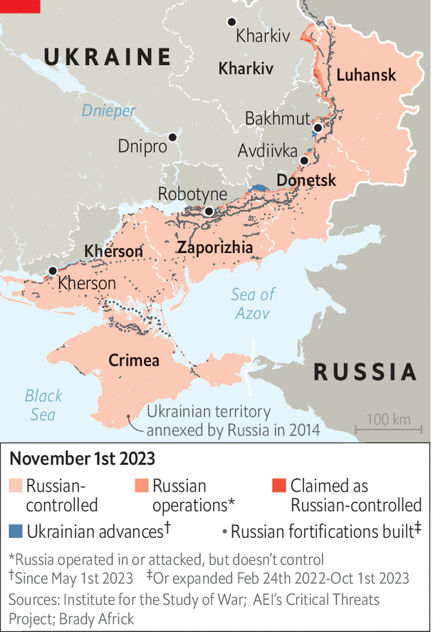image: The Economist
That thesis, he says, was borne out as he went to the front line in Avdiivka, also in the east, where Russia has recently advanced by a few hundred metres over several weeks by throwing in two of its armies. “On our monitor screens the day I was there we saw 140 Russian machines ablaze—destroyed within four hours of coming within firing range of our artillery.” Those fleeing were chased by “first-person-view” drones, remote-controlled and carrying explosive charges that their operators simply crash into the enemy. The same picture unfolds when Ukrainian troops try to advance. General Zaluzhny describes a battlefield in which modern sensors can identify any concentration of forces, and modern precision weapons can destroy it. “The simple fact is that we see everything the enemy is doing and they see everything we are doing. In order for us to break this deadlock we need something new, like the gunpowder which the Chinese invented and which we are still using to kill each other,” he says.
This time, however, the decisive factor will be not a single new invention, but will come from combining all the technical solutions that already exist, he says. In a By Invitation article written for by General Zaluzhny, as well as in an essay shared with the newspaper, he urges innovation in drones, electronic warfare, anti-artillery capabilities and demining equipment, as well as in the use of robotics.
Western allies have been overly cautious in supplying Ukraine with their latest technology and more powerful weapons. Joe Biden, America’s president, set objectives at the start of Russia’s invasion: to ensure that Ukraine was not defeated and that America was not dragged into confrontation with Russia. This means that arms supplied by the West have been sufficient in sustaining Ukraine in the war, but not enough to allow it to win. General Zaluzhny is not complaining: “They are not obliged to give us anything, and we are grateful for what we have got, but I am simply stating the facts.”
Yet by holding back the supply of long-range missile systems and tanks, the West allowed Russia to regroup and build up its defences in the aftermath of a sudden breakthrough in Kharkiv region in the north and in Kherson in the south late in 2022. “These systems were most relevant to us last year, but they only arrived this year,” he says. Similarly, F-16 jets, due next year, are now less helpful, suggests the general, in part because Russia has improved its air defences: an experimental version of the S-400 missile system can reach beyond the city of Dnipro, he warns.
The delay in arms deliveries, though frustrating, is not the main cause of Ukraine’s predicament, according to General Zaluzhny. “It is important to understand that this war cannot be won with the weapons of the past generation and outdated methods,” he insists. “They will inevitably lead to delay and, as a consequence, defeat.” It is, instead, technology that will be decisive, he argues. The general is enthused by recent conversations with Eric Schmidt, the former chief executive of Google, and stresses the decisive role of drones, and of electronic warfare which can prevent them from flying.
General Zaluzhny’s assessment is sobering: there is no sign that a technological breakthrough, whether in drones or in electronic warfare, is around the corner. And technology has its limits. Even in the first world war, the arrival of tanks in 1917 was not sufficient to break the deadlock on the battlefield. It took a suite of technologies, and more than a decade of tactical innovation, to produce the German blitzkrieg in May 1940. The implication is that Ukraine is stuck in a long war—one in which he acknowledges Russia has the advantage. Nevertheless, he insists that Ukraine has no choice but to keep the initiative by remaining on the offensive, even if it only moves by a few metres a day.
Crimea, the general believes, remains Mr Putin’s greatest vulnerability. His legitimacy rests on having brought it back to Russia in 2014. Over the past few months, Ukraine has taken the war into the peninsula, which remains critical to the logistics of the conflict. “It must know that it is part of Ukraine and that this war is happening there.” On October 30th Ukraine struck Crimea with American-supplied long-range ATACMS missiles for the first time.
General Zaluzhny is desperately trying to prevent the war from settling into the trenches. “The biggest risk of an attritional trench war is that it can drag on for years and wear down the Ukrainian state,” he says. In the first world war, politics interfered before technology could make a difference. Four empires collapsed and a revolution broke out in Russia.
Mr Putin is counting on a collapse in Ukrainian morale and Western support. There is no question in General Zaluzhny’s mind that a long war favours Russia, which has a population three times and an economy ten times the size of Ukraine. “Let’s be honest, it’s a feudal state where the cheapest resource is human life. And for us…the most expensive thing we have is our people,” he says. For now he has enough soldiers. But the longer the war goes on, the harder it will be to sustain. “We need to look for this solution, we need to find this gunpowder, quickly master it and use it for a speedy victory. Because sooner or later we are going to find that we simply don’t have enough people to fight.” ■
Read a more detailed new essay by General Zaluzhny on this topic.
Drone pilots have become valuable targets for both sides
THE DRONE might not spot you, but if it does, there is only one thing to do: hide well, and hide quickly. “Major”, a 25-year-old drone pilot operating near the hottest front lines of the south, in Zaporizhia province, says your chances are not good if an enemy pilot has you in his sights. The drone can come from behind your own positions, and masquerade as your own. The cameras are not great. But running at speeds of 150-160 kph, it will always outpace you. “If your cover is poor, then you are likely a dead man,” he says. Major has survived a pursuit four times, the last time in mid-October. Two of his closest comrades have been less fortunate. “God, not physics, decides if you survive,” he says.
The hunters are rapidly becoming the hunted. The controllers for most drones leave their own electronic trace, and if a pilot isn’t careful, the enemy can home in on them. “Hummer,” a commander in the 47th brigade, in the south, says the Russians fire everything they have once they identify a target. They can use their own strike drones, but they also apply high-precision artillery, mines, glide bombs and even, on occasion, saboteur groups. Major says he has lost 15% of his colleagues over the last few months. Hummer says his figures are lower, but refuses to elaborate.
Ukraine is the pioneer of the first-person-view (FPV) drones: craft that are flown, video-game-like, by goggle-wearing pilots with real-time manoeuvrability. The drones can cost just a few hundred dollars to build, but can deliver explosives capable of destroying or incapacitating equipment with a value of millions. In a day, a single operator can take out a dozen high-value assets, with corresponding human losses. That has made the drone pilot an even more prized kill than a sniper, one front-line commander suggests. “A lot of people want to become drone pilots because they think the work is further back and safer. The reality is that it’s extremely dangerous to be flying battlefield drones.”
The first FPV drones appeared in eastern Ukraine in the spring. They were a response to limited supplies of Western ammunition and the challenge of a much better-equipped adversary. Drones have since played a leading role in degrading Russian firepower as part of Ukraine’s southern counter-offensive in the Zaporizhia region. Although Ukraine initially enjoyed total dominance in this new class of drones, the Russians are catching up. The first Russian FPV drones appeared by July, and are now harassing Ukrainian units along the front. Ukraine is also hampered by the fact that its drones are still largely assembled and paid for by volunteers. Command structures are similarly anarchic, with freelance drone operators, brigade drones, secret services and others operating in the same areas. Meanwhile Russia has clear superiority when it comes to more expensive classes of drones, such as high-powered reconnaissance machines.
But the small FPV battlefield drones have challenged many accepted rules of war. “The future is already with us,” says “Genius”, a deputy battalion commander in the 47th brigade. In mid-October a Ukrainian pilot set a 22km record for the distance at which he incapacitated a Russian tank, 18km behind the front line. His commander says the Russians have imposed a 10km no-tank zone behind the front, dramatically decreasing the value of such weapons. Hummer says that his own forces have a 58% success rate in hitting targets. But the traffic is not one-way, and the Ukrainians have suffered many losses too. Russian FPV drones have destroyed several Bradley Fighting Vehicles (each worth some $2m) and even a Leopard tank.
The Russians are learning “from their mistakes…and from ours,” says Hummer. Earlier in the summer, some units began to equip higher-value assets like tanks and artillery with jamming boxes, which create high-energy fields around an object so that signals around it stop working. Attacking such equipment, without video feedback, is a difficult if not impossible task. Ukrainian units by and large don’t yet have the same technology. “FPV drones have completely changed the tactics of armoured infantry battle and we have to adapt better,” says Yuriy Momot, the deputy general director of a company developing technology-jamming countermeasures for Ukraine. “Before, only brigades thought about electronic warfare. Now company-level units need equipment that can detect and defend themselves against FPV drones.”
image: The Economist
Major, who pilots from positions starting just a few hundred yards from Robotyne, the centrepoint of the Ukrainian counter-offensive effort, says he operates without any electronic protection. “Intuition is the only thing that counts in this wild fight,” he insists. It is a fight that shows no sign of letting up—even as Ukraine’s progress south has slowed to a snail’s pace. “Left Handed”, an infantryman also fighting at the front, says Ukrainian losses have increased to alarming levels, in part due to the drones. The plains of Zaporizhia have turned their back on life, he says. “It’s hellish. Corpses, the smell of corpses, death, blood and fear. Not a whiff of life, just the stench of death.” Those in units such as his own have more chance of dying than surviving. “Seventy-thirty. Some don’t even see their first battle.” ■
The Middle East crisis is splitting the French opposition
Divisions over Israel and Hamas threaten the left-wing alliance
A decade ago France’s Socialist Party controlled the presidency, both houses of parliament, and a majority of regions and big cities. Today the once-mighty party has been reduced to an inaudible minority partner in a left-wing parliamentary alliance controlled by Jean-Luc Mélenchon, a former Trotskyist firebrand. When this four-party grouping, known as NUPES, was first launched last year ahead of legislative elections, Socialist moderates accepted its logic through gritted teeth. Now, as differences over the Israel-Gaza conflict surface, the alliance is tearing itself apart.
Mr Mélenchon’s failure to describe the murderous Hamas attacks on Israel on October 7th as acts of terrorism prompted the first fracture. He denounced the violence and called for a ceasefire, with no reference to terrorism or Hamas. As the ambiguity persisted, Olivier Faure, the Socialist party’s leader, ordered a “moratorium” on working with NUPES.
Since then, things have only worsened. On October 31st Mr Faure declared that there was no reason to return to the alliance, although he stopped short of quitting. He favoured a union of the left, he said, “but not at any price”. The “constant conflictualisation” of all subjects, Mr Faure argued, was “demonising” the left—precisely at a time when, on the far right, Marine Le Pen was busy “de-demonising” her own party. The left, in effect, was helping to make her look respectable.
The logic that turned the alliance into the biggest opposition grouping to Emmanuel Macron’s minority centrist government always had more to do with improvised electoral tactics than conviction or style. The constituent parties—Mr Mélenchon’s Unsubmissive France, the Communists, Greens and Socialists—disagree about NATO, Europe, nuclear power and more. NUPES delights in theatrical antics, designed to go viral on social media. One of Mr Mélenchon’s deputies brandished a vial of bedbugs in parliament. Another posed outside a government ministry with his foot atop an effigy of the minister’s head.
Moderate Socialists have watched in dismay as the left’s credibility has been shredded. Divisions over the crisis in the Middle East have brought those strains to breaking point. In a recent poll 63% of Socialist voters judged Hamas’s attacks to be terrorist acts; among supporters of Unsubmissive France, the figure was a mere 38%.
The troubling reality for the Socialists, however, is that they lack the weight to go it alone. Their candidate at each of the two most recent presidential elections secured a dismal single-digit score in first-round voting. Some Socialists who had misgivings about the NUPES adventure hope that the fracture might be a clarifying moment. It could be, says one ex-minister, a “chance for a realignment” of left-wing politics, which also draws disappointed left-wingers from Mr Macron’s centrist alliance. Bernard Cazeneuve, a Socialist ex-prime minister who quit the party when it joined NUPES, has called on the party to break definitively with the alliance.
Even if it does, the damage will be hard to repair. “Moderates in the party have been trapped”, says a Socialist figure. A new poll on first-round voting for the presidential election in 2027 gives the Socialist candidate just 4-6%. The candidate who comes top, with 31-33%: Ms Le Pen. ■
The incoming government is set to create the biggest army in Europe
Poland’s incoming coalition government will want to be seen by the rest of Europe as marking a fresh start. But in one respect it is unlikely to diverge far from the policies of its populist predecessor, PiS (the Law and Justice party). In the immediate aftermath of Russia’s invasion of its neighbour Ukraine in February last year, the then government embarked on a mission that the defence minister, Mariusz Blaszczak, described as providing Poland with “the most powerful land forces in Europe” by acquiring massive firepower and more than doubling the size of its armed forces.
There is a strong Polish consensus on the need for such a plan. According to opinion research by NATO, 80% of Poles favour maintaining or increasing defence spending. In March 2022 parliament voted almost unanimously for the Homeland Defence Act that raised the annual military budget to 3% of GDP (well above NATO’s call for 2%) and set up an extra “off budget” fund for military modernisation worth about $9.5bn this year and next.
Few demurred when the prime minister, Mateusz Morawiecki, declared in January that the course of the war in Ukraine meant that “we must arm ourselves even faster” and pushed the target up to 4% of GDP amid hints that it might even have to rise to 5% over the next decade.
Given that Poland’s security, unlike Ukraine’s, is undergirded by its NATO membership, some might question why Poland feels the need to be such an outlier in military spending. The answer is that history and geography make Poland hedge against the possibility of Ukraine being forced into an unsatisfactory ceasefire and Russia quickly regenerating its combat power. Besides, Poles fear the prospect of an isolationist Trump administration that might weaken NATO and balk at coming to Poland’s rescue, should the worst happen.
Poland’s first priority last year was to fill the gaps left by transferring 240 mainly Soviet-era tanks, infantry-fighting vehicles, fighter jets and artillery (including 54 new Polish Krab howitzers) to Ukraine. America agreed to deliver 116 M1 Abrams tanks from Pentagon stocks to add to the 250 ordered in 2021. But the list soon expanded: most of the contracts went not just to America but, more surprisingly, South Korea. This was partly to snub Europeans critical of the PiS government’s creeping authoritarianism.
Though not all the contracts have been finalised, the total planned spending may be between $30bn-40bn but could rise to $135bn over the next decade. Aside from an agreement in 2020 to buy 32 F-35 fighter jets for $4.6bn, other big-ticket items ordered from America include 486 HIMARS rocket-launchers for about $10bn, to add to the 20 it has already; 96 Apache attack-helicopters for up to $15bn (in addition to an order worth $1.7bn for 32 AW149 helicopters from Leonardo, an Italian firm); 48 of the latest Patriot air-defence launch stations with hundreds of interceptor missiles, and an air-and-missile-defence battle command system that ties it all together, at a cost of up to $15bn.
However, it is the size and scope of the string of deals with South Korea, worth together at least $14.5bn, that have startled observers. They include 1,000 K2 Black Panther tanks, 180 of them to be delivered rapidly from the Korean army’s own inventory and 820 to be made under licence in Poland from 2026. The rest of the package includes 672 Thunder howitzers, two-thirds of them locally produced, and 288 Chunmoo multiple-rocket launchers to be mounted on Polish infantry-fighting vehicles. Poland intends to field more tanks than are operated by the armies of Germany, France, Britain and Italy put together.
K-Pop’s ARMY marches on
To replace the MiG-29s and SU-22s sent to Ukraine, Poland is also buying from South Korea 48 Golden Eagle FA-50 fighter jets, in preference to adding to its fleet of more expensive American F-16s, for which it would have to wait years. Speed of delivery, quality, price and standardisation with NATO equipment were all reasons for doing business with the Koreans. A further strategic goal has been to turn this buying spree into an engine for building Poland’s own arms industry as an exporter to the rest of Europe—again, with Korean help.
What could possibly go wrong? While generally endorsing the defence build-up, the new government will want to review some contracts that may have been unduly rushed through. The affordability of the weapons binge also depends on optimistic assumptions about economic growth. Ben Barry, a land-warfare expert at the International Institute for Strategic Studies in London, queries whether Poland can handle the scale of infrastructure investments and institutional change needed to meet the “massive challenge” of training a much larger army to use the new kit.
Poland’s demography—its population is falling fast—could make it hard to meet the goal of a 300,000-strong armed forces, of whom 250,000 are to be regulars and 50,000 part-timers. A former head of the national defence ministry, Tomasz Siemoniak, recently poured cold water on the plan: a professional army of 150,000, he reckoned, was the manageable limit.
If as expected the new government seeks to repair relations with the EU, it will face pressure to comply with EU budget-deficit rules, which will bring greater scrutiny of Poland’s vaulting military ambition. Nonetheless, Poland seems bent on becoming NATO’s beefiest military land power in the years ahead. Fear of Russia is a great motivator. ■
Overcrowded and understaffed, they are at crisis point
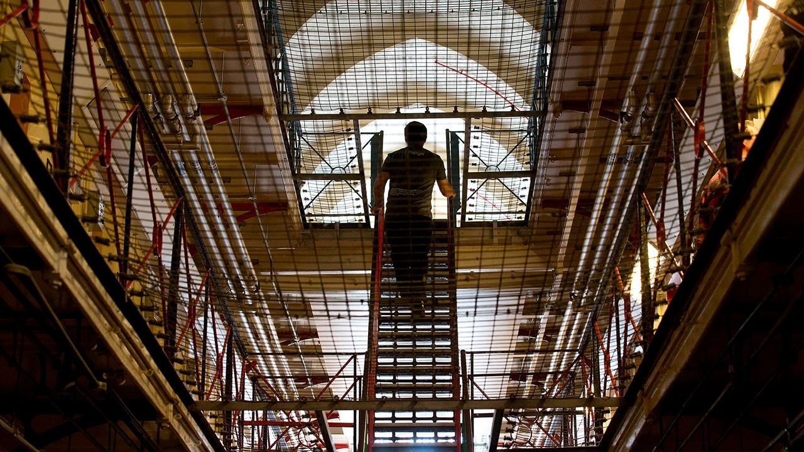
Judith Feline loved being a prison governor. The former boss of hmp Maidstone in Kent relished the challenge of helping prisoners “become better people”. Small, everyday interactions were a crucial part of that, she reckoned. But twin challenges—a rising prison population and a shortage of staff—meant this was becoming increasingly unachievable. “I didn’t want to stop loving my job,” she says. So last year she took early retirement.
Ms Feline’s experiences mirror those of innumerable prison workers. In October data from the Ministry of Justice (MoJ) revealed the prison population of England and Wales had hit an all-time high—only a few hundred short of official capacity. Most British prisons have long been overcrowded. A dramatic escape from Wandsworth prison in London this summer showed it was holding more than 1,600 men, though it was built for 1,000.
The situation has been dreadfully exacerbated by a shortage of prison guards. In 2013 the MoJ introduced a voluntary redundancy scheme for prison officers, the effects of which were so dire it tried the following year to rehire many of those it had paid off. In his most recent annual report Charlie Taylor, the chief inspector of prisons, said every inspected institution suffered from staff shortages.
For prisoners, this has been calamitous. It may seem a simple thing, says Ms Feline, to put another bunk in a cell that already sleeps one, or even two. (Most of Britain’s prisons were built in the 19th century when cells were intended for one.) But in jammed, understaffed jails, people are locked up for far longer: 22 hours of confinement is not uncommon.
“It’s awful to hear people describe spending endless hours doing nothing locked in their cells,” says Andrew Neilson, director of campaigns at the Howard League for Penal Reform, “and how self-harm, drug use and violence are all rising as the situation gets worse and worse.” In the year to September 2023 the number of suicides in prison rose by 24%. All this means prisons are failing in one of their chief purposes: to rehabilitate. Prisoners cannot “do the stuff they need to do to show they are worthy of an early release,” says Ms Feline. “It’s disheartening”.
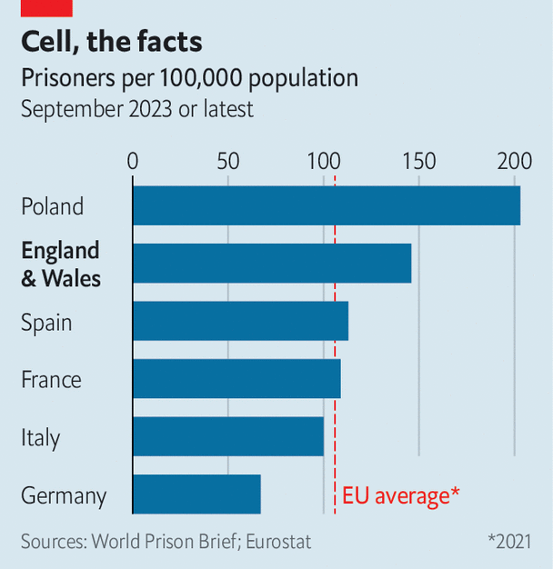image: The Economist
This perfect storm of failures has been gathering since the mid-1990s, when a more punitive sentencing policy was introduced. Since then most types of crime have seen “sentence inflation”, says Mr Neilson. The average sentence for murder was 20 years in 2020, up from 12.5 years in 2003. No government has tried to reverse this trend, which is why the prison population of England and Wales is now nearly double what it was three decades ago.
But the situation has now become so bad that the government cannot ignore it. In October Alex Chalk, the justice secretary, announced a series of emergency measures to tackle overcrowding. Some are better than others.
One, limiting short prison sentences (of less than 12 months) for low-level offenders, should have been introduced long ago. Research shows that for such petty criminals, many of whom are drug addicts, short prison sentences result in higher levels of reoffending than community sentences. Community options are cheaper, too. And because chaotic, low-level criminals (who are the main conduit for drugs into jails) make prisons more difficult to run, reducing their number may also make it easier to recruit prison staff.
Another initiative, releasing some prisoners who are serving sentences of less than four years 18 days early, is also sensible “and not alarming for the public,” observes Pia Sinha, chief executive of the Prison Reform Trust and a former prison governor. She notes, however, that it is unclear how much difference it would make given that it seems likely to be limited to certain prisons and prisoner-types.
These measures, like most that would reduce overcrowding, have a major flaw: they would put more pressure on the probation service, which manages community sentences and oversees some prisoners after they have been released. The probation service is itself in shockingly bad shape, and badly needs reforms of its own.
Another initiative announced by Mr Chalk, of sending prisoners overseas, has been tried elsewhere; both Belgium and Norway have in the past rented cells in the Netherlands. Mr Neilson says that ensuring domestic laws—on family visits, say, or prisoners’ rights to speak to a lawyer—are followed on foreign soil can be fraught. No more than a few hundred prisoners are likely to be dealt with this way, he reckons.
The government is also considering two further measures. The prison population has increased sharply since the pandemic because court backlogs have increased the numbers on remand (ie, suspected criminals who are locked up before they get to court). Their number has risen from 9,000 in 2019 to over 15,000 in 2023. The MoJ is considering giving them longer to plead guilty before they get to trial; since guilty pleas result in reduced sentences, that would help. It should also stop imprisoning so many offenders who infringe the terms of their licence on release. Most of those infractions, such as going abroad without permission, are not crimes in the normal sense of the word.
Yet none of these will be enough to ease the crisis in prisons. Partly because it is recruiting more police officers, the MoJ expects the prison population to reach 98,700 by 2026, up from around 88,000 now. Its prison-building programme is not keeping pace, so what is to be done?
For one thing, the MoJ must recruit more prison officers and find ways to retain them. “It’s not just about numbers,” says Ms Feline, the former governor. “There’s nothing like working on the landing. You can be trained, but the real training is experience.” She says her old prison in Kent has lost a lot of workers to the border force. The inspector of prisons says elsewhere in south-east England prison staff are leaving for the police. Better pay may help. But making prisons less crowded and dysfunctional would mean fewer staff left for less stressful jobs.
Perhaps most importantly, the MoJ must push for a reduction in the length of sentences. There is little point giving criminals more time if they spend it in their cells, becoming more violent, hopeless and, in many cases, mentally unwell. This, however, would be a major undertaking, not least because politics plays such an unhelpful part in criminal-justice policy. The Labour Party, assuming it forms Britain’s next government, will not want to be seen single-handedly to undo the tough-on-crime policies of the Tories. A cross-party parliamentary inquiry or even a royal commission might be one way to defuse this problem. “A crisis of this scale calls for systematic change,” says Ms Sinha. “It’s time to get experts round a table, look at what works, take politics out of it.” ■
The covid-19 inquiry exposes chaos in Boris Johnson’s government
Wrong people, wrong place, wrong time
IT WAS EASY to get distracted by the foul language. Did Dominic Cummings regret calling ministers “useless fuckpigs”, “morons” and “cunts” in WhatsApp messages, or describing the Cabinet Office as “terrifyingly shit”? Giving evidence to the covid-19 inquiry on October 31st, the one-time chief aide to Boris Johnson was characteristically caustic. If anything he had “understated” the scale of the dysfunction within the government as it grappled with covid.
Many countries have completed short, sharp exercises to draw lessons from the pandemic. Britain’s sprawling inquest will try to dissect the functioning of almost every part of the state. Witnesses will be questioned until at least 2026. Lawyers will pore over a vast trove of documents and try somehow to pin down a narrative.
In retrospect, Britain’s handling of the pandemic does not appear as bad as it once did. On a crude measure of excess deaths, the country ranks close to the middle of the pack, helped greatly by an impressively fast vaccine roll-out. But the inquiry will look at why Britain did so badly before the jabs arrived, probing government decisions over lockdowns, care homes and public-health guidance. This autumn’s hearings, focused on 10 Downing Street and the Cabinet Office, will be among the juiciest sessions. Hovering over them is one question: was the British state badly prepared or were individuals in power spectacularly unsuited to the job?
It is already known, for example, that the country’s national risk assessment failed to anticipate and plan for a novel pathogen, and that the state was slow to adapt the plans it did have for a flu pandemic. The Cabinet Office lacked basic data to track what was happening. In 2021 Mr Cummings told a parliamentary committee that departmental responsibilities for the crisis were horribly muddled. This week he reiterated that the core part of the state supposed to prepare for emergencies was glacially slow to respond.
Yet the big-name witnesses now appearing on the stand heighten the sense that the chaos was driven by individuals. The portrait of Mr Johnson as a prime minister who was unserious, indecisive and unable to grasp detail is hardly new. Memorable colour is being added, though. In one message Mr Johnson ponders whether older people should accept their fate (while demonstrating a sketchy grasp of the concepts of “median age” and “life expectancy”). As a former media adviser put it on the witness stand this week, covid did “not suit his skill set”. (Mr Johnson himself is expected to appear next month.)
As for Mr Cummings, he styles himself as a truth-telling maverick interested in systems. Yet he appears to have been incapable of running a functioning office. At one point he moans that meetings in Number 10 did not function on a basic level, when he had been the prime minister’s chief of staff for seven months. On November 1st Helen MacNamara, the then deputy cabinet secretary, described an environment that was toxic, macho and sexist.
All of which raises difficult questions for Simon Case, the cabinet secretary, who is yet to give evidence. It also bodes ill for Rishi Sunak, who will also appear before the inquiry next month. It is not just that the prime minister will face tough questions about his time as chancellor. It is that Mr Sunak has spent the past year trying to banish memories of his chaotic predecessors. Instead, the circus is back. ■
How the rapid growth of virtual wards is helping the NHS
One way to increase capacity in hospitals as winter approaches
There is never going to be one answer to the problems of the National Health Service (NHS). But by preventing admissions to hospital in the first place, or enabling an earlier discharge date, virtual hospital wards promise to offer a practical solution to shortages of real beds.
Virtual wards is a fancy term to describe low-risk patients who are monitored at home. Patients are given electronic doodads—blood-pressure cuffs, thermometers, oximeters—so that hospital staff can collect data about their health in real time. They are not new but their roll-out accelerated during the pandemic. Given the approach of both winter and an election, the pace is not letting up. The NHS in England reached 10,000 virtual beds this autumn—actual beds total about 140,000—and wants to have 24,000 of them by the end of next year. During one period this summer, 14 beds were being added daily, says Ben Horner of Boston Consulting Group.
Hertfordshire Community NHS Trust runs its virtual ward, with help from a tech firm called Doccla, from a nondescript office building on the edge of Stevenage. It looks like a call centre, except that nurses, doctors and pharmacists are the ones sitting in front of screens. These display lists of patients alongside their vital signs, such as pulse rate, oxygen saturation, blood pressure and temperature. The measurements taken depend on what kind of ward it is. Virtual wards today are often for geriatric or respiratory patients. But their use in cardiology and other areas is growing.
The benefits of virtual wards to a hospital system that is chronically short of real beds, especially during the winter, are obvious. Virtual beds can be created far more rapidly and cheaply. Patients seem to like them—most people, unsurprisingly, prefer to remain at home with their families, sleep undisturbed by nurses changing shifts and eat their own food. If patients don’t go to hospital they will not pick up an infection nor bring one in.
Operating 10,000 virtual beds should release about 7,500 actual beds, says Mr Horner (the disparity is because virtual patients are discharged a bit more slowly than those in hospital). That “takes our high occupancy rate in winter back down to the magic number of 91%”, a threshold that allows hospitals to run better. A range of other benefits has been proposed, such as faster recovery times.
Charles Tallack, director of data analytics at The Health Foundation, a think-tank that is analysing virtual wards, says the challenge in assessing them is their heterogeneity. Some are not tech-enabled at all; they just comprise patients at home who get a daily call asking about their activity and how they are feeling. But overall he says that virtual wards are “broadly promising”. Everyone seems to agree that the costs per day of virtual wards are lower; Mr Horner puts this at about a third of the cost of a real one. But how much of this gain is lost because of longer stays in virtual beds is not yet known.
The NHS has to get a more precise handle on these costs and benefits soon. The central pot of money that the government has set up to establish virtual wards is due to run out next year; trusts will then need to pay for them out of their own budgets, and will want to know what they are getting. Virtual wards are not without challenges—a lack of standardisation and guidance on how they should be set up and run is already a concern. There are no rules on what staffing ratios should look like, for example, though anecdotally a ratio of one nurse to every 30 patients seems to be common (an equivalent NHS ward is not meant to exceed a 1:8 ratio).
As technology progresses, some wonder if entire virtual hospitals for some patients might be possible. The government might fulfil its pledge to have 40 new hospitals by the end of the decade, after all. ■
The genius of Jilly Cooper, queen of British bonkbusters
The magic and the meaning of an 86-year-old social pornographer
Jilly Cooper novels are smutty, sexist and snobbish. They have titles such as “Mount!” and “Score!” and “The Man Who Made Husbands Jealous” and are not easily mistaken for the collected works of Jane Austen. Their cast lists feature characters such as Rupert Campbell-Black (“nirvana for most women”), Bethany (a “nymphomaniac”) and Cadbury (a Labrador). Her novels contain far too many appearances of the word “wet” and a frankly distressing number of “thrusts”. They are reprehensible in almost every way. They are, in other words, great fun. And they also say something about how Britain has changed during Ms Cooper’s long career.
The release of her latest novel, on November 9th, will be a peculiar publishing event. Everything from its nudging title (“Tackle!”) to its cover (more tackle—perhaps even tackle!—in white shorts) suggests that this is the sort of book that literary London will sneer at. In fact, literary London almost certainly will not. Ms Cooper has written 18 novels and sold over 11m copies in Britain alone. She has built up not so much customers as a congregation, less readers than religious believers. Her followers range from the prime minister, Rishi Sunak (“You need to have escapism”), to Cambridge dons (she is, one wrote, “precise, insightful, witty”).
Such public displays of affection surprise many who haven’t read Ms Cooper’s novels, and can particularly surprise the young. Ms Cooper’s style is not what you would call “woke”—and it is certainly not feminist. Feminists do appear in her pages: they can usually be spotted by their hairy legs and their fondness for the . In one Cooper novel, a boy asks his father who Florence Nightingale was. The father answers briskly: “A lesbian.” But then if Ms Cooper is out of touch that is hardly surprising. She is 86 and, like most who live so long, is anachronism incarnate—a living reminder that social and sexual changes which appear prehistoric to younger minds were in fact pretty recent.
It was only in 1975, the year in which her first novel, “Emily”, was published, that British women finally gained the right to open bank accounts without a male signatory. When “Riders”, the first of her novels set in the fictional county of “Rutshire”, was published ten years later, Debrett’s guide to “Etiquette and Modern Manners” could still be read earnestly rather than ironically. Its 1981 edition included advice on everything from how to address a marchioness (“Lady”) to how to deal with a butler (let him buttle). It instructed on how to handle asparagus (demurely), corn on the cob (so messy it is best saved for those whose love you are sure of) and even “Sexual Relationships” (see corn on the cob).
Openly admitting to reading “Jilly” also surprises some people because it seems akin to openly admitting to an enthusiasm for porn. It is not entirely unreasonable to assume that her novels are all about sex. Her books were among a group of novels that led to the introduction of the term “bonkbuster” into the Oxford English Dictionary in 2002. There are lashings of sex in them—at times there are even lashes. But the idea that they are pornographic is simply wrong, says Dr Ian Patterson, a fellow in English at Cambridge University, since in a Cooper novel sex is “just to do with fun” and not there “to titillate”.
In fact the real pornography here is social, not sexual. Her books are filled with sweeping lawns, puce-faced colonels and above all, handsome upper-middle-class Englishmen. Her hero, Rupert Campbell-Black—the hyphen gets heavy use in her stories—is said to be partly based on Andrew Parker Bowles, the current queen’s first husband. Her books linger lovingly over cads as they drink, smoke, swear and fondle fat Labradors and slender women in stone-flagged Cotswold kitchens.
It is not all light; there are villains in Rutshire. They are called “socialists” and can be recognised because they wear sandals, drink your champagne and complain about things. But true darkness rarely breaks into Ms Cooper’s writing. Evelyn Waugh once said of P.G. Wodehouse, a comic novelist, that his was a world in which there “has been no Fall”—no evil had broken into his Eden. And, despite the sex and the smut, so it is with Ms Cooper’s books. Her novels have “a relentless faith in human good nature, of a quite old-fashioned sort”, says Dr Patterson.
And when things do go wrong, her characters don’t talk about it. Because perhaps the most archaic thing of all about her novels is that the good never complain. One of the most striking entries in that updated Debrett’s edition appears in the section on “Royal, Diplomatic and Formal Occasions”. Beneath the advice on what to wear (hats) and how to behave (toadyingly) comes the heading “Choking” (on food, that is). “If it happens it happens,” Debrett’s advises, but you should “do it as discreetly as possible”. Ms Cooper comes from this school of stoicism. When she was involved in a terrible train crash in 1999, she simply said: “I know how lucky I am.” She has expressed bafflement at modern men who have beards and “cry all the time”.
There are plots in her books—stuff about football and horse-jumping. There are flaws, too. The recent novels in particular are more sprawling and less sharp. But that barely matters. Ms Cooper has created not merely stories but a world. Like Dickens’s London or the Brontës’ Yorkshire or Austen’s “—shire”, “Rutshire” is a place you know the moment you open the page, where people have clipped accents, rambling houses and, most important, fun. ■
Do Labour’s plans for Britain’s private schools make sense?
A proposal to charge VAT on fees arouses passion on all sides
For decades, on and off, the Labour Party has been promising to take a harder line on private, fee-paying schools. Before the general election in 2019 it pledged to explore ways of “integrating” them into the public sector. That idea has been dropped, along with one to strip private schools of their charitable status.
But the policies spelled out to enthusiastic applause at Labour’s conference in October—to make private-school fees subject to value-added tax (VAT), at the standard rate of 20%, and to remove a discount these schools receive on business rates—are still controversial. Given the party’s yawning lead in the polls, they are also likely to become reality. As claims and counterclaims fly, three questions dominate. What is the case for making the tax changes? Would they materially affect private schools? And would they improve education in Britain?
On the rationale for the policy, Sir Keir Starmer, Labour’s leader, has batted away claims that his party is contemptuous of aspirational parents; he has said he sees “no case” for trying to abolish fee-paying schools. Instead Labour’s argument is that it is unjust to continue exempting from tax a service bought mostly by the rich.
Research suggests that pupils in private schools learn more than they would if they studied in the state sector. Indeed, the fact that they get more and better qualifications is the biggest single reason they earn more than others in adulthood, according to academics at University College London (UCL) and Cambridge. (Chummy networks probably also help.) By the time they turn 25, privately educated Britons earn 17% more than workers from similar homes, according to research published in 2020. The pay premium widens by the age of 42, according to earlier research, to around 21% for women and 35% for men.
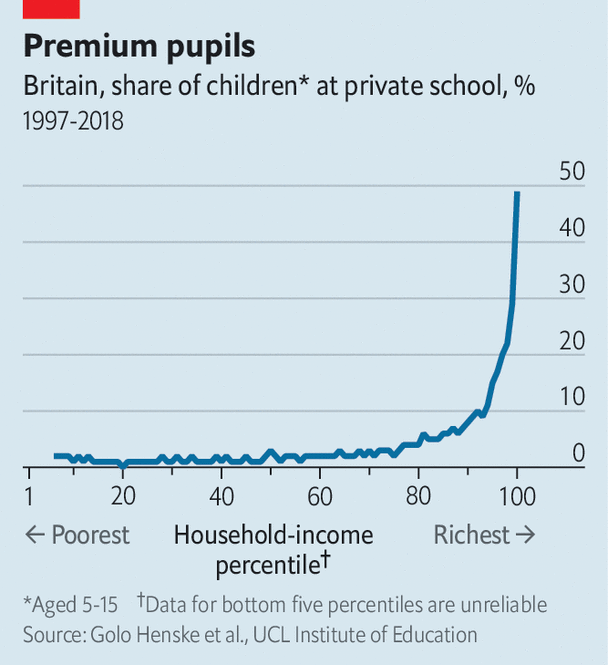image: The Economist
About three-quarters of children in Britain’s private schools come from the richest 30% of families, according to another study by academics at UCL. In contrast, only 2% of pupils come from the poorest third of families (see chart). Although private schools sometimes offer means-tested discounts aimed at drawing in poorer children, last year only about 7% of private-school pupils benefited. Of this small group, only about half received help amounting to 50% or more of total costs; only about one-quarter attended free.
Critics say that the “partnerships” private schools boast of forming with state schools are underwhelming, sometimes involving little more than matches between their sports teams. It is also occasionally argued that private schools deprive government ones of wealthy and engaged parents. And according to Francis Green at UCL, private schools educate less than 7% of pupils in England but employ around 14% of teachers.
Private schools push back. They object in particular to Labour’s claims that they are benefiting from “tax breaks”. Most education spending is exempted from consumption taxes, on the principle that encouraging adults to invest in youngsters’ brains will benefit the country in the long run. Parents do not pay VAT when they send toddlers to playgroups; undergraduates never pay VAT on their tuition fees (even though degrees can greatly boost their incomes). Julie Robinson of the Independent Schools Council (ISC), a group representing more than half of Britain’s 2,400 or so private schools, says it is rare for countries to tax school fees, and that if Britain were still in the EU it would not be allowed.
Fee or free
Private schools also complain that debates about the sector focus on a handful of very toffee-nosed institutions, such as Eton, and on a subset of parents seeking a shortcut to Oxbridge. In fact, plenty of parents have turned to private schools in the hope that extra help might turn a struggling schoolchild into an average one. And lots of private schools offer specific educational or religious environments that are not available in the state sector. Lizzy Nesbitt, the principal of Emmanuel Christian School, a private primary with 60 pupils in Oxford that charges annual fees of about £6,500 ($7,900), thinks her school’s families—about one-third of whom earn £40,000 or less—are probably not the kind that Labour is imagining it is targeting.
The second debate is what the effects of changing the tax rules would be. The ISC insists the impact of adding VAT to school fees would be huge. A report it commissioned in 2018, when such a policy was last widely discussed, claimed that private-school enrolment could fall by 17-25% in the five years following; some 90,000-135,000 additional pupils would enter state schools. Competition for spots in the best government schools would inflate house prices in their catchment areas; adding lots of spots to the state system would cost money. Labour says it will raise £1.7bn from its plan; the ISC’s study warned that the reform might raise little extra cash.
There is good reason to think the consequences would be much less dramatic. The Institute for Fiscal Studies (IFS), a think-tank, argues that there is only a very weak relationship between the cost of private schooling and the number of parents who pay for it. Average private-school fees, now £15,200 a year, have jumped by 20% in real terms since 2010 and by 55% since 2003, for reasons unrelated to the government. Over that time the share of all children who are educated privately has barely budged. Private-school parents are increasingly concentrated in very high-earning professions such as finance, goes one explanation; fees are also more likely to be paid in part or in full by rich grandparents.
The IFS’s best guess is that adding VAT to fees would cause private-school enrolment to fall by 3-7% (up to 40,000 kids) over several years. It thinks the policy would raise about £1.3bn-1.5bn for the government—equal to about 2% of the state-school budget. Unlike other analysts, it argues that parents who stop paying school fees will probably end up spending the money they save on other things, most of which would be taxed. So even if as many as 15% of pupils shifted, the change would still raise about £1bn.
Again, however, the impact is likely to be unevenly distributed. About half of private schools have fewer than 290 pupils; a quarter have fewer than 155. Even modest swings in enrolment could hit these fairly hard. The largest and most elite schools may be less affected. Businesses that charge VAT are exempt from paying the tax on their own “inputs”; the greatest beneficiaries would be schools that spend the most on things other than teachers’ pay, including luxuries such as golf courses.
The final question is what scale of improvements Labour can drive in the state sector with the extra tax receipts. So far it has promised to spend £350m hiring 6,500 more teachers, which would swell the state-school workforce by around 1%. It talks of spending a similar amount providing breakfast clubs in primary schools, which some evidence suggests can boost how much the littlest pupils learn.
A vaguer list of uncosted aspirations contains nothing anyone could find offensive but may not drive big improvements. Labour has rejected the government’s proposal that all pupils study maths until 18; its alternative idea, to keep improving maths teaching in the early primary years, seems both less ambitious and less responsive to what international data suggest are currently schools’ biggest flaws.
During the years of Conservative rule England’s schools have drifted up international league tables. That has probably had less to do with funding—which has too often been miserly—than with unpopular reforms to curriculums and tests. Pushing up standards in the state sector has made it gradually harder for private-school pupils to win places on the most prestigious degree courses. That, as well as efforts by elite universities to increase their state-school intake, may be a bigger threat to fee-paying schools than any change in tax rules.
Arguments, in other words, are being over-egged on all sides. Private schools will lose some pupils but fewer than they claim, especially among their core constituency of rich parents. Labour will draw a bit of cash from rich parents and please a lot of its voters, but the most-affected private schools and parents are likely to be smaller and less wealthy, respectively. The money raised will be useful at the margins but it will not fix the biggest issues in schools. The signals sent by this issue arouse passions; its actual importance is less great. ■
Labour’s screw-ups reveal how the party will govern Britain
Palestine, plagiarism and power
For a barrister, Sir Keir Starmer is surprisingly slow on his feet. The Labour leader had an illustrious career at the Bar but can struggle under light interrogation. When Israel launched its assault on Gaza in response to Hamas’s attack on October 7th, Sir Keir was asked a seemingly simple question during a radio interview: “A siege is appropriate? Cutting off power, cutting off water, Sir Keir?” Sir Keir replied: “I think Israel does have that right.”
The trap was sprung. Clips of the former human-rights lawyer appearing to endorse what many regard as war crimes went viral in Labourland, where Israel and Palestine is a poisonous issue. Panicky aides clarified that Sir Keir had said that Israel had to stay within international law, but the damage was done. Dozens of councillors resigned; mps were inundated with emails from pro-Palestinian members and voters. Threats of shadow-minister resignations unless Sir Keir endorsed a ceasefire followed; the Labour leader refused, largely to stop Britain becoming an outlier among its allies. He was stuck, kippered by a breakfast-show radio dj.
Sir Keir has triggered a month-long internal row. Slapdash behaviour from Rachel Reeves, the shadow chancellor, caused a more amusing episode. Ms Reeves had found time in her schedule to bash out a book titled “The Women Who Made Economics”. A reviewer at the noticed that phrases had been lifted from Wikipedia, the and even one of Ms Reeves’s own colleagues. In one case, four paragraphs from Wikipedia on the concept of rent-seeking were copied in almost word-for-word.
Both of these errors tell a story. One is serious, one is silly. Neither will determine whether Labour ends up in power. But each demonstrates how Labour will govern when it does.
A bitter row over Gaza is a reminder that with Labour in power, its neuroses will replace Conservatives ones. Britain has spent a decade wrestling with its position in Europe not because voters demanded it, but because Conservative mps were obsessed by it. With Labour in office, topics such as Israel and Palestine will become matters of internal political psychodrama rather than cold debate about policy. Backbench Tory bores waving copies of the Treaty of Rome will be replaced by Labour counterparts quoting the Balfour Declaration. It was, after all, a row over Israel that led Tony Blair to realise his time was almost up in 2006.
Party unity is a fragile thing. Sir Keir has tight control of the party, but it has been achieved with sticks rather than carrots. Dissent has not been tolerated; fringe elements within Labour have been cowed. People within the party have put up with this due to the prospect of power. Painful decisions have passed with little protest as a result. This summer, Labour confirmed that it will not remove a two-child limit on child benefit. Doing so would lift 250,000 children, which is the population of Stoke-on-Trent, out of poverty at a cost of about £1bn ($1.2bn; 0.05% of GDP), but fiscal credibility came first. Gaza has shown the limits to discipline.
Control was one part of the Labour leadership’s pitch. The other was competence. Ms Reeves’s literary endeavours have damaged that bit of the pitch. The shadow chancellor mentions her brief stint as a Bank of England economist in her 20s with the swagger of a former West Ham youth player turning up to play five-a-side football on a Monday night. Being caught lifting an explanation of rent-seeking from Wikipedia straight into a book is not career-ending. But it is mortifying.
Labour’s reputation for economic competence is relative: it relies on Tory ineptitude. Labour has failed to explain how it would differ in government from a Conservative one on fiscal matters. Ms Reeves has ruled out any tax rises beyond tinkering with things like vat on private school fees, while also keeping roughly to Tory spending plans. But Conservative polling is only four points above where it was at the nadir of the Liz Truss era, when her chancellor was appearing on television with a graphic of sterling plunging next to his head. Voters would choose anyone else; Labour are anyone else.
Sheer luck is the most overlooked part of Labour’s rise. Sir Keir’s tenure as leader could easily have ended in 2021 after a humiliating by-election defeat in north-east England and a narrow victory in another. The Conservatives rode to his rescue in 2022, switching prime ministers twice in two months and triggering a financial crisis. Even the row about Gaza could be worse. Few voters are paying attention to it. Helpful distractions have emerged, such as an inquiry into Boris Johnson’s inept handling of the pandemic (complete with foul-mouthed WhatsApp transcripts). Luck, however, cannot be relied on. It was bad luck that a reviewer spotted borrowing in Ms Reeves’s tome. It was bad practice that put it there.
Step by step
Labour have reached the edge of power by making few mistakes. This is fortunate, since error correction happens slowly. A quicker leader would not have made his error on Gaza in the first place; a more flexible one would have corrected it faster. The response to Ms Reeves’s borrowed paragraphs was a delicious cocktail of denial and confession, noted one wag. Labour’s slow-and-steady approach can be an asset in opposition but will be a liability in office.
Now that a Labour government is seen as an inevitability, Westminster journalists have begun inflating the feats and skills of Sir Keir and Ms Reeves to fit their poll lead. Boot-licking season has begun. Yet what is now considered masterful inactivity can as easily be labelled timidity. Under Sir Keir, Labour has let others make major policies on his behalf. When it comes to foreign policy, Labour has been happy to follow allies. When it comes to fiscal policy, the party has moved in lockstep with the Conservatives, creating a new economic consensus. In government, however, Labour will occasionally have to stride out alone. Sir Keir will have to learn to be quick on his feet. ■
Read more from Bagehot, our columnist on British politics:
The conflict is raging on streets and screens in the West
The imagery is enticing, the rhythm and rhyme are propulsive. “From the river to the sea,” runs the popular slogan, “Palestine will be free!” In recent days that couplet has resounded in squares from Toronto to Berlin. Wearing chequered scarves, Californian pupils declaimed it as they swept down school corridors. Activists projected the words onto a wall of a university in Washington, DC.
What do they mean? Superficially an idealistic vow of liberation, the decades-old expression also contains a threat: the river is the River Jordan, the sea is the Mediterranean and freedom, in this case, implies the destruction of the state of Israel. That is certainly the sense in which Hamas uses the phrase. The children chanting it at the base of Nelson’s column in London on October 21st, during a big pro-Palestinian march, may not have grasped the menace. But several marchers who were yelling the words, or bearing them on placards, seemed aware of it, clamming up defensively when asked to explain them.
“Anyone who’s paying attention knows exactly what that means,” saysJonathan Greenblatt of the Anti-Defamation League, an American anti-hate group which, like watchdogs in Britain and elsewhere, has documented a steep rise in antisemitic incidents since Hamas’s bloody raid on Israel on October 7th. (Islamophobic incidents have multiplied in several countries, too.) The ubiquity of this deceptively hardline mantra points up an important shift in Western attitudes to the Israeli-Palestinian conflict. Three related forces are driving it: technology, demography and ideology.
The Western left once sympathised with Zionism. That changed markedly after the six-day war of 1967 and the Israeli occupation of the West Bank and Gaza. Especially since the end of apartheid in South Africa, the Palestinian cause has been a talismanic issue for left-leaning Westerners. Why it acquired this status is a matter of debate. In some analyses, Israel serves as an avatar for American power, or for bygone colonial struggles. Jewish groups and others have wondered why the casualties in, say, Syria or Afghanistan—where the perpetrators as well as the victims are Muslim—stir less concern.
After a period in which the issue receded in prominence in Western diplomacy and headlines, Gaza’s plight is now inspiring protests and disputes as never before. A glut of open letters by artists and other luminaries have decried Israel’s bombardment and Western leaders’ acquiescence to it. (Counter-petitions mourn the atrocities of October 7th and affirm Israel’s right to self-defence.) Pro-Palestinian rallies have been held in many cities, including some where they were notionally banned.
The recriminations flow both ways. In Britain the BBC’s reluctance to refer to Hamas as “terrorists” led to an outcry and a partial climbdown. Dave Chappelle, an American comedian, reportedly had a spat with punters at a gig in Boston after he lamented the crisis in Gaza. Some American students have been hounded for their stridently anti-Israel views; talks by Palestinian authors have been cancelled. Palestine Legal, which supports pro-Palestinian activists in America, says they are “facing a wave of McCarthyite backlash targeting their livelihoods and careers”.
“Silence is violence”, runs another popular protest slogan, a position taken by some on all sides. A range of institutions, from universities to unions, have been berated for the wording of their public statements, or for failing to issue one. Calls for peace have been likened to appeasement. And supporters of both Israel and the Palestinians make analogies with Ukraine to show the supposed hypocrisy of the opposing camp. Backers of the Palestinians see Gaza as the victim (like Ukraine) of invasion by a bullying neighbour. Pro-Israelis point to Hamas’s incursion and liken its barbarity to Russian war crimes.
The polarised passions and viral slogans are in part a sharp manifestation of the echo-chamber effect of social media. Millions of people have watched footage of Hamas’s depredations in horror. Many others are transfixed instead by images of Gaza’s agony. In Germany, for instance, where a synagogue has been firebombed and Stars of David daubed on Jewish homes, some Islamists exist in “parallel societies”, relying on digital and overseas news, says Felix Klein, the federal commissioner for antisemitism. So, he adds, do many on the far right, which commits most of the country’s antisemitic crimes. (There, as in America, the two groups have made common cause online.)
Worse, the heart-rending clips and pictures sometimes come from the wrong country or the wrong war, or even from video games. Like the echo-chamber effect, online disinformation is a familiar problem that has seemed as acute as ever in the ongoing crisis.
The blast at the Ahli Arab hospital on October 17th was a supreme example of the reach and clout of falsehoods. Swiftly picked up by major news outfits, misleading reports contributed, in short order, to the cancelling of a summit between Arab leaders and President Joe Biden. Demand for disinformation, reckons Peter Pomerantsev of Johns Hopkins University in Baltimore, is an even bigger problem than supply. In wartime, “people are looking for reasons to confirm their biases,” he says glumly. “It isn’t about the facts.”
Screen habits encourage another striking feature of reactions to the war: the “gamification” of news, whereby irony and taboo-busting are prized, even amid the gravest calamities. The paragliders on which some Hamas murderers flew to Israel were, for a few onlookers, irresistibly meme-worthy. Black Lives Matter Chicago briefly posted an image of a paraglider with the words, “I stand with Palestine.” “From Chicago to Gaza,” runs another of its messages, “from the river to the sea.”
As for demography: immigration is one factor skewing the culture war in the West over the tragic one in the Middle East. Muslim populations in Western countries are both growing and changing in composition. In the past, notes Yunus Ulusoy of the Centre for Turkish Studies and Integration Research in Essen, the Muslim population in Germany was of predominantly Turkish origin. Now, he says, around 2.1m Muslims in the country have roots in Syria, Iraq and other places that are hostile to Israel. They brought their views of the conflict with them—shaped, says Mr Ulusoy, by a sense of solidarity with the, or global Muslim community.
Awareness of Nazism and the Holocaust, which for decades coloured German attitudes to Israel and antisemitism, is waning. Some Muslims, says Professor Julia Bernstein of the Frankfurt University of Applied Sciences, think this awful past “is not our history”, and that they are now the real victims of prejudice in Germany.
France, notes Dominique Moïsi, an eminent French commentator, is home to both the largest Muslim population in western Europe and the biggest Jewish one. It has a traumatic recent history of Islamist terrorism, and a more distant one of collaboration with the Nazis, both of which tend to bolster support for Israel. But it also harbours contrary strains of anti-Americanism and guilt over French colonialism in the Arab world. The result, says Mr Moïsi, is a “conflict of memories” that plays out in politics and on the streets.
In America, the most influential depiction of Israel in popular culture is probably “Exodus”. A novel by Leon Uris published in 1958, it dramatises the birth of the state and became a film starring Paul Newman. (“As a piece of propaganda,” said David Ben-Gurion, Israel’s first prime minister, “Exodus” was “the greatest thing ever written” about the country.) Overall, Americans remain much more supportive of Israel than are Europeans. Polls conducted since October 7th show a hardening of support for it among Democrats in particular.
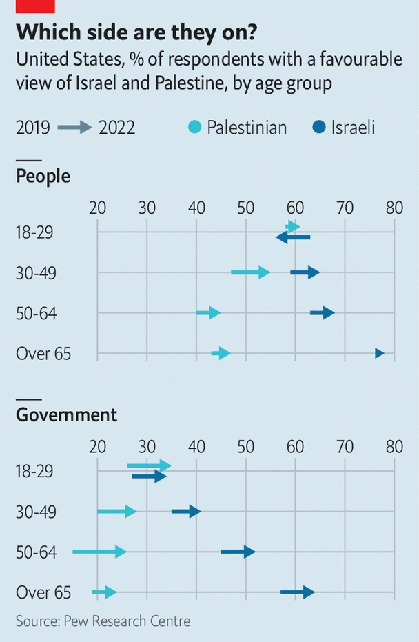image: The Economist
But there is an important demographic wrinkle. As Tim Malloy, a polling analyst at Quinnipiac University in Connecticut, says, younger Americans are much less inclined to back Israel than are their elders. They also think more favourably of the Palestinian people.According to surveys by Pew, this gap in sympathy between American generations is widening (see chart).
Many young voters do not have direct memories of the attacks of September 11th 2001, a calamity which shaped older Americans’ views of Islamist terrorists such as Hamas. Their diverging outlook also reflects the third force swaying Western attitudes: a binary ideology that emerged from American universities to win converts far and wide.
Beyond good and evil
Seeing the world in Manichean terms can be comforting. It turns confounding issues into simple clashes of good and evil, conferring a halo of virtue on those who pick the right side. As Yascha Mounk, author of “The Identity Trap”, argues, the emerging ideology offers just this form of comfort, sorting the world into opposing categories—coloniser and colonised, oppressors and oppressed—often along racial lines. In essence it transposes the terms of American debates over race onto other places and problems. “The American brand of anti-colonialism”, quips Mr Mounk, “is astonishingly colonialist.”
In a polarised age, lots of people infer their opinions from their political allegiance rather than the other way round. This, thinks Mr Mounk, is part of the new ideology’s appeal: it furnishes an all-purpose vocabulary to apply to any conflict. In this schema, the powerless can do no wrong, least of all to the powerful—and nobody can be both. Liberation movements of all kinds are linked, as communist insurgencies purported to be during the cold war. As flares in the colours of the Palestinian flag were set off at Piccadilly Circus, a protester in London holding a“Queers for Palestine” sign explained that “All the struggles are connected.”
This philosophy is tailor-made for the posturing and character-limits of social-media posts, perhaps one reason it is gaining adherents. But it prohibits the balance and nuanced judgments that intractable real-world hostilities demand. In particular, because the Palestinians are cast as powerless, and Israel is classed as powerful, it follows that Israelis cannot qualify as victims. Never mind the exile of Mizrahi Jews from Arab countries to Israel. The Holocaust is ancient history.
The schema shows up glaringly in references to Hamas’s crimes as a form of “resistance” or “decolonisation”, and in the statement by some Harvard students that held Israel “entirely responsible” for the slaughter of its own citizens. Many Jews, in Israel and the diaspora, perceive a wider disregard for Israel’s suffering—not just less sympathy than it received during, say, theEntebbe hostage crisis of 1976, but a void. If the issue is morally simple, meanwhile, for many Western activists the remedy is blunt and drastic: not the two-state solution of yore, but a Palestine that stretches “from the river to the sea”.
In the left-leaning political elite, the picture is starkly different. Both Mr Biden and Sir Keir Starmer, leader of Britain’s opposition Labour Party, have offered Israel staunch support. All the same, the escalation in some rank-and-file attitudes to the war may have a lasting fallout—both in the Middle East and in the West. Mr Biden, Sir Keir and other leaders have been lambasted by some in their parties for declining to call for a ceasefire. This disapproval—often motivated by natural compassion for Palestinian civilians rather than ideology—may cost them votes, Muslim and otherwise, in what may be tight elections next year. (Mr Biden may have weighed that risk against the potentially higher cost of supporting a ceasefire.)
That may not be the only form of political blowback. Plenty of liberal voters are dismayed by the responses of people with whom, in the past, they felt broadly aligned. Their coalition with more radical voters was already under pressure; for some liberals, the bedrock of common values that they thought underpinned it seems to have crumbled. If the debate over Gaza has been a symptom of polarisation in the West, it may yet prove to be a cause of realignment, too.
The consequences for Israel and the Middle East are unpredictable. At least in the short term, revulsion for Hamas seems to outweigh any qualms Americans might have had before the war over Israel’s rightward lurch under Binyamin Netanyahu. Most Americans, including most Democrats, tell pollsters that supporting Israel is in American interests. How far and how long that remains the case depends on a series of unknowns—starting with the conduct and outcome of the ground invasion of Gaza, and the new dispensation that may follow. Developments in domestic politics will matter, including the fervour of the Republican embrace of isolationism.
From an Israeli point of view, though, the long-term trajectory of opinion in America is worrying. And in Europe, as the second world war recedes from living memory and the clout of Muslim voters grows, support for Israel may continue to soften, especially on the left.
Even as the disaster in Israel and Gaza unfolds, one of its morals is already clear. Amid the unchecked flow of images and ideas, Western public opinion and geopolitical conflicts are entangled in new and explosive ways. Culture wars and real wars are no longer separate struggles. ■
Support for the Palestinians is far greater on social media than in properly weighted polls
If you scroll through a typical x (formerly Twitter) feed, it looks like sympathy for Israel following last month’s attacks has dried up. Supporters of the Palestinians have taken not just to the streets but also to their keyboards. “At first I was angry at Hamas and Palestine for the attacks” wrote one user, “but now after seeing more of what’s going on I cannot support such a regime in Israel. #FreePalestine”.
Do such views reflect overall opinion? At our request dmr, an ai-technology firm, collected 1m posts from Instagram, Twitter and YouTube from October 7th to 23rd. All contained hashtags from a list with similar numbers of pro-Israeli and pro-Palestinian terms in English, or replied to such posts. dmr then built a machine-learning model to classify posts as backing one side, the other or neither. It was trained on content in English, but also processed posts in any language that included English hashtags. dmr found a sharp shift against Israel over time. On October 7th the two sides had roughly equal shares of support. By October 19th pro-Palestinian posts were 3.9 times more common than pro-Israeli ones.
Israel has fared far worse online than in surveys of overall public opinion. A poll of Americans by YouGov found three backers of Israel for every Palestinian supporter on October 20th—a day with twice as many pro-Palestinian posts on American social media as pro-Israeli ones. In Britain, another YouGov survey found equal support for each side that day, when the Palestinians won the British social-media battle by a six-to-one margin.
One cause of this gap is age. Social-media users skew young, and such people are unusually pro-Palestinian in their views. Moreover, DMR’s sample did not include Facebook, which may be the most pro-Israel platform owing to its older users. In polls of people in Denmark, France, Spain and Sweden, Israel drew more total sympathy, but young participants’ opinions matched social-media ratios. Yet in America and Britain, social-media views are even more pro-Palestinian than those of young poll respondents. Israel’s backers show rather less zeal for online combat. ■
America’s economy is booming. Why aren’t its bosses happier?
Companies’ earnings calls have hardly been celebratory
Good news about America’s economy seems to keep rolling in. In the third quarter gdp expanded by a barnstorming 4.9% in annualised terms. Heading into earnings season, the month or so each quarter when most firms report their latest results, a stream of upbeat economic figures led stockmarket analysts to hold their profit expectations for the quarter steady, rather than trim them as they normally do. Many called the end of America’s corporate-earnings recession.
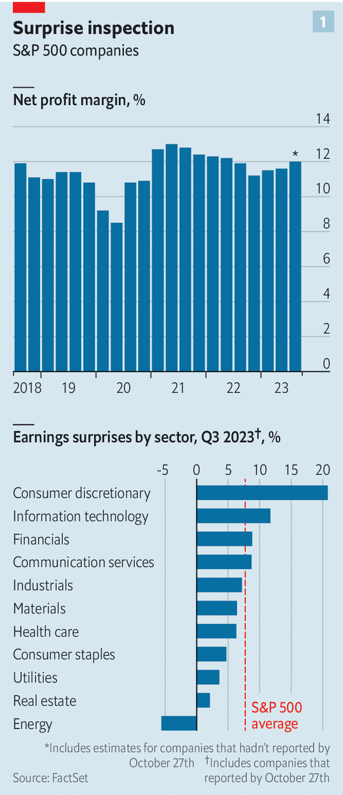image: The Economist
Such optimism now looks justified. Following a hat-trick of consecutive year-on-year quarterly profit declines, America Inc’s bottom line is growing again. According to FactSet, a data provider, of the roughly half of big companies in the S&P 500 index that have reported their latest results, 78% have beaten profit expectations (see chart 1).
Yet the mood during the quarterly carnival of conference calls has hardly been celebratory. Plenty of bosses failed to excite investors despite bringing them sound results. The reaction to the performance of big tech was particularly discordant. Alphabet, Google’s parent company, heartily beat profit forecasts but saw its share price sink by 10% after investors were underwhelmed by how its cloud-computing division was doing. Meta’s warning on macroeconomic uncertainty meant that the social-media empire’s biggest-ever quarterly revenue figure went unrewarded by markets. The lingering possibility of a recession and anaemic levels of corporate dealmaking overshadowed banks’ profits from lending at higher rates of interest.
Why the gloom? A boom in the third quarter notwithstanding, the future health of America’s consumers remains bosses’ principal worry. Small wonder. American businesses draw more than a third of their revenues directly from domestic consumers’ pockets, according to Morgan Stanley, a bank. Shoppers have seemed indefatigable lately; retail sales grew by 0.7% in September, compared with August. Coca-Cola and PepsiCo both raised their profit guidance for the rest of the year. But recently their growth has been the consequence of price rises rather than selling more fizzy drinks and snacks.
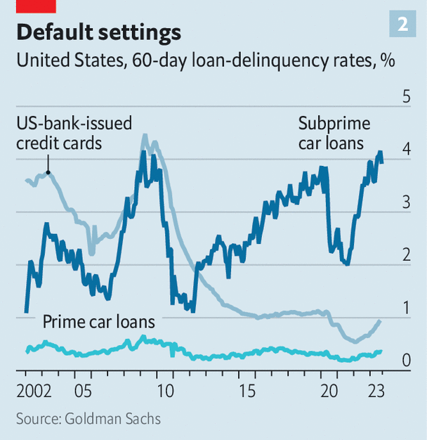image: The Economist
Other cracks are beginning to appear. According to Bank of America, credit- and debit-card data show a downturn in spending in October, compared with a year ago. Last month Americans with student loans had to resume debt payments after a three-year reprieve. In aggregate, spending is now growing faster than real disposable income, eating into savings. At the same time, credit-card and car-loan delinquencies have been ticking up (see chart 3). Consumers tell surveys that they are gloomier about their financial situation—and who can blame them?
That is worrying chief executives. UPS, a delivery firm, said Americans were spending less on goods and more on services, dampening its outlook for profits. Mattel, a toymaker which owns the Barbie brand, among other things, delivered a blockbuster quarter but its outlook for Christmas was a flop with investors. Bosses at Alphabet say that the technology titan’s data showed customers hunting harder for deals and offers of free shipping for goods. On Tesla’s investor call Elon Musk bemoaned the effect of rising interest rates on consumers’ ability to afford the company’s electric cars. (Though, as Mr Musk also admitted, some of the carmaker’s problems were home-made: “We dug our own grave with the Cybertruck.”) Since the call, Tesla’s share price has fallen by 15%, wiping more than $100bn off its market value.
Companies are also closely watching their costs, especially for labour. Margins were boosted by cooling wage inflation across the economy and the summer of strikes is at last winding down. In September Hollywood writers agreed to up pens. In the past week the United Auto Workers (UAW) union struck deals with Ford, General Motors (GM) and Stellantis (whose biggest shareholder also part-owns ’s parent company); its members are returning to the factory floor.
But workers, especially in Detroit, have extracted higher wages and other concessions. And the weeks-long stoppages have already cost the carmakers dearly. Stellantis, whose marques include Chrysler and Jeep, said that they shaved $3bn from its sales. GM, which held out the longest of Detroit’s “big three”, withdrew its profit guidance for the year. So did Illinois Tool Works, which makes car parts. Even Bosses at Delta Air Lines complained that fewer passengers were landing in Motor City, possibly as a result of the labour unrest.
Happenings farther afield were also weighing on bosses’ minds. A refrain in many earnings calls was sadness at the loss of life in Israel and Gaza. Yet for now at least, conflict in the Middle East is not having large financial effects on American companies. A few firms signalled caution—Snap, a social-media firm, said some advertisers in the region paused spending as a result of the hostilities. But corporate America as a whole earns a vanishingly small part of its profits in the volatile region. American bosses who examine the direct risks posed to their business by the war in Gaza are likely to conclude that they are much smaller than the costs of, say, unwinding operations in Russia, let alone the existential worries about America’s relationship with China.
Bosses were silent on a bigger long-term threat to earnings: higher interest rates. During the past year the fortunes of big business have diverged from those of smaller firms, especially ones owned by private-equity funds, as they have been largely immune to the soaring cost of capital. Bank of America reckons that more than three-quarters of debt borrowed by S&P 500 firms is both long-term and fixed-rate, compared with less than half in 2007, when ten-year Treasury bond yields last exceeded 5%. Eventually, however, big businesses’ debt piles will need to be refinanced at a higher rate of interest, which will squeeze profits. The earnings recession might have ended in the third quarter. But plenty of threats still lie ahead. ■
OMV, Austria’s energy major, reimagines its future
Less carbon, more plastic
WHEN HE became chief executive of OMV in September 2021, Alfred Stern had one word for Austria’s oil-and-gas major: plastic. Having previously run the concern’s chemicals division, Borealis, he saw that business, not fossil fuels, as OMV’s future. Global demand for carbon-emitting products will sooner or later peak. That for virgin plastics used in packaging is forecast to increase on average by 4.7% a year until 2030, faster than world GDP; for recycled plastics it will expand by as much as 12% annually.
Mr Stern must have seemed prescient to his underlings in February 2022, when Russia, from which OMV was buying most of its natural gas, invaded Ukraine. A month later he publicly unveiled his new strategy. From now on the company would focus on producing and selling sustainable fuels, chemicals and materials—with an emphasis on “sustainable”. It would gradually wind down its production of oil and gas. OMV’s boss wants the oil-and-gas division to account for 30% of the group’ operating profit by the end of the decade, compared with an average of 44% between 2019 and 2021. Chemicals would make up half, up from 29%.
Such a transformation would be ambitious at the best of times. With global markets for energy, chemicals and materials all being buffeted by geopolitical and economic forces, it seems almost brazen—especially when other oil-and-gas companies are revising their green plans and doubling down on crude.
On October 31st OMV said that sales slumped by nearly half in the third quarter, compared with a year earlier, to €9.5bn ($10bn). Net profit plummeted by almost two-thirds, to €431m. Both the energy business (the exploration and production of oil and gas) and the fuel and feedstock unit (which supplies the chemicals industry) did worse than forecast. Borealis beat expectations, but still reported a loss of €11m.
Investors nevertheless seem happy with the thrust of Mr Stern’s plan. Some of the earnings slide was merely a return to earth from a period of sky-high prices for oil and gas that had boosted profits a year ago. Many applauded his announcement in the earnings call of a joint venture with Interzero, a German firm, to build Europe’s largest sorting plant for chemical recycling in southern Germany. Oleg Galbur of Raiffeisen International, an Austrian bank, thinks that the chemicals unit in particular has plenty of room for improvement once the cyclical industry recovers from the current economic slowdown in large markets such as China and parts of Europe.
The division’s prospects could brighten further if talks between OMV and Abu Dhabi National Oil Company (ADNOC) aimed at uniting Borealis and Borouge, the Emirati giant’s chemicals unit, succeed. That would create one of the world’s biggest makers of polyolefin plastics, which would be listed and owned in equal parts by OMV and Adnoc. (Borealis already owns 36% of Borouge and ADNOC 25% of Borealis.)
Mr Stern’s biggest challenge will continue to be dealing with the fallout of his company’s close business ties with Russia. In 2018 his predecessor, Rainer Seele, signed a deal with Gazprom for gas deliveries until 2040. Mr Stern has made clear he is not planning to renege on that contract. But he had to write off €2.5bn in Russian assets, including a €1bn investment in Nord Stream 2, the defunct gas pipeline from Russia to Germany.
During the latest earnings call Mr Stern was at pains to reassure investors that OMV could honour its gas-delivery contracts even if Ukraine’s government lived up to its intention of stopping the transit of Russian gas through pipelines on its territory by the end of 2024. He has made a big effort to find alternative gas suppliers, such as Norway. OMV has also signed a deal with BP, a British energy giant, to get liquefied natural gas via a terminal in Rotterdam. In July Mr Stern signed off on Neptun Deep, a joint project with Romgaz, a Romanian gas firm, to explore for gas in the Black Sea. Plastic may be the future. But OMV’s present will involve energy for a while yet. ■
A process that rewards exaggeration would benefit from greater realism
Hiring processes can be thought of as a battle between candour and dishonesty. You might imagine this is a simple fight between truth-seeking firms and self-promoting candidates, and to a certain extent it is. But companies themselves are prone to bend reality out of shape in ways that are self-defeating.
Start with the obvious culprits: job applicants. The point of a CV or a LinkedIn profile is to massage reality into the most appealing shape possible. Everyone beyond a certain level of experience is a transformational leader personally responsible for generating millions in revenue; the world economy would be about 15 times bigger than it actually is if all such claims were true. The average Briton spends four and a half hours a day watching TV and online videos. But the average job candidate uses their spare time only for worthy purposes, like volunteering in soup kitchens or teaching orphans to code.
The cover letter is so open in its insincerity (“When I saw the advertisement for this job, I almost fainted with excitement”) that people are starting not to bother with it. At the interview stage one task facing the firm’s recruiters is to winkle out the truth of what a person actually contributed to a project. Those hoary questions about a candidate’s weaknesses and failures are there for a reason; no one will bring them up unprompted. Cognitive and behavioural tests are useful in part because they are harder for applicants to game.
But a tendency to stretch the truth infects companies as well as applicants. The typical firm will write a job description that invariably describes the work environment as fast-paced and innovative, and then lays out a set of improbable requirements for the “ideal candidate”, someone who almost by definition does not exist. Sometimes—as when ads demand more years of experience in a programming language than that language has existed for—these requirements include an ability to go back and alter the course of history.
Industrialised hiring processes can often reward mindless exaggeration. Services that scan your résumé when you are making an application mark you down if your CV does not match the keywords that appear in the original job advertisement. The message is clear: to get through to the next stage, you have to contort yourself to meet corporate expectations.
Substance can matter less to recruiters than form. One software engineer says she got a 90%-plus response rate with a spoof CV showing apparent spells at Microsoft and Instagram but also boasting, among other things, that she had increased team-bonding by organising the company potato-sack race and “spread Herpes STD to 60% of intern team”. References are so prone to inaccuracy that many firms have a policy of not giving them, fearing legal action from defamed candidates or deceived employers.
Too few firms offer an accurate account of what a position actually involves. Tracey Franklin, the chief HR officer for Moderna, a fast-growing drugmaker—and an interviewee in this week’s episode of Boss Class, our new podcast—is a fan of “realistic job previews” (RJPs). These are meant to give prospective recruits a genuine sense of the negatives and positives of the job, as well as a clear idea of the company’s corporate culture. One effective tactic is to lay out, in text or video, what a typical day in the role would look like.
Such honesty can be its own reward. Research has long suggested that RJPs lead to lower turnover and higher employee satisfaction. A paper in 2011 by David Earnest of Towson University and his co-authors concluded that favourable perceptions of the organisation’s honesty are the best explanation for why.
The incentives on both sides of the hiring process lean naturally towards glossing reality. If candidates were to give genuinely truthful answers (“I have a habit of making basic but calamitous errors”), many would rule themselves out of jobs. And if firms were to give a warts-and-all description of themselves, many would end up deterring good applicants. But a process designed to uncover the truth about job applicants would run a lot more smoothly if firms were also honest about themselves. ■
Read more from Bartleby, our columnist on management and work:
Can America’s weapons-makers adapt to 21st-century warfare?
Arming Uncle Sam isn’t what it used to be
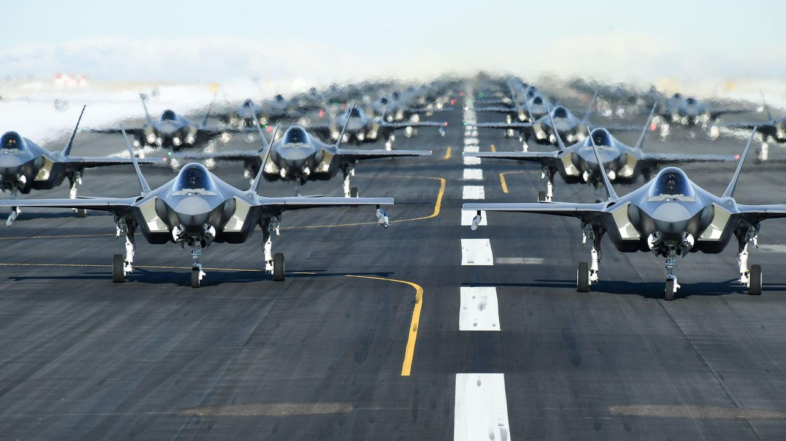
ARMING UNCLE SAM is a great business. America’s latest defence budget earmarks $170bn for procurement and $145bn for research and development (R&D), most of which ends up with the handful of “prime” contractors, which deal directly with the Department of Defence (DoD). So will some of the $44bn in American military aid to Ukraine and a chunk of the extra defence spending by America’s European allies, which account for 5-10% of the primes’ sales. Although those sums do not increase at the same rate as, say, corporate IT expenditure, leaving less room for spectacular gains, arms manufacturers are also shielded from eye-watering losses by huge, decades-long contracts.
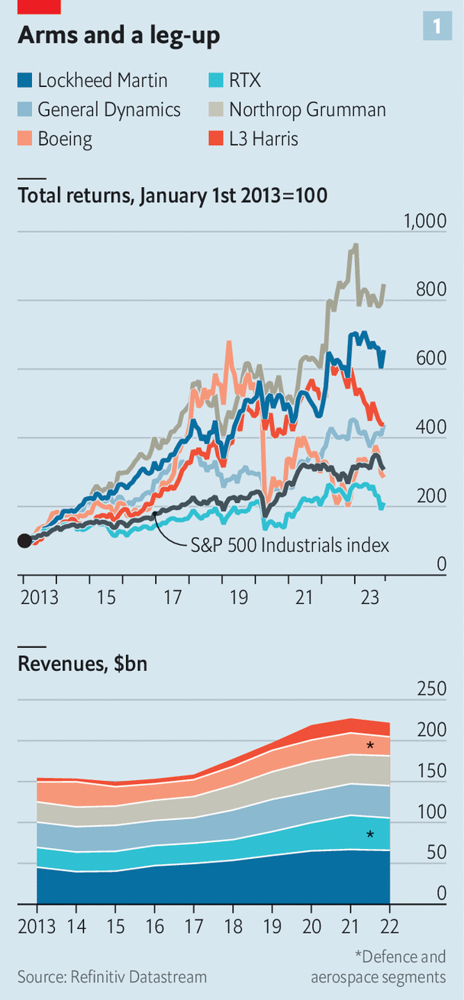image: The Economist
Thanks to a big shake-up at the end of the cold war, the industry is also highly concentrated. At a meeting in 1993, dubbed the “last supper”, William Perry, then President Bill Clinton’s deputy defence secretary, told industry bosses that excess capacity was no longer appropriate and that consolidation was in order. As a result, the ranks of the primes have thinned from more than 50 in 1950s America to six. The number of suppliers of satellites has declined from eight to four, of fixed-wing aircraft from eight to three and of tactical missiles from 13 to three.
Guaranteed custom and weak competition have helped American armsmakers’ shares comfortably outperform the broader stockmarket over the past 50 years. A paper published by the DoD in April found that between 2000 and 2019 defence contractors did better than civilian ones in terms of shareholder returns, return on assets and return on equity, among other financial measures. An increasingly unstable world means more money going to the armed forces—and to their suppliers. Total shareholder returns, including dividends, at primes such as General Dynamics, Lockheed Martin and Northrop Grumman rose when Russia invaded Ukraine in February 2022 and when Hamas attacked Israel on October 7th (see chart 1).
This cosy oligopoly is now being challenged on two fronts. One is technological. As the tank battles on Ukrainian plains and in Gazan streets show, “metal on the ground” remains important. So do missiles, artillery shells and fighter jets. But both conflicts also illustrate that modern combat relies increasingly on smaller and simpler tactical kit, as well as communications, sensors, software and data. The second challenge is the Pentagon’s efforts to extract greater value for money from the military-industrial complex.
Both developments undercut the primes’ big competitive advantages: their ability to build bulky kit and to navigate the mind-boggling procurement process. Cost-effective innovations, such as the Pentagon’s recently announced project “Replicator”, which aims to get swarms of small drones in the air, ASAP, require agile engineering for which the defence giants “are not innately organised”, as Kearney, a consultancy, delicately puts it. If they are to thrive in the new era, they will have to rediscover some of the innovative ways that helped them shape Silicon Valley in the decades after the second world war. So far, though, they are finding this difficult.
It is easy to see why the primes (and their investors) like the current setup. The DoD reimburses the primes’ R&D expenses, and adds 10-15% on top of that. This “cost plus” approach spares the companies from funnelling lots of their own capital into risky projects, which offers security but reduces the incentive to deliver things on time and on budget. The project to build the F-35 fighter jet, which has accounted for more than a quarter of Lockheed’s revenues in the past three years, started life in the 1990s. It is running around a decade late and will cost American taxpayers up to $2trn over the lifetime of the aircraft.
Once in production, newly developed large kit is sold at a fixed price, often for decades. The B-21 stealth bomber currently in development by Northrop Grumman will cost the Pentagon more than $200bn for 100 planes delivered over 30 years. The Columbia Class nuclear-submarine programme made by a subsidiary of General Dynamics will sail from the early 2030s until at least 2085.
Past their prime
The Pentagon’s patience with this time-honoured business model is wearing thin. Last year’s national-defence strategy summed it up succinctly: “too slow and too focused on acquiring systems not designed to address the most critical challenges we now face”. Instead, it wants to “reward rapid experimentation, acquisition and fielding”. This is forcing the primes to think about how they could build fresh functionality atop their existing platforms, by adding new software, modules, payloads and the like, and to create production processes which can be modified to accommodate innovations.
As Lockheed Martin’s chief executive, Jim Taiclet, recently acknowledged, soldiers expect seamless integration of sensors, weapons and systems for battle management such as joint all-domain command and control (JADC2), a new concept for sharing data between platforms, services and theatres. Contracting, building and continuously updating such systems will be a struggle for firms that have hitherto produced huge bits of hardware slowly and which, in the words of Steve Grundman of the Atlantic Council, a think-tank, are not “digital natives”.
The primes face another problem. The technology the Pentagon has in mind is not inherently military, observes Mikhail Grinberg of Renaissance Strategic Advisors, a consultancy. Most of the defence giants do have civilian divisions—large ones in the case of Boeing, General Dynamics and Raytheon. But the Pentagon’s growing appetite for dual-use technologies means more competition from civilian industry, which is constantly devising new equipment, materials, manufacturing processes and software that could be used for military as well as peaceful ends.
In 2020 General Motors won a contract to supply infantry vehicles. The carmaker has now teamed up with the American arm of Rheinmetall, a German weapons firm, in a deal to furnish military trucks. Other challengers are trying to muscle their way into the military-industrial complex, drawn by the DoD’s appetite for more diverse systems. Palantir, founded in 2003 to help avert more attacks like that of September 11th 2001, makes civilian and military software that processes the vast amounts of data that modern life and warfare throw up. Elon Musk’s SpaceX sends payloads, including military ones, into orbit and is being paid by the DoD to provide internet access to Ukrainian forces in their fight against Russian invaders.
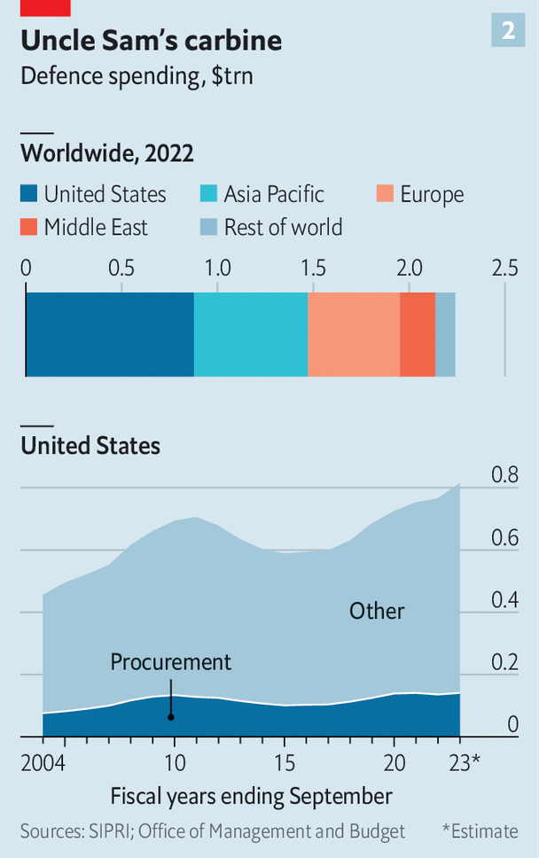image: The Economist
Big tech is getting in on the action, too. Amazon, Google and Microsoft have targeted defence and security as promising markets, says Mr Grundman. Military procurement is a rare business large enough to make a difference to the tech titans’ top lines, which are counted in the hundreds of billions of dollars. The trio, along with Oracle, a smaller maker of business software, are already sharing a $9bn cloud-computing contract with the Pentagon. Microsoft also supplies the army with augmented-reality goggles in a deal that could eventually be worth $22bn.
The Pentagon’s new approach is also attracting upstart rivals. Anduril, a firm founded in 2017 solely to serve military needs, has developed Lattice, a general-purpose software platform that can be swiftly updated and adapted to solve new problems. The company also makes a short-range drone called the Ghost, which can be operated by a couple of soldiers. Recognising that to win business quickly it needs to be vertically integrated, it has acquired a manufacturer of rocket engines and is developing an underwater autonomous vessel for the Australian navy.
The wannabe primes and their financial backers still bemoan the barriers to new entrants. Brian Schimpf, Anduril’s boss, says that when working with the DoD you get “punched in the face every day”. SpaceX and Palantir both had to fight court battles just to be able to contest military contracts. In June Palantir signed an open letter with 11 other companies, including Anduril, and investors, imploring the Pentagon to remove obstacles to smaller contractors. The letter, which drew on proposals from the Atlantic Council, condemned “antiquated methods” that “drastically limited” access to commercial innovation.
As the national-security strategy shows, the DoD seems keen to move away from procurement antiquity, for example by shifting more risk onto contractors through fixed-price, rather than cost-plus, development contracts. Such developments are causing palpitations among the primes. Boeing’s recent financial travails are partly a result of catastrophically underbidding in fixed-price contracts for the KC-46 tanker and Air Force One, which ferries around American presidents.
In contrast, Anduril has dispensed with the crutch of cost-plus of its own accord, and is investing its own capital to make what it thinks the DoD will need. By clinging on to the old model, the primes may be depriving America of the 21st-century defence industry it needs. ■
Can Israeli-Emirati business ties survive the Gaza war?
The commercial logic of the rapprochement is sound. The politics is trickier
IN 2020 MIDDLE EASTERN commerce was transformed. The United Arab Emirates (UAE) and a few other countries signed the Abraham Accords with Israel, normalising relations between the Jewish state and some of its Arab neighbours. Israeli tourists flooded into Dubai on the first ever direct flights. In the first eight months of 2023 Dubai welcomed almost 230,000 travellers from Israel, 73% more than in the same period last year. Nowadays travel agencies in Tel Aviv even offer bar-mitzvah tours in the emirate, with pit stops at kosher restaurants.
Business dealings have blossomed, too. The UAE-Israel Comprehensive Economic Partnership Agreement came into force in April. Official trade between the two countries is expected to surpass $3bn this year, from nothing in 2019. Last year Abu Dhabi’s sovereign wealth fund, Mubadala, reportedly invested $100m in six venture-capital (VC) funds based in Israel or focused on Israeli startups. It also bought a $1bn stake in an offshore natural-gas field from NewMed Energy of Israel. Israeli technology companies such as Liquidity Group, a fintech darling, have opened research-and-development centres in the UAE. Israeli and Emirati universities have forged research partnerships on things like artificial intelligence.
All of this progress is now at risk as a result of the war raging between Israel and Hamas. Since the conflict erupted, reports one Israeli entrepreneur, many Emirati contacts have gone silent. An Israeli-American investor who splits his time between Dubai and Tel Aviv worries that even after the conflict abates, Arab firms will think twice about transacting with Israeli ones.
That would be unwelcome for Israel and the UAE alike. Israeli business confidence was slumping even before the hostilities in Gaza. Proposed reforms to weaken the supreme court worried corporate bosses. Amid a worldwide VC winter, Israeli startups raised less than $4bn in the first half of 2023, the lowest since the same period in 2018. More than two-fifths of Israeli companies surveyed in late October reported that their prospective backers had cancelled or delayed investment agreements. Israel’s businesses could therefore use the UAE’s deep pools of capital and access to its domestic market, especially as their country recovers from hostilities that are, according to surveys, already affecting four in five of its tech firms.
The UAE, for its part, covets Israeli know-how, which could accelerate the country’s economic diversification away from oil and help it keep up with competition from its bigger neighbour, Saudi Arabia, itself in the throes of a modernisation drive (and, until the Gaza war, on course to forge diplomatic ties with Israel). In the past decade private investment in the UAE has declined as a share of GDP. Although the government has put in place various incentives for entrepreneurs, from accelerator programmes to credit guarantees, the IMF has recently pointed to the “weak technology content” of the Emirati economy. Most new tech ventures end up looking like copycats of stale e-commerce businesses. Israel, with its keen technological acumen in areas from digital technology to water desalination and a culture of free enterprise, has a lot to teach the Emiratis.
The commercial logic of continued rapprochement, then, remains sound. Many businesspeople in Israel and the UAE know it—and are hoping that the current pause is just that, rather than a collapse. ■
Chinese apps are a mixed blessing for American big tech
How long will the advertising blitzes of Shein and Temu last?
During the past year Shein and Temu, two ultra-fast-fashion upstarts famous both for $5 frocks and for playing down their Chinese heritage, have waged an internecine legal battle in America. Singapore-based Shein, the better-known of the two, threw down the frilly gauntlet, accusing Temu, which has invaded its territory in America, of stealing its trademarks and using social-media influencers to disparage it. Temu, which is based in Boston but owned by PDD, a Chinese e-commerce giant, struck back. It accused Shein of monopolistic practices like using its market power to force a network of 8,000-plus suppliers in China to refuse to do business with Temu. Then, on October 27th, Reuters reported that the firms had suspended hostilities.
To observers in the West these goings-on might once have seemed like an entertaining sideshow. But they illustrate that the cut-throat drama of Chinese e-commerce has now arrived in America. The fortunes of Shein and Temu are intricately bound up with those of some of America’s biggest technology firms, such as Meta, with its social-media empire, Alphabet, owner of Google, and Amazon, America’s e-commerce behemoth—not to mention physical retailers like Walmart and the dollar stores ubiquitous across American strip malls. No one likes to say this out loud, but for all the talk of Sino-American decoupling, China-linked e-commerce platforms are muscling into American business with the same shock-and-awe tactics that TikTok, a video app, used to besiege social media. For digital advertisers it is a mixed blessing. For discount retailers it is a curse. For everyone it may change the warp and weft of cross-border commerce.
Take advertising for starters. In its third-quarter results announced in late October, Meta revealed that advertisers from China, including e-commerce and gaming firms, had an “outsized” impact on revenue growth. Meta did not name the firms or quantify their impact, but supersleuths went to work. One was Brian Wieser, a former adman turned analyst, who five years ago first drew attention to the importance of Chinese advertisers on Facebook after spotting differences in company data between the geographic location of those who sell ads on its platforms and those who see them. Only this year did Meta start acknowledging China’s importance, vindicating his work. Using similar location data, MoffettNathanson, a research firm, estimates that Shein and Temu provided nearly a third of Meta’s revenue growth in the nine months to September, or almost $3bn (a figure well short of Mr Wieser’s estimates). Alphabet, too, is reaping the bonanza. Tinuiti, a marketing firm, says that in the third quarter Temu was as big a competitor in auctions for ads on Google Shopping as Walmart. A year ago the fledgling firm was nowhere.
Then there is e-commerce. Amazon’s platform has long hosted sellers of cheap goods from China. They seldom advertise their provenance. Nonetheless, Juozas Kaziukenas, founder of Marketplace Pulse, an e-commerce research firm, has combed through physical addresses to estimate that many merchants selling on Amazon are based in China. As Shein and Temu surge in popularity, some of those vendors may switch to their platforms. For now, Mr Kaziukenas does not expect the cut-price duo to materially challenge Amazon’s business, which is much bigger, has a broader range of goods for sale and vastly outpaces them on speed of delivery. That said, if e-commerce in China is any guide, the upstarts will not rest until they have taken market share from American competitors, undaunted by their rivals’ heft. TikTok, too, is becoming a force to be reckoned with in online shopping, using live jamborees to attract shoppers, a common practice in China. MoffettNathanson calls the triple-barrelled onslaught the “biggest disruptive threat” to e-commerce in years.
If the Asian trio loom so large, why are America’s tech giants so hush-hush about them? For those enjoying the ad windfall, one reason may be questions about the longevity of Shein’s and Temu’s marketing sprees. In mass-market retail, with wafer-thin margins, pouring billions of dollars into digital ads is a road to ruin if it goes on too long. Meta and Alphabet may not want to draw attention to the potential volatility of the revenue streams.
Political headwinds in America may be mounting, too. Sinosceptics in Congress, in a similar tizzy about Shein and Temu as they are about TikTok, accuse the fast-fashion duo of exploiting an exception in American law that allows packages under $800 in value to enter the country duty-free and with scant inspection. It reckons the two firms are responsible for 30% of packages entering America under this rule. Closing the loophole could significantly cut the discounts the two platforms offer in America. Moreover, their algorithms draw on oceans of data about shoppers. That opens them up to the same attacks as TikTok.
One risk that the retail firms are apparently spared is a crackdown in China. With headquarters outside the country, they are less likely to suffer the fates of successful Chinese tech firms that have fallen foul of President Xi Jinping in recent years. Sky Canaves of Insider Intelligence, a data-gatherer, says their success may in fact be helping their Chinese suppliers offset the economic slowdown at home. She thinks that will boost their standing with the government.
The cat is out of the bag
It is not clear why Shein and Temu settled their legal grievances, but it will surely be a relief to the powers that be in Beijing. After all, a common front is better for the country’s image abroad than a catfight on the digital catwalk. Whether the truce means they will spend less to out-market each other remains to be seen. But American tech giants are in a new world order. They are still largely shut out of China. China, by proxy, is all over their home turf. The new competition no doubt frustrates big tech. To its customers, it is a neatly wrapped gift. ■
Read more from Schumpeter, our columnist on global business:
Donald Trump’s second term would be a protectionist nightmare
His first term was bad enough
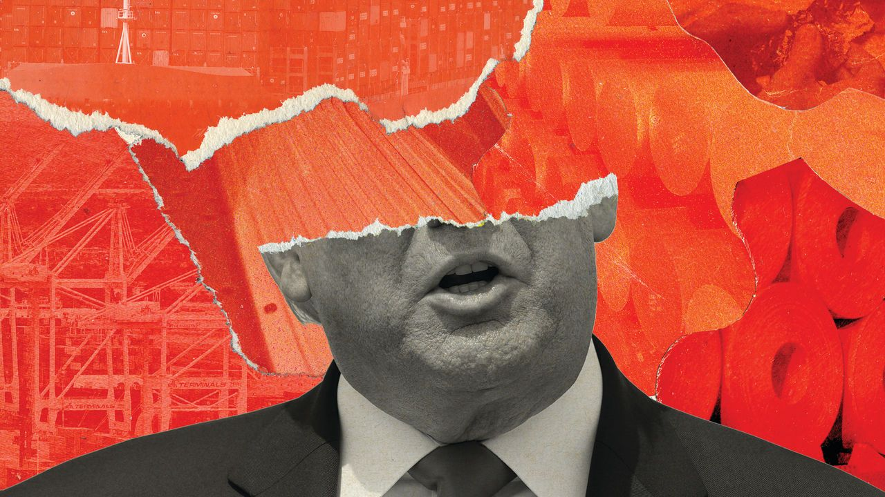
Sequels are never as good as the original. And when the original was terrible, there is even more reason to dread the next episode. So it is with “Tariff Man Part Two”. In the White House, Donald Trump put more new tariffs on American imports than any president in nearly a century. His philosophy was simple: “I am a Tariff Man. When people or countries come in to raid the great wealth of our Nation, I want them to pay for the privilege of doing so.”
Mr Trump’s protectionism made America poorer, did little to help exporters and annoyed its friends. If he wins the Republican presidential nomination (a likely outcome) and goes on to win the election (too close to call), he has vowed to ramp up things. He is mulling an across-the-board levy of perhaps 10% on all products entering America. In one fell swoop, his plans would more than triple the average American tariff. The direct costs would be bad enough, with the tariffs functioning as a tax on consumers and hurting most producers. Yet they would also tear at America’s ties with its allies and threaten to wreck the global trade system.
To get a sense of the impact, look back. On January 23rd 2018, a year after Mr Trump was sworn in, he got started with tariffs, hitting washing machines and solar panels. A couple of months later he went after aluminium and steel. A few months after that, it was Chinese goods. By 2021 American duties were worth 3% of the country’s total import value, double the level when Mr Trump took office. Tariffs on Chinese imports rose from 3% to 19%, calculates Chad Bown of the Peterson Institute for International Economics, a think-tank.
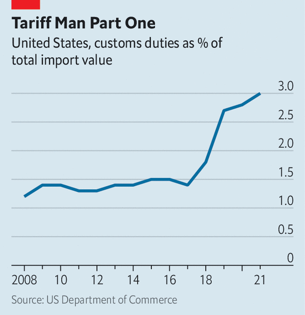image: The Economist
Mr Trump’s first aim was to slim the trade deficit. He thought tariffs would bludgeon other countries into submission, leading them to rejig policies to America’s advantage. Memorably, he declared that “trade wars are good, and easy to win.” But instead of shrinking, the deficit widened. Instead of buckling, China tripled its tariffs on America. Many allies retaliated, too.
The consequences were dismal. Industries that were protected by tariffs reaped benefits, enjoying greater market share and fatter profits. Most others suffered. America’s International Trade Commission (usitc), a bipartisan agency, found that industries downstream from tariff-coddled producers faced higher input prices and lower profitability. The Peterson Institute estimated that steel users in effect paid an extra $650,000 per job created in the steel industry. Studies have calculated that almost all the costs have been borne by Americans, rather than foreign producers. The usitc found a near one-to-one increase in the price of American imports in the wake of tariffs on China.
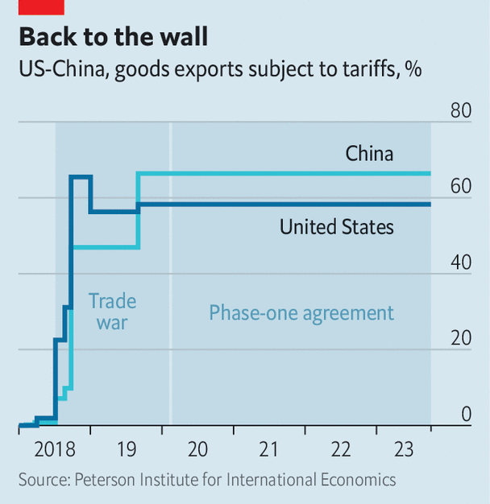image: The Economist
Mr Trump did unquestionably succeed in one respect. He helped remake politics. According to a recent survey from the Chicago Council on Global Affairs, a think-tank, 66% of Americans think the government should place restrictions on imported foreign goods to protect jobs at home, up from 60% in 2018. On the campaign trail in 2019 Joe Biden criticised tariffs as a costly policy. In power he has rolled them back only a little. The array of levies on China remains intact. Whatever the merits of lifting tariffs, the White House appears fearful of blowback from looking soft on China.
At the same time, Mr Biden has concocted an enormous industrial policy, fuelled by more than $1trn in subsidies for electric vehicles, offshore wind, semiconductors and the like. It is a more thoughtful and deliberate approach than Mr Trump’s, but it still looks likely to fail to bring about a manufacturing renaissance, is very expensive and, in lavishing subsidies on American factories, discriminates against other countries. It is, in short, rather Trumpist.
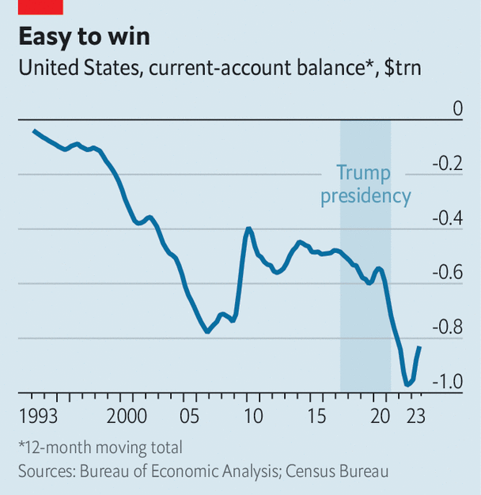image: The Economist
How much worse could things get? If Mr Trump wins the presidential election in 2024, the world may discover that the answer is: “Rather a lot.” In August Mr Trump was interviewed on Fox Business, a television channel, by Larry Kudlow, his former economic adviser and a long-time media personality. Mr Trump put forward two ideas. First, all foreign firms selling to America would face a 10% levy. Second, if any country placed a high tariff on anything American, he would hit back with exactly the same tariff. “Call it retribution,” said Mr Trump. “Reciprocity,” interjected Mr Kudlow, using the politer label.
The lineage of these ideas can be traced back to thinkers who crafted policy during Mr Trump’s presidency, and who are working on new, more detailed plans. Robert Lighthizer, United States trade representative under Mr Trump, recently laid out his vision in a book, “No Trade is Free”. One of his ideas is the universal tariff on all imports, to be used as a lever to bring America’s trade flows into balance, so that the country no longer runs a big deficit. Mr Lighthizer would not limit the tariff to 10%. Rather, he writes, America should impose the levy “at a progressively higher rate year after year until we achieve balance”.
Project 2025, a coalition of conservative groups, published a book earlier this year with blueprints for almost every facet of government during a second Trump administration. In the trade chapter Peter Navarro, another economic adviser to Mr Trump, bemoaned the fact that countries like China and India have higher levies on America’s goods than America does on theirs, arguing that this has led to “systematic exploitation of American farmers, ranchers, manufacturers, and workers”. In principle, reciprocity could be achieved in two ways—either by persuading other countries to lower tariffs or by America raising its own. Mr Navarro leaves no doubt as to his preference.
Action, reaction
If Mr Trump has his way, other countries will probably respond by slapping their own tariffs on America. The spread of universal tariffs would be akin to a giant tax on cross-border transactions, making international commerce less attractive. Meanwhile, Mr Trump’s hopes of shrinking the trade deficit would run headlong into the economic forces that actually determine the balance of exchanges between countries. In America’s case the crucial factor is the country’s low saving rate, which is almost certain to continue as a result of persistently high consumer spending and widening government deficits.
Mr Trump has pointed to one ostensible virtue of his tariffs: they generate income. The Committee for a Responsible Federal Budget, an advocacy group, estimates that a 10% tariff may bring in up to $2.5trn in extra revenue during its first decade of implementation, which could be used to reduce America’s budget deficit. But this money could also be brought in by other methods. Raising tariffs simply means picking them as a tax over others such as, say, a higher income or inheritance tax.
Every tax has pros (eg, generating public revenue or discouraging bad behaviour) and cons (eg, hurting growth or imposing costs on individuals). The cons of tariffs are big. Ahmad Lashkaripour of Indiana University estimates that a global tariff war would shrink American gdp by about 1%. Most countries would suffer falls closer to 3%. The drag on smaller, trade-reliant economies would be greater still. Tariffs are also regressive since they hurt those on lower incomes twice. They tax more of their spending, by raising the price of consumer goods, and more of their earnings, since many work in industries, such as construction, that face higher material costs. If the bulk of the tariff bill is passed on to American consumers, as occurred with the first round of Mr Trump’s tariffs, a 10% duty would cost each American household about $2,000 per year.
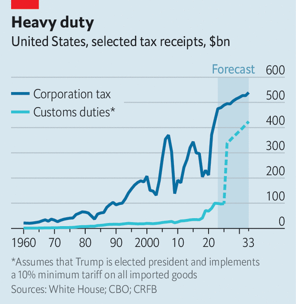image: The Economist
The toll from universal tariffs would go beyond their economic impact. International commerce, and the system that enables it, built after the second world war, allows countries to challenge each other’s policies at the World Trade Organisation (wto). But the wto’s role in dispute settlement has been disabled since 2019, when the Trump administration blocked appointments to its appellate body, preventing the institution from making binding rulings. The result is that countries which object to Mr Trump’s tariffs would lack a suitable way to confront them. “The system would fall apart in a much greater way than it did even during his first term,” says Douglas Irwin of Dartmouth College.
Mr Biden has not been a model free-trader. His industrial policy is built on lavish subsidies that, by incentivising investment in America, are unfair to other countries. Yet even if somewhat hamfisted, he has worked to cobble together supply chains and trade networks that bring America and its allies closer together. This is part of an attempt, still in its infancy, to lessen dependence on China. Mr Trump’s tariffs would reverse Mr Biden’s progress. It would no longer be America and (occasionally reluctant) friends versus China—it would be America versus the world. “Trump would view it as a badge of honour if other countries were upset. He’d say, ‘See, I’m fighting for you and we’re sticking it to them’,” predicts Mr Irwin.
Mr Trump would lack outright authority to implement a universal tariff. The constitution gives Congress the power to regulate commerce; the president can intervene only by using special justifications. Mr Trump previously drew on two statutes: section 232 of trade law allows the president to restrict imports in order to protect national security (the dubious basis for tariffs on steel and aluminium); section 301 allows a president to impose tariffs against a country with discriminatory trade behaviour (the more reasonable basis for actions against China). But both require time-consuming investigations, which would cut against the desire of Mr Trump and his advisers for rapid executive actions.
Another option would be to invoke the International Emergency Economic Powers Act, which Mr Trump used in 2020 to order the removal of TikTok and WeChat, Chinese social-media goliaths, from American app stores. In this scenario Mr Trump would declare a national emergency and then announce a universal tariff as the response. “It is less clear exactly what national emergency would be declared,” says Jennifer Hillman, a former general counsel with the us trade representative. “Perhaps that the trade deficit is threatening American competitiveness? Or that the size of the trade deficit is unsustainable?”
Few economists would endorse such thinking. Far from being a weakness, appetite for imports comes from strength. America has run deficits for the past half-century, a period of economic dominance. More crucially, legal experts would also take a dim view. “Trump would be bending the law in a direction that it was never intended to apply,” says Alan Wolff, a veteran of trade law. “There would be court challenges, and they might well be successful.”
Reciprocal tariffs might seem tidier, but any attempt to impose them would get messy. Mr Navarro loves to point out that American tariffs on cars are just 2.5%, whereas the European Union charges 10%. What he omits is that America has long placed a 25% tariff on imports of pick-up trucks, not to mention hefty duties on some imports of lumber and foods. A line-by-line look at tariffs would turn up scores of examples where American levies are higher than those of other countries.
Indeed, a guiding principle of the wto is that countries can negotiate across different product categories to set tariffs that protect politically sensitive sectors, so long as they keep tariffs down overall. Letting countries hammer out unique tariff regimes is a core part of diplomacy. Pure reciprocity would descend into absurdity.
Politically, Mr Trump would also face opposition. Despite his embrace of protectionism, many in the Republican Party are less committed. Consider Project 2025, the coalition drawing up policy plans for Mr Trump’s second term. It is quite clear in all of its positions—except for that on trade. Its chapter on trade is split in two: Mr Navarro’s plea for tariffs is set against a free-trade argument by Kent Lassman of the Competitive Enterprise Institute, a think-tank. Mr Lassman lays out what he dubs a “conservative vision for trade”, calling for tariff cuts to reduce consumer prices, as well as more ambitious trade deals.
Mr Trump’s domestic opponents would receive support from abroad. A trade official with an American ally says that his government is braced for tariffs at the start of a new Trump administration, and that he and his colleagues have a damage-limitation playbook, honed during Mr Trump’s four years in office. They would work with firms and politicians in Republican districts that enjoy the benefits of trade—from Iowa’s corn-growers to Tennessee’s car industry—and try to persuade Mr Trump to carve out exceptions.
Charging farmers
Yet both legal challenges and lobbying would take months, if not longer, to play out. In the meantime, the global trade system would be plunged into uncertainty. Other governments would slap retaliatory tariffs on America. Mr Biden’s work to repair ties with America’s allies would be torn apart. As firms try to assess the risks, they could well turn more cautious in their investment, which would weigh on economic growth. Companies with border-straddling operations would face pressure to retrench. Smaller countries that are dependent on trade would be vulnerable.
One of the lessons of Mr Trump’s first stint in the White House is that he can cause great damage with the stroke of a pen, and that the damage is not easily reversed. Most of his tariffs are still on the books. The wto remains neutered. The America-first ethos that he preached, once a fringe preference, is now a force in the political mainstream. The consequences of a second Trump presidency for global trade would be grave and enduring. ■
When the Federal Reserve began to raise interest rates more than a year ago, American banks enjoyed a nice little boost. They increased the interest they charged on loans, while keeping the rates they offered on deposits steady. In other countries this move attracted public opprobrium and politicians floated measures to ensure that customers were not swindled. Americans were happy to rely on a more American solution: competition.
It has done its job. Average yields on interest-bearing bank deposits have soared to more than 2.9%, up from 0.1% when the Fed began to raise interest rates. The extent to which higher rates have been passed on to customers—known as the “deposit beta”—has been a popular subject on recent quarterly earnings calls. Despite assurances by bank bosses that they have peaked, betas are likely to keep rising in the coming months, pinching profits.
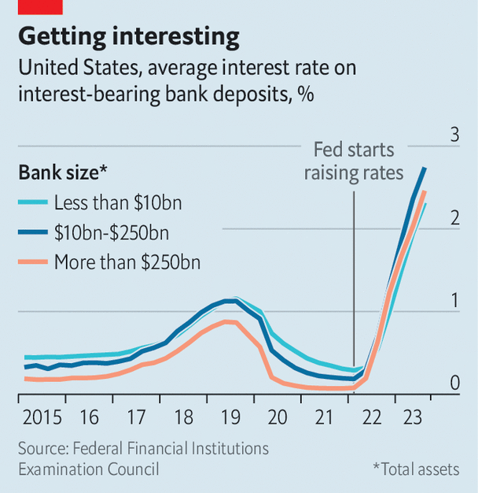image: The Economist
The process is being driven by customers shifting their money from low-yielding products to higher-yielding ones. Data from quarterly filings show that the share of bank deposits held in interest-free accounts has fallen from 29% at the end of 2021 to 20%. Had this figure remained constant, bank interest costs would be roughly 10% lower than they are now. Quarterly filings also show that banks which have lost more than 5% of their deposits since the start of the year have increased the average rate on interest-bearing deposits by 2.7 percentage points, compared with a more miserly 2.1 percentage points at those institutions with more secure deposits.
This much is familiar from past Fed tightening cycles. Historically, however, big banks have enjoyed an advantage over smaller peers, owing to their pricing power—something that now appears to be dwindling. America’s “big four” banks (JPMorgan Chase, Bank of America, Wells Fargo and Citigroup) reported average deposit costs of 2.5% in the third quarter of the year, identical to the median rate across all the country’s banks. And the funding gap between the biggest and smallest institutions has flipped since the last tightening cycle. In 2015-19 banks with assets of at least $250bn paid 0.3 percentage points less on their deposits than banks with less than $100m in assets; today they are paying 0.8 points more.
Brian Foran of Autonomous Research, an advisory firm, suggests that this may reflect greater competition among big banks for corporate and high-net-worth clients, who are most likely to be aware of other, higher-yielding places to stash their cash. When rates were at zero, competition for such deposits was non-existent, notes Mr Foran. Now, with money-market funds offering 5%, the competition is much fiercer.
How much longer will the squeeze continue? Chris McGratty of kbw, an investment bank, says that banks have felt most of the pain, but that costs have a bit further to rise and are likely to stay elevated, given that the Fed has signalled it will keep rates higher for longer than previously expected. Even if the Fed’s policymakers are done raising rates and banks keep yields steady, customers will continue to shift deposits from lower-earning to high-earning products, pushing up costs for banks. This will put pressure on deposits, forcing banks to slow their lending. While savers will benefit from higher rates of return, borrowers are another story altogether. ■
Global conflicts have a habit of sneaking up on money-managers
Europe had been moving towards the slaughterhouse for years, and by 1914 a conflict was all but inevitable—that, at least, is the argument often made in hindsight. Yet at the time, as Niall Ferguson, a historian, noted in a paper published in 2008, it did not feel that way to investors. For them, the first world war came as a shock. Until the week before it erupted, prices in the bond, currency and money markets barely budged. Then all hell broke loose. “The City has seen in a flash the meaning of war,” wrote this newspaper on August 1st 1914.
Could financial markets once again be underpricing the risk of a global conflict? In the nightmare scenario, the descent into a third world war began two years ago, as Russian troops massed on the Ukrainian border. Today Israel’s battle against Hamas has the frightening potential to spill across its borders. American military support is crucial to both Ukraine and Israel, and in Iraq and Syria the superpower’s bases have come under fire, probably from proxies of Iran. Should China decide it is time to take advantage of a distracted superpower and invade Taiwan, America could all too easily end up being drawn into three wars at once. The rest of the world risks those wars interlocking and turning into something even more devastating.
This scenario would of course place financial damage a long way down the list of horrors. Even so, it is part of an investor’s job to consider exactly what it would mean for their portfolio. So far the possibility of a world war has barely caused a tremor in the markets. True, they have for some time now been more seized by fear than greed. Bond prices have been turbulent, even for supposedly risk-free American Treasuries, and yields have been climbing for most of this year. Stock indices in America, China and Europe have fallen for three consecutive months. Yet this choppiness can all be plausibly explained by peacetime factors, including outsized government borrowing, interest-rate expectations and shareholders whose previous optimism had got the better of them.
In short, it does not look anything like the panic you might expect if the odds of the world entering into war were edging higher. The brightest conclusion is that such odds really are close to zero. A darker one is that, like the investors of 1914, today’s may soon be blindsided. History points to a third possibility: that even if investors expect a major war, there is little they can do to reliably profit from it.
The easiest way to understand this is to imagine yourself in 1914, knowing that the first world war was about to arrive. You would need to place your bets quickly—within weeks, the main exchanges in London, New York and continental Europe would be closed. They would stay that way for months. Would you be able to guess how many, and which way the war might have turned by then? If you wisely judged American stocks to be a good bet, would you have managed to trade with a broker who avoided bankruptcy amid a liquidity crisis? You might have decided, again wisely, to trim positions in soon-to-be war-strained government debt. Would you have guessed that Russian bonds, which would experience a communist revolution and Bolshevik-driven default, were the ones to dump completely?
War, in other words, involves a level of radical uncertainty far beyond the calculable risks to which most investors have become accustomed. This means that even previous world wars have limited lessons for later ones, since no two are alike. Mr Ferguson’s paper shows that the optimal playbook for 1914 (buy commodities and American stocks; sell European bonds, stocks and currencies) was of little use in the late 1930s. Investors in that decade did try to learn from history. Anticipating another world war, they sold continental European stocks and currencies. But this different war had different winning investments. British stocks beat American ones, and so did British government bonds.
Today there is a greater and more terrible source of uncertainty, since many of the potential belligerent powers wield nuclear weapons. Yet in a sense, this has little financial relevance. After all, in a nuclear conflagration your portfolio would be unlikely to rank highly among your priorities. The upshot of it all? That the fog of war is even thicker for investors than it is for military generals, who at least have sight of the action. If the worst happens, future historians might wonder about the seeming insouciance of today’s investors. They will only be able to do so because, for them, the fog will have cleared.■
Read more from Buttonwood, our columnist on financial markets:
Investors are paying close attention to the world’s safest assets
Forget the Federal Reserve. There is a new show in town
Regular and predictable. That has been the golden rule of Treasury issuance for 40 years. America’s fiscal branch once funded itself with “tactical” bond sales. Officials would survey market participants and issue debt in response. But this process proved highly disruptive to financial activity. So in 1982 they adopted a new approach: a regular schedule of issuance would be followed, communicated long in advance. Treasury officials now think that, by reducing overall borrowing costs, this strategy has saved taxpayers a fortune.
As a part of this regularly scheduled programme the Treasury has, for decades, released a “quarterly refunding announcement” in which it lays out its plans for the next three months. This is not generally a hotly anticipated event, being precisely the kind of wonkish release that seldom attracts wider interest. But on November 1st the announcement was pretty much all that Wall Street cared about. Ian Lyngen of bmo Capital Markets, an investment bank, declared this a “unique moment in market history”, because the refunding announcement was more important than the meeting of the Federal Reserve, which took place later the same day. “All that matters at this moment is supply.”
Investors’ interest has been piqued for several reasons. America’s fiscal deficit is large. It will clock in at almost 6% of gdp for the fiscal year of 2022-23. It has been pushed upwards by high interest rates, which have increased the cost of servicing America’s national debt. This has put pressure on bond markets. In August, at the last refunding announcement, the market appeared surprised by both the increase in total issuance and just how much of it was long-dated. In the weeks that followed several auctions “tailed”—trader-speak for the auction resulting in debt being issued at a higher yield than expected.
image: The Economist
Some traders think this exacerbated the almighty sell-off in long-dated bonds that has occurred since the summer. Since August 1st the yield on t-bills, the name given to short-dated Treasuries which mature within a year, has not budged at all. Yields have spiked, however, for long-dated bonds that mature in ten or 30 years. The difference between what it costs to borrow in the short term and the long term is called the “term premium”—and it has returned with a vengeance (see chart).
In the event, markets were relieved by the Treasury’s announcement. Planned issuance was increased, but will be concentrated at the short end. Exactly the same value of 20-year Treasuries will be issued in the three months from November as in the three that preceded it, but almost 20% more two-year Treasuries will be sold. Currently, short-dated t-bill issuance is more than one-fifth of total debt issuance. Although that is slightly above historical levels, the issuance committee indicated that it might be willing to go higher still. As noted in the minutes of their meeting, committee members “supported meaningful deviation” from the range. Markets embraced all of this news. The yield on the ten-year Treasury fell about ten basis points after the release.
That the Treasury managed to reassure investors this time round is a pleasing outcome for all involved. Its officials are sticking to their procedure as far as regular programming is concerned—they will, in three months’ time, publish their next set of issuance plans. But with markets so volatile it is becoming ever harder for the Treasury to remain predictable.■
China’s economy is a mess. Why aren’t firms going under?
The government’s desire to avoid bankruptcies is another drag on growth
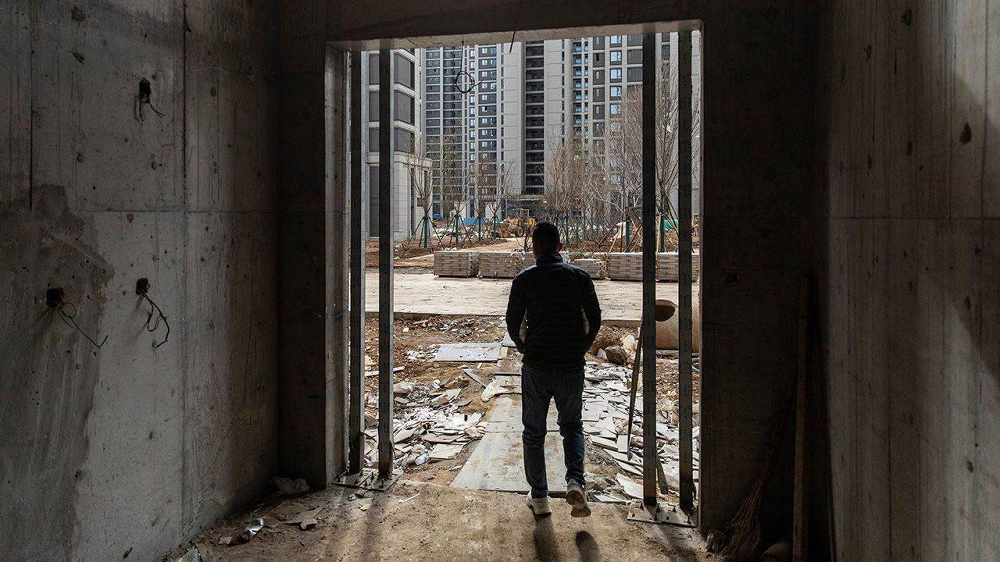
Evergrande is fighting for its life. On October 30th the property developer was granted its fifth, and probably final, stay of liquidation by a court in Hong Kong. Yet the situation on the mainland is a little more comfortable: the firm’s representatives have not even had to visit a courtroom. This is not unusual. Despite the many horrors visited upon China’s property sector, an industry publication reports that just 308 of the country’s 124,665 developers declared bankruptcy last year.
China’s ultra-low corporate bankruptcy rate—about a fifth of that found in America—might seem like unalloyed good news for officials in Beijing. That is until you consider the fact the country is experiencing a wave of corporate defaults, which includes half of the 50 largest property developers in 2020. With many unable to shed their bad debts through restructuring, businesses are struggling to reduce new borrowing and pay back outstanding loans. Policymakers, banks and firms all want to stave off formal bankruptcies in order to avoid a “Lehman moment”, or crisis-triggering event. The result is stifled productivity and deeper economic malaise.
Creative destruction, the process by which market economies replace failing firms with more efficient ones, has few fans in China. Local officials press lenders to prolong the lives of even the most unproductive businesses. Lending rules restrict debt forgiveness, an important tool in restructurings, because banks are state-owned, ultimately putting the government on the hook for losses. A corporate bankruptcy requires the consent of courts, creditors, local government and often a regulator, which all have a strong interest in keeping firms alive. As a deterrent for other company bosses, the threat of prison is never far away. In September Hui Ka Yan, Evergrande’s chairman, was detained. The next month a former chairman of Bank of China was arrested for a bevy of misdeeds, including the creation of financial risk.
Barriers to bankruptcy mean that struggling firms have little choice but to refinance, replacing existing debts with new ones. China’s approach of keeping bad companies on life-support weighs on its economy, according to research by Li Bo of Tsinghua University and co-authors. Ms Li has found that provinces which have introduced special courts to arbitrate bankruptcies at arm’s length from local authorities have seen more firms created and improved productivity. Corporate borrowing becomes cheaper, too. In the rest of the country creditors demand a premium, since recovering debts is so hard.
Rules that seek to keep sick companies alive also push up the number of liquidations when cases do reach court, because those that make it so far tend to be in a terrible way. Indeed, 83% of companies that arrive in court end up liquidated, compared with a mere 5% in America. Bankruptcy courts themselves drag out proceedings in attempts to avoid liquidation: cases average 539 days in court, around 50% longer than American ones. For its part, Evergrande has been in default for two years, during which it has been unable to propose a restructuring plan that is acceptable to its offshore creditors. The value of its assets has been driven lower still by the lengthy default. Deloitte, a consultancy, reckons that in a worst-case scenario offshore creditors will recover a miserable $0.02-0.04 per dollar owed.
China’s bankruptcy rules also have international ramifications. The country has become the world’s largest sovereign creditor, having lent $1.5trn to governments around the globe. Yet its refusal to accept write-downs has slowed multilateral debt negotiations—as was evident in October, when an imf deal on Sri Lanka’s debt was scuttled. The failure was partly a result of rules restricting China’s bankers from recognising and forgiving bad debts, says a mainland lawyer involved in overseas lending. Writing down the debt would have left Chinese firms that built Sri Lanka’s infrastructure out of pocket, triggering the same political concerns that exist in cases of domestic debt distress. A Lehman moment would have ramifications abroad. So, too, does China’s desire to avoid one. ■
How Japan poses a threat to the global financial system
Huge, reliable buyers of overseas bonds may be about to close their wallets
The bank of japan (boj) failed to deliver a Halloween thriller. Even as central banks elsewhere have raised interest rates in recent years, the boj has stuck with its ultra-loose policy, designed to stimulate growth. Japan’s benchmark interest rate sits at -0.1%, where it has been for seven years. And on October 31st, despite building pressure, the bank decided merely to tweak its cap on ten-year government-bond yields. The 1% ceiling on yields, which the bank makes enormous bond purchases in order to defend, is now a reference rather than a rule. Indeed, yields on the benchmark bond are at 0.95%, their highest for over a decade (see chart).
image: The Economist
After the boj’s announcement, the yen fell to ¥151 to the dollar, its lowest in decades. Inflation, long quiescent, is no longer so low—the boj raised its forecasts for underlying “core” inflation over the next three years. Many analysts expect the central bank to end its yield-curve-control policy once and for all early next year, and to have raised interest rates by April. But even when the boj does finally raise interest rates, it is likely to be by just a fraction of a percentage point, meaning the gulf between Japanese bond yields and those in the rest of the world will remain large, with major consequences for global financial markets. A fright is still in the offing.
To understand why, consider the impact Japan’s rock-bottom interest rates and continued intervention to suppress bond yields have had. Low rates at home have generated demand for foreign assets, as investors seek better returns. Last year the income from Japan’s overseas investments ran to $269bn more than was made by overseas investors in Japan, the world’s largest surplus, equivalent to 6% of Japanese gdp. The huge gap between bond yields in Japan and those in the rest of the world now presents dangers to both the Japanese investors that have bought foreign bonds and the global issuers that have benefited from Japanese custom.
Jeopardy is particularly apparent at Japan’s largest financial firms, which make big investments abroad. The cost of hedging overseas investments depends on the difference between the short-term interest rates of the two currencies at play. America’s short-term interest rates are more than five percentage points above Japan’s equivalent, and the gap exceeds the 4.8% yield on ten-year American government bonds. This means Japanese buyers now make a guaranteed loss when buying long-term bonds in dollars and hedging their exposure. Hence why the country’s life insurers, which are among the institutions keenest to hedge their currency risk, dumped ¥11.4trn ($87bn) in foreign bonds last year.
The huge gap between short-term interest rates means that Japanese investors now have more limited options. One is to continue buying overseas, but at greater risk. Meiji Yasuda Life Insurance and Sumitomo Life, each of which held more than ¥40trn in assets last year, say they will increase their overseas bond purchases without hedging against sudden currency shifts, in effect betting against a sudden rise in the yen. Life-insurance firms are usually conservative, but the longer the enormous gap in interest rates persists, the more they will be encouraged to take risks.
Meanwhile, rising yields on long-term Japanese bonds, which will surely rise further still if the boj does abandon yield-curve control, may tempt local investors to bring home their money. Japan’s 40-year bonds offer yields of 2.1%—enough to preserve the capital of investors even if the boj hits its target of 2% inflation. Martin Whetton of Westpac, a bank, says that this prospect ought to worry firms and governments in America and Europe used to a voracious Japanese appetite for their bonds.
In such a scenario, a source of demand would turn into a source of pressure on the funding of Western firms and governments. The yen might then surge, as Japanese investors sell foreign-currency debt and make new investments at home. Bob Michele of JPMorgan Asset Management warns of a decade of capital repatriation.
The flow of Japanese capital to the rest of the world, which emerged during a decade of easy monetary policy around the world, looks likely to be diminished. Whether the resulting pain will be felt by local financial institutions, or foreign bond issuers, or both, will become clearer over the months to come. What is already clear is that it will be felt by someone. ■
The Middle East’s economy is caught in the crossfire
Before the war in Gaza, it had been poised to boom
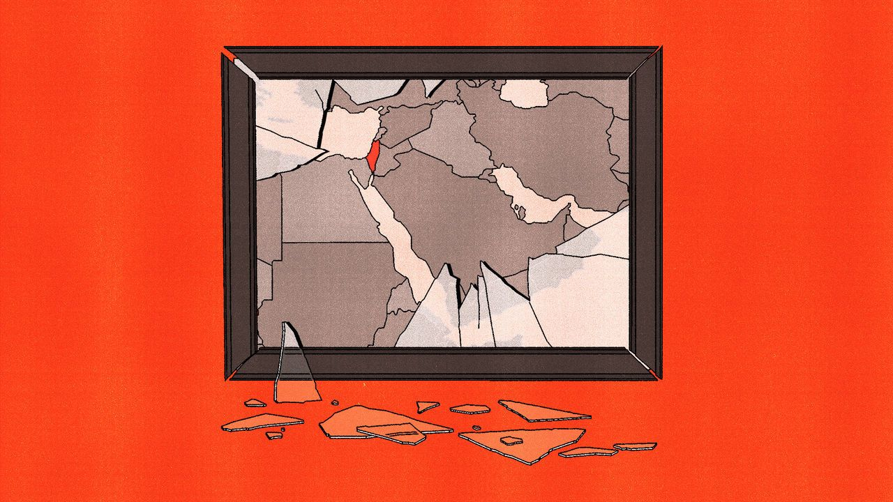
A month ago, on the eve of Hamas’s attack on Israel, there were reasons to be hopeful about the Middle East. Gulf states were ploughing billions of dollars of oil profits into flashy investments, building everything from sports teams and desert cities to entire manufacturing sectors. Perhaps, optimists thought, the wealth would even trickle down to the region’s poorer countries.
What prompted such hope was the longest period of calm since the Arab spring in 2011. Gnarly conflicts, such as civil wars in Libya and Yemen, as well as organised Palestinian resistance to Israel, appeared to have frozen. Violent clashes were rare, which some believed a precursor to them disappearing altogether. The region’s great rivals were inching towards warmer relations. International investors flocked to the Gulf to get in on the action.
Hamas’s attack and Israel’s response suggest that the region will now be laden with a bloody, destructive conflict for months to come, if not longer. Under pressure from their populations, Arab leaders have blamed Israel for the situation, even if they have been careful in their language. Overnight, their focus has shifted from economic growth to containing and shortening the war. Countries across the region, including Egypt and Qatar, are pulling out all the diplomatic stops to stop the spread of fighting.
Even if the conflict remains between just Hamas and Israel, there will be costs. Analysts had been upbeat about the prospects for economic integration. In 2020 the United Arab Emirates (uae) and Bahrain normalised relations with Israel, opening the door to deeper commercial ties. Although many other Arab countries refused to recognise Israel, many were increasingly willing to do business with it on the quiet. Even Saudi Arabian firms surreptitiously traded with and invested in their Israeli counterparts, whose workers are among the region’s most productive; the two countries were working on a deal to formalise relations.
How long the pause in such negotiations lasts remains to be seen, but the greater the destruction in Gaza, the harder it will be for Arab leaders to cosy up to Israel in future, given their pro-Palestinian populations and pressure from neighbours. Although Thani al-Zeyoudi, the uae’s trade minister, has promised to keep business and politics separate, others are unsure that will be possible. A Turkish investment banker, who draws up contracts for firms in the Gulf, reports that most of his clients considering Israel as an investment destination are waiting to see what happens next.
For the Middle East’s poorer countries, the consequences will be worse—and nowhere more so than in Egypt. The country was already struggling, with annual inflation at 38% and the government living between payments on its mountain of dollar debts by borrowing deposits from Gulf central banks. Now it has lost out on the gas that flowed from Israel. On November 1st officials in Cairo allowed across the border a handful of injured Gazans, as well as those with dual nationalities. Some diplomats hope that a larger influx might follow, perhaps even on the scale seen by Jordan when it welcomed Palestinians in the 1940s and Syrians in the 2010s, if Egypt were given the right financial incentives. In 2016 looking after 650,000 Syrian refugees cost Jordan’s state $2.6bn, much more than the $1.3bn it received in foreign aid. There are twice as many internally displaced people in Gaza.
What if the conflict escalates? In the worst case, the region descends into war—perhaps including direct confrontation between Iran and Israel—and economies are turned upside down. Any such war is likely to see a sharp rise in oil prices. Arab oil producers might even restrict supplies to the West, as they did during the Yom Kippur war in 1973, which the World Bank reckons could push up prices by 70%, to $157 per barrel. Even though the world economy is less energy-intensive today, the Gulf’s oil producers would benefit. All-out war, however, would hinder efforts to diversify their economies. Migrant workers would leave. Manufacturing industries would be hard to get off the ground without secure transport. Futuristic malls and hotels would lack the tourists to fill them. And for the region’s energy importers, which include Egypt and Jordan, a spike in oil prices would be a disaster.
There is another, more plausible escalation scenario. So far Iran has declined to turn threats and errant missiles into a direct attack. Israel’s ground invasion—smaller and slower than expected—is helping keep a lid on things. Nevertheless, conflict could still spill across Gaza’s borders. Imagine, say, fighting in the West Bank or greater involvement from Hizbullah. In this scenario, investing in the Middle East would look much riskier. If fighting flashed in neighbouring countries, leaders in the Gulf would find themselves working harder to convince investors that a return to calm and closer ties with Israel might happen soon.
In need of a parachute
In such a world, Egypt would not be the only country exposed. Lebanon’s economic free fall—now in its third year, as inflation rages above 100%—would accelerate with clashes between Israel and Hizbullah, which is based in the country. Fighting in the West Bank, where tensions are high, would spell trouble for Jordan, which sits next door. Like Egypt, the country is almost broke. It took out a $1.2bn loan from the imf last year, and was recently told by the fund that its annual growth of 2.6% was insufficient to fix its problems. Refugees could leave the state unable to repay debts. Unrest along its borders could deter creditors.
If either Egypt or Jordan were to run out of cash the results would be destabilising for the region. Both countries border a Palestinian territory, feeding it with supplies and providing allies with information. Both have the ear of the Palestinian Authority. And both have a young, unhappy population. The Arab spring showed how easily unrest in one Arab country can spread to another. Even Gulf officials, relatively insulated though they may be, would rather avoid such instability. ■
Read more from Free exchange, our column on economics:
Lab-grown models of embryos increasingly resemble the real thing
Embryoids promise many benefits, but pose tricky ethical questions
The traditional way to make an embryo is to combine a sperm cell with an egg, often after dinner and a bottle of wine. But a new way may be around the corner. In recent years scientists have discovered that they can persuade stem cells—those with the ability to transform into many other sorts of cells—to form structures that look and behave very much like embryos.
“Embryoids”, as such creations are called, can help with the study of embryology and pregnancy, and how they can go wrong. Some of the facsimiles look strikingly real. In 2022 two teams, one led by Magdalena Zernicka-Goetz, who works at the California Institute of Technology and the University of Cambridge, and another by Jacob Hanna at the Weizmann Institute of Science, in Israel, published papers describing mouse embryoids with rudimentary guts, brains and beating hearts. In June Dr Zernicka-Goetz published a paper describing a human embryoid designed to mimic the earliest stages of development, shortly after a real embryo would have implanted into its mother’s womb.
That second study was controversial, with some other scientists dubious that it represented as much of an advance as its authors claimed. But the state of the art is moving fast enough that some think embryoids may soon become hard to distinguish from the embryos they are meant to model. In many ways, that would be a good thing: the more accurate a model, the more useful it is. Human embryoids could shed light on developmental heart defects or diseases like spina bifida, and boost the success rates of in-vitro fertilisation (IVF).
But research on embryos—which, after all, have the potential to develop into human beings—is strictly regulated. Many countries ban the use in research of human embryos that are more than 14 days old, and researchers in countries without such laws usually adhere to the same standard voluntarily. The more similar embryoids become to the real thing, the harder it becomes to avoid the question of whether they should be subject to similar rules.
A natural embryo begins with a single fertilised egg. To make an embryoid scientists grow a mix of different stem cells derived from embryos or, sometimes, from adult organisms. They may tweak the molecular signals between the cells and which of their genes are active. Within days, embryo-like structures appear.
Embryoids are desirable partly because real embryos are scarce: the main source is leftovers from IVF treatment. They are also hard to grow. That makes it tricky to run large-scale experiments. Embryoids offer a less ethically fraught alternative.
A rose by any other name
One example of their benefits is the study of implantation, the process by which an embryo implants into the womb. It is here that most pregnancy losses happen. But the reasons were almost impossible to study in detail before the advent of embryoids. “You cannot go through the body of the mother to see the development of this embryo,” says Dr Zernicka-Goetz.
Embryoids—specifically, a type called a blastoid—offer the next-best thing. First created by Nicolas Rivron at the Austrian Academy of Sciences, they resemble an embryo at the blastocyst stage, just before implantation. In humans implantation happens around day seven and in mice, around day four. Each blastoid consists of a hollow ball of cells that would, in a real embryo, go on to become part of the placenta. Attached to the inner wall is a smaller ball that would, in other circumstances, develop into the fetus. By rolling blastoids across uterine tissue in a dish, Dr Rivron’s team found that they only stick when they are oriented so that this inner mass is closest to the womb tissue.
That implies the inner mass sends signals to the outer cells, instructing them to stick to the womb. Dr Rivron thinks he has identified those signals, and plans to publish his results soon. He hopes to help explain why so many embryos fail to attach. That might, in turn, improve the success rates of IVF, which in America is only about 35%. Blastoids have made such discoveries much easier, says Dr Rivron. He has started a company, Dawn Bio, which uses blastoids to screen drug candidates that might be useful in fertility treatment.
Other embryoids try to capture what embryos look like after implantation. The most advanced are made with mouse stem cells, such as the brain-and-heart models described above, which represent day eight in mouse development. Dr Hanna holds the record for human embryoids. In a paper published in September he and his colleagues described embryoids that mimic the development of human embryos between days eight and 14. He is keen to try to push things further, perhaps to day 35. At that point, his embryoids, like the mouse ones, would be starting to develop organs.
Dr Hanna believes that could make them a source of medically useful cells. They might, for instance, provide stem cells that could in turn be turned into bone marrow for transplant in leukaemia patients. If the stem cells used to create the embryoid were taken from the patient, then the marrow would be genetically identical to the patient’s own. That would remove the risk of immune rejection, and the need for immune-suppressing drugs.
Convincing the embryoids to develop still further might open up truly mind-bending possibilities. From day 50 or so, the embryoids would have gonads. That might mean, one day, that women struggling to get pregnant could be given a brand new, freshly baked set of their own eggs. (Dr Hanna’s company, Renewal Bio, is pursuing such goals.)
No one knows when—or even if—these goals might be achieved. Naomi Moris, a developmental biologist at the Francis Crick Institute in London, agrees that Dr Hanna’s 14-day-old embryoids look the part. But she does not think they yet qualify as full replacements. For one thing, Dr Hanna’s embryoids never go through a blastocyst-like stage. That missing link prevents them from attaching to a natural womb, and might impose limits on how long they can carry on developing in a dish.
Still, the fact that such goals are being pursued at all has convinced some scientists that the time to think about regulation is now. Dr Moris has proposed a new legal definition for embryos that would be based on their potential to develop into a fetus, a developmental stage that begins eight weeks after fertilisation and lasts until birth. In many countries human embryos are legally ill-defined. Dr Moris hopes her proposal would make clear that an embryoid could qualify as an embryo—if it had the same developmental potential.
Working out if they do, though, might be tricky. The only way to know for certain whether an embryoid could develop into a fetus would be to try it and see—though such an experiment might risk violating the law if it were successful. Instead Dr Moris and her colleagues, including Dr Rivron, have suggested a two-part test that would make at least a compelling argument that embryoids had closed the gap.
The first step would be to check just how closely human embryoids track the developmental trajectory of real embryos. The second would be to push animal embryoids as far as possible, ideally to the point of producing live, fertile offspring. Such a process might start with mice before moving on to pigs or monkeys. If such long-developing embryoids look biochemically similar to the human state-of-the-art, caution would be warranted.
Dr Moris reckons that, within two to five years, someone will have produced animal embryoids that can reach the fetal stage. In April, Chinese researchers transplanted monkey blastoids into surrogate animals, producing pregnancies that lasted for up to 20 days. And there is always the chance that someone goes rogue. In 2018 He Jiankui, a Chinese researcher, announced that he had created gene-edited human babies. He was jailed, and widely condemned. But it is not inconceivable that someone might try to push the boundaries in a similar way with embryoids.
Pushing the limits
Amander Clark, the president of the International Society for Stem Cell Research, highlights another irony that could make regulation difficult. Since human embryos cannot be cultured for longer than 14 days, scientists do not have a detailed picture of how they develop afterwards. That would make it very difficult to tell if embryoids older than 14 days were behaving as they are supposed to. The only comparators are animal embryos and dissections of wombs surgically removed from pregnant women. In other words, the very rule meant to protect embryos means researchers could struggle to tell whether their alternatives were good enough—or so good they should be given legal protection in turn. ■
The future is electric. That means it will need a lot of batteries, motors and wires. That, in turn, means a lot of cobalt, copper, lithium and nickel with which to build them. Great times, then, for prospectors, and particularly for any who think they can increase the efficiency of their profession. Several firms are applying artificial intelligence (AI) to the process, both to improve the odds of surface strikes and to detect underground ore bodies that are invisible to current techniques.
KoBold Metals in Berkeley, California, Earth AI in San Francisco and VerAI in Boston are tiddlers at the moment, as are SensOre, in Melbourne and OreFox, in Brisbane. But at least one bigger fish—Rio Tinto, an Australian-British firm—is also keen. They are garnering reams of geological, geochemical and geophysical data to feed to software models. These, they hope, will spot patterns and draw inferences about where to sink new mines.
Some of the data are new. But a lot once mouldered in the archives of national geological surveys, journals of geology and other historical repositories—or, in the case of Rio Tinto, which has been operating for 150 years, sat in the form of rock cores in various sheds around the world.
Kobolds were mythical underground sprites that bedevilled miners in medieval Germany. (They also gave their name to cobalt.) Kurt House, KoBold’s boss, hopes some of their magic will rub off. His firm has reformatted archive data from around the world, many of which are on paper and some of which go back to the 19th century, into machine-useable form. That has permitted it to build maps of areas of interest all over Earth’s surface.
Some of those maps are used to train the company’s AI models. Others are used to test that software’s effectiveness by checking how good it is at predicting known ore deposits on maps it has not previously seen. If it passes, it can be let loose on under-explored places of interest, generating leads for KoBold’s geologists.
Earth AI, led by Roman Teslyuk, SensOre, led by Richard Taylor, and OreFox, led by Warwick Anderson, have taken similar approaches, but have concentrated on Australia, which has particularly rich public geological records. VerAI, led by Yair Frastai, focuses on the western bits of North and South America, home to eight of the world’s ten biggest copper mines.
Dr House is especially proud of his AI’s ability to predict the shapes and distributions of subterranean plutonic intrusions. These are bodies of igneous rock, often ore-bearing, that have risen as liquid magma from Earth’s interior but solidified before they reached the surface. They can be detected from the surface via magnetic anomalies which suggest that a particular group of rocks formed at a different time from its surroundings, a standard practice in the industry. But KoBold’s AI is able to make more accurate predictions of the shapes of these intrusions, and so suggest the most effective places to drill.
And with success. Last year, KoBold announced its discovery of a rich deposit of chalcocite, a sulphide of copper, in Zambia. Earth AI, meanwhile, has to its credit a big find of molybdenum (an important component of specialist steels) in New South Wales. VerAI has found ore containing copper, gold and silver in Chile and Peru. SensOre has found a large source of lithium in Western Australia. And OreFox’s technology has turned up a potential gold mine in Victoria, plus several promising copper prospects.
Rio Tinto is building what Russell Eley, its head of exploration data science, calls a “virtual core shed”. This will bring together details of the many rock-core samples the firm has collected over the years. Software will then search these for patterns that will assist the interpretation of new cores, and tell geologists the best places to drill next.
Dr House observes that 99% of exploration projects fail to turn into actual mines. AI therefore has plenty of room to improve things. It may also help with a more subtle problem. By greatly expanding the volume of rock which can be searched, it will enable new strikes in familiar, well-governed countries, lessening the need to rely on what Mr Taylor diplomatically calls “exotic jurisdictions” for future supplies. ■
A new gonorrhoea drug was developed by a non-profit foundation
Antibiotics are not commercially attractive to pharmaceutical firms
GONORRHoEA IS an old affliction. The book of Leviticus mentions a contagious condition involving the continuous emission of semen and a painful erection. Only 2,500 years later, in the mid-20th century, did the discovery of antibiotics bring relief.
But not, perhaps, for long. Decades of exposure to antibiotics have led , the bacterium that causes the disease, to develop resistance. With few new antibiotics coming onto the market, the bug is once again gaining the upper hand. Failures of treatment are being reported in many countries. It is now designated a “priority” pathogen by the World Health Organisation.
The news on November 1st that zoliflodacin, a new antibiotic, had been successful in a clinical trial was thus welcome. The drug inhibits an enzyme called type II topoisomerase, which, among other things, is vital to bacterial reproduction. More interesting than how zoliflodacin works, though, is how it came into being. Most drugs are developed by private companies. Zoliflodacin was created with the assistance of the American government and the Global Antibiotic Research and Development Partnership (GARDP), a non-profit outfit funded by a mix of organisations including the Wellcome Trust, a big charity, and the Swiss canton of Geneva.
GARDP worked with Innoviva Speciality Therapeutics, an American pharmaceutical firm. The company handled early development, and is shepherding the drug through registration with the Food and Drug Administration. The National Institute of Allergy and Infectious Diseases guided it through its phase 2 trials, which check whether a new drug works. GARDP supported the drug through subsequent, much bigger phase 3 trials, the final stage before a drug is approved for use. Its support allowed those trials to be tailored to public health goals—such as including in the trials higher-risk patients such as women, adolescents and people with HIV. GARDP is also handling the licensing, which it hopes will make zoliflodacin cheap and widely available.
Duncan Graham-Rowe, a spokesman for GARDP, says such partnerships could boost the supply of new antibiotics. (Another non-profit, CARB-X, is doing similar work.) The dearth of new drugs in recent decades mainly reflects poor incentives. To delay the development of resistance, new antibiotics need to be kept in reserve until they are really needed. But a drug that spends years on the shelf is not commercially attractive.
Governments have tried to fix that problem with ideas such as guaranteed prices and annual payments that are made even if the drugs are not used. State-run drug firms have been mooted too. It will take more than zoliflodacin to show that GARDP has found a winning formula. But the signs are good: it is developing four other antibiotics, including one for complicated urinary tract infections, and more are on the way.■
“Shh, it’s ok,” whispers Frank Underwood (played by Kevin Spacey), as he strokes an injured dog just hit by a car. As the dog whimpers, he soothes it—then, after looking the viewer directly in the eye, wrings its neck.
Not so long ago this scene, which launched Netflix’s “House of Cards” in 2013, would have been unshowable on American television. Broadcasters were bound by federal rules against rude or racy content and cowed by advertisers who demanded wholesome heroes and happy endings. But in the 21st century bad guys have had a good run. The amoral Congressman (later President) Underwood, the violent mobster Tony Soprano, the cocaine-smuggling Pablo Escobar of “Narcos” and the megalomaniacal media baron Logan Roy have lit up the small screen in what critics have hailed as a golden era for TV. As viewers migrated from broadcast channels to cable, and then to streaming, shows became darker and more daring.
Yet today, the TV business is in flux once more—and so is the nature of its output. Insurgent streamers have settled in as cosy incumbents. Big tech firms are using streaming to promote their other products. The upshot, argues Peter Biskind in “Pandora’s Box”, a binge-worthy book about TV, is that the risky, rule-breaking shows that defined television in the early 21st century are giving way to less original fare.
Mr Biskind, a cultural critic, traces TV’s recent golden era to the launch in 1972 of Home Box Office (HBO), a cable network. With its “G-String Divas”, “Taxicab Confessions” and so on, HBO was initially known for “fighting and fondling”. But then it began to commission original drama series and ventured where broadcast television did not. HBO and other cable networks could ignore the nannying rules that constrained broadcasters. And their subscription fees meant no ads, and therefore no jittery advertisers demanding bland, brand-safe content.
Writers relished this freedom. “The things I’m getting away with, I should be arrested for,” said a writer on “Oz”, a boundary-pushing HBO prison drama whose plotlines include an inmate having a swastika burnt onto his bottom with a cigarette. Bossy advertisers got short shrift. When executives at AMC, another cable network, tried to arrange a product placement for Jack Daniel’s whisky in “Mad Men”, a writer responded: “If you want me to work this thing into the show, I’m going to have it sterilising equipment in the back alley of an abortionist clinic.”
New television was not just about shock. Cable allowed writers to make shows more sophisticated. As David Chase, the creator of “The Sopranos”, put it: “On network, everybody says exactly what they’re thinking at all times. I wanted my characters to be telling lies.” Since cable aired episodes repeatedly, writers could assume that viewers were up to date, meaning that story arcs could last whole seasons rather than being crammed into self-contained episodes. This attracted star directors and actors to try out the small screen, including Steven Spielberg and Tom Hanks, who made “Band of Brothers” for HBO in 2001. In drama, “The beginning is inevitable, the end is inevitable, but the middle is not so inevitable, and television is about the middle,” says Brian Cox, who played Logan Roy in HBO’s “Succession”.
image: The Economist
Streaming took what cable started and pushed it further. Making whole seasons available on demand has allowed viewers to binge, reviving the importance of plot, which had been subordinated to character in shows like “The Sopranos”. With past episodes fresh in the viewer’s mind, less plodding exposition is needed. Streamers’ offering of thousands of shows at once has also enabled niches to thrive. Streaming has found a home for ideas that were too daring, weird or obscure even for cable, from Korean horror to Swedish romance. As Reed Hastings, Netflix’s co-founder, put it, “We are to cable networks as cable networks were to broadcast networks.”
Today Hollywood’s output is changing. Six months of strikes by writers and actors have halted production this year. (Writers have gone back to work, but actors have not.) Even before that, studios were preparing to cut back, as investors began to demand evidence of profits rather than just subscriber growth. In America more than 2,000 original series were released last year (see chart). This will probably be the high-water mark, believes John Landgraf, chairman of FX, a cable network.
The upcoming season
As the quantity of new shows falls, some believe the quality is diminishing, too. Several studios have been plagued by real-life drama: from 2018, HBO endured four unhappy years of ownership by AT&T, a phone company that knew little about TV. (Its boss suggested producing “Game of Thrones” in 20-minute episodes to be mobile-friendly.) Across the industry, a shift is under way. Mr Biskind quotes writers and actors who complain that streamers are returning to the safe centre ground that broadcast networks used to occupy. “I want to do in-your-face shit,” says Kenya Barris, the creator of inventive shows such as “Black-ish”. But “Netflix wants down-the-middle…Netflix became CBS.”
Advertising has made a comeback, as streamers try to squeeze more dollars out of subscribers. And bingeing is being reined in. Most streamers now release new shows weekly to keep subscribers on board for longer. Even Netflix, the pioneer of bingeing, is moving this way, dripping out episodes of some new shows one by one.
With hundreds of millions of subscribers, the likes of Netflix and Amazon Prime Video have bigger audiences than any broadcaster. As they grow, streamers seem to be edging away from niches and towards the mainstream. One example is sport. Amazon has shelled out for the rights to American football, and Netflix will air its first live sporting event (a celebrity golf tournament) in November. Streamers and cable firms are also becoming like film studios by developing a dependence on franchises and sequels. HBO, which long resisted spin-offs and prequels, has embraced a “Sex and the City” reboot and multiple “Game of Thrones” spin-offs, including animations and a stage play.
It is hardly surprising that studios are leaning on franchises during hard times: they are safe bets, argues Walt Hickey in “You Are What You Watch”, a chart-filled tour through the entertainment business. Mr Hickey, a data journalist at , a news site, calculates that since 1980 the average movie sequel has made 4.2 times its budget at the box office, while the equivalent figure for original works is 2.8 times.
Perhaps the biggest driver of the move to the mainstream is the tech titans’ push into streaming. Both Amazon and Apple TV+ will survive the financially ruinous streaming wars. (They will “hold everybody’s head under water until they drown,” Steven Soderbergh, a film director, tells Mr Biskind.) But Amazon and Apple see streaming as a way to bolster audiences’ interest in their other businesses. As Jeff Bezos, Amazon’s founder, once said to groans in Hollywood: “When we win a Golden Globe, it helps us sell more shoes.”
The result is resolutely brand-safe output. Rather than the “nudity, raw language and violence” on other streamers, Apple wants to make shows with “broad appeal”, Tim Cook, the company’s boss, has said. This leads to shows like “Ted Lasso”—a “sunshine enema”, in the words of one of its producers—and “The Morning Show”, which debuted as a hard-hitting drama about a broadcast-news network’s toxic culture but has degenerated into a mindless soap opera. Amazon, whose early TV commissioning was more daring, now also focuses on the middle ground, with series such as “Citadel”, a big-budget, low-imagination thriller with plenty of explosions and no surprises.
There are some subjects where the globe-spanning tech titans are even touchier than the old broadcast networks. Apple recently cancelled “The Problem with Jon Stewart”, a satirical current-affairs show, reportedly because of concerns about Mr Stewart’s critical stances on China and AI.
Some of the people who helped to create TV’s golden age are downbeat about its future. HBO “died at 50”, Michael Fuchs, who ran the network in the 1980s, tells Mr Biskind. “There’s no longer an HBO.” A producer of “The Wire”, one of HBO’s grittiest and most celebrated shows, says the company would never make it today. For creatives, television’s golden age is turning into a gilded cage. ■
A show on Manet and Degas examines creative rivalry
Artists are often in dialogue—and competition—with each other
The painting seems innocent enough. Edouard Manet slumps on a sofa, lost in thought or perhaps bored; his wife, Suzanne, plays the piano. This scene of cosy bourgeois domesticity was captured in the late 1860s by Manet’s friend, Edgar Degas, who gave the painting as a gift to the couple. However, something about the double portrait did not sit well with Manet. He took a knife to it, cropping off Suzanne’s face. Outraged by this unexpected act of violence, Degas took back his painting and, for good measure, returned a still life of nuts Manet had given him. (It does not take an art historian to interpret that.)
The knifing is a high point of drama in “Manet/Degas”, a show at the Metropolitan Museum of Art in New York on view until January 7th, which examines how these two artists were in dialogue—and sometimes duelled—with each other.
Manet may have disliked Degas’s painting, but it spurred him to create his own version of Madame Manet at the piano. Degas, meanwhile, went on to paint increasingly cropped images that cut figures out of the frame. He probably took a “moment of delight” in the painting’s defacement, recognising that “Manet had made a really modern painting out of his canvas,” says Stephan Wolohojian, the show’s co-curator. Like many frenemies, the painters reconciled and played off each other’s work. By putting their paintings side by side, the show invites visitors to consider how these artists influenced each other.
The Manet-Degas rivalry began in the galleries of the Louvre, where Degas was copying a painting by Diego Velázquez. Manet was the hot-shot. At the Salon of 1865, his scandalous “Olympia”, depicting a naked courtesan, a black maid and an alert cat, provoked outrage, while Degas’s conventional painting, “Scene of War in the Middle Ages”, went unnoticed. Degas responded by producing more radical compositions and joined forces with a group of artists who became known as “Impressionists”. Manet refused to take part. He was “more vain than intelligent”, Degas quipped. Still, Degas created a series of drawings—Manet standing, Manet seated and holding his hat—that documented their friendship, while Manet never bothered to draw Degas.
“Influence is influenza—an astral disease,” wrote Harold Bloom, a literary critic. Bloom was referring specifically to writers, but this “anxiety of influence”, as he termed it, also applies to painters. The young Michelangelo Buonarroti struggled in the shadow of Leonardo da Vinci, who was famous and adored. In the early 1500s, Florentine officials commissioned both artists to paint battle scenes in the Palazzo Vecchio—a showdown between master and prodigy that was further heightened by their personalities. (Da Vinci was sociable and well-dressed, whereas Michelangelo was rude, disagreeable and rarely bathed.)
Three centuries later, J.M.W. Turner and John Constable battled for recognition as Britain’s greatest painter at the annual exhibition of the Royal Academy. Constable anxiously dismissed Turner as “just steam and light”. Turner boastfully proclaimed himself the “great lion of the day”. In the 20th century, Henri Matisse and Pablo Picasso vied to be the most avant-garde, pushing each other to greater experimentation. It is hard to imagine artistic revolutions like Cubism without that burning competition. In New York, Jackson Pollock and Willem de Kooning borrowed inspiration from each other to create their abstract masterpieces. When Pollock suddenly died in a booze-fuelled car crash, de Kooning borrowed his girlfriend, too.
The Manet-Degas rivalry often manifested in their choice of subject matter, says Ashley Dunn, the show’s other co-curator. When Manet painted a dead , Degas painted a fallen jockey in a similar pose. When Degas painted a woman drinking in a café, Manet painted the same image of modern urban alienation. After Manet’s early death in 1883 of complications from syphilis, Degas began collecting his friend’s paintings. (“He was greater than we thought,” he reportedly admitted at Manet’s funeral.) One was a still life of a sliced ham with a gleaming knife. Degas hung it in his home next to the slashed portrait of Madame Manet, with the knife pointing slyly towards the defaced painting. ■
Inside the secretive startup selling facial-recognition software
In “Your Face Belongs to Us” Kashmir Hill profiles Clearview AI
Your Face Belongs to Us. By Kashmir Hill.
Most people expect to walk down a street anonymously. Passersby do not know fellow pedestrians’ names, jobs or what they just posted online. But owing to the growth of facial-recognition technology, norms around privacy are being eroded, Kashmir Hill, a journalist for the ,argues in a new book. Software enables people’s photos to be instantly matched to online images and digital profiles. This type of technology is now popular among law-enforcement agencies.
The technology began in the 1960s. With funding from the CIA, researchers built a system to match faces photographed at different angles. By the 1980s, experts could configure a face as a mathematical calculation based on how it differed from the average face. As computers became more powerful, the technology grew more useful. In 2001 police scanned Super Bowl attendees’ faces in Tampa and compared them to a database of known criminals. (The event was nicknamed “Snooper Bowl”.) Big tech firms, including Google and Facebook, developed face-scanning systems but stopped short of releasing tools to others for fear of abuse.
Hoan Ton-That, co-founder of Clearview AI, a secretive startup, had no such qualms. At the age of 19 the Australian university drop-out moved to Silicon Valley. He built a video-streaming site, which automatically emailed marketing material to users’ contacts. He then moved to New York, where he met Richard Schwartz, who had worked as an adviser to Rudy Giuliani, the former mayor of New York. The pair hit it off and founded Clearview AI. Along the way they were helped by a cast of right-wing characters, such as Peter Thiel, who put money in Clearview.
While Mr Schwartz provided connections, Mr Ton-That built the app. With the help of a friend, he designed an advanced face-matching algorithm. Relying on a database of harvested images of people’s faces from popular websites, such as Facebook, the app managed to link people’s photos to their personal details. Much of the web scraping was done by contractors, some of whom used fake names and were paid in cryptocurrency. Eventually Clearview’s database grew to 30bn photos.
Venture capitalists were given free trials, as Clearview wooed them. (Some used it as a party trick, others to recognise acquaintances at conferences.) But Clearview found most success with law enforcement. Police teams often had databases of mugshots, which only contained people who had been arrested. The app helped investigators match faces from surveillance footage with online profiles. By mid-2019, more than 200 law-enforcement agencies had used the tool, including the FBI and counterparts abroad. Among police, the app became a verb. “We Clearviewed the guy and then passed the information along to the right unit,” one officer told Ms Hill.
Mostly the app is highly accurate. But misidentification has also led to wrongful arrests. This problem is most prevalent among minorities, who are underrepresented in the databases used to teach the algorithm how to match faces.
Much of Clearview’s rise went on in secret. That changed when Ms Hill received a tip-off and doggedly investigated the company, publishing a front-page story in 2020. The press coverage triggered lawsuits and regulatory probes, which concluded that the firm must obtain consent from people whose images it uses. Clearview’s app was banned in at least six countries. As part of one legal settlement, the firm agreed not to sell its software to individuals and private companies in America, though it still sells to law enforcement.
One shortcoming of this gripping book is that it only lightly touches on China and Russia, where the abuses of facial-recognition technology are most abhorrent. Another is that the author makes little effort to try to weigh the benefits of facial recognition (catching more criminals) against the disadvantages (an erosion of privacy).
Nevertheless, the book is illuminating. The scope and sophistication of the technology is striking. So, too, is the way in which the building blocks needed to make it are so readily available, from open-source code to public databases of faces. A walk down the street will not feel quite the same again. ■
“King Lear” and the purpose of tragedy in dark times
Sir Kenneth Branagh’s bold new production asks you to laugh, cry—and act
Murder on the television, agony on the radio; lies and hatred on the internet, plus snuff videos that you click on before realising your mistake. The planet is a boiling cauldron in which you are the complacent frog. When the real world feels like a charnel house, why spend an evening and a chunk of cash watching bodies pile up on stage?
And in “King Lear”, Shakespeare piles them high. “That’s but a trifle here,” a character says of another’s demise during the final die-in.But the play—and Sir Kenneth Branagh’s ingenious new production in London—make a powerful case for subjecting yourself to tragic art, even at a time of surround-sound horror.
These days “King Lear” is performed less often than “Hamlet”, with its startlingly acute psychology, or “Othello” and “Macbeth”, with their overtly modern themes of race, misogyny and the corrupting effects of power. Critics have frequently regarded “Lear” as a triumph of philosophical poetry but impractical as a play. There is just too much of it, and too much in it: too many ideas and emotions, too many stories and, above all, too much desolation and despair.
The evil characters destroy one another, but they take the good down with them. Love kills; man is nothing but a “poor, bare, forked animal”. Throughout the 18th century this bleakness seemed so shocking, even immoral, that “Lear” was staged with a revised happy ending. Audiences still struggle with emotional overload. A decade ago, at another vaunted production in London, people sniggered when they were meant to weep.
Sir Kenneth, a British actor and director, stars in and directs the version that opened at the Wyndham’s Theatre on October 31st. (It goes to the Shed in New York in 2024.) Part of his response to the play’s scale is to cut lots of it. Running with no interval for ice-cream and gossip, this is two hours of neat tragedy—set, boldly, in Neolithic Britain. Wearing animal skins and wielding spears, the cast hulks around a stark set that recalls Stonehenge, their faces intermittently looming on the stones in un-Neolithic projections. Above them hangs an orb resembling both a planet and an eyeball, which sometimes seems to bleed.
Here the power struggle that follows Lear’s division of his kingdom is less a clash of armies than a scrap for a bauble in the mud. Yet the absence of pomp also makes the family drama at the story’s heart seem movingly intimate and familiar. Captured by his foes, arms bound behind his back, Sir Kenneth’s Lear uses his beard to dry the tears of his beloved daughter Cordelia (Jessica Revell). Soon he heaves her corpse onto the stage, howling in grief; this time, nobody laughed.
They chuckled at other moments though, as Sir Kenneth judiciously keeps and hones the funny bits to help the philosophy go down. It is not just the humour of absurdist madness and slapstick torment that hovers between pathos and ridicule, often called the “comedy of the grotesque”. There is also the comedy of charismatic devilment and gullibility, of champion wordplay and some of Shakespeare’s most colourful insults.
As for the purpose of tragedy: Edgar (Doug Colling) implies one as he drags his blind and suicidal father Gloucester (Joseph Kloska) across ancient Britain. “Men must endure/Their going hence, even as their coming hither,” he preaches. “Ripeness is all.” Life, in other words, is an endurance test. It follows that, for viewers, tragic art is a kind of practice in grinning and bearing it.
We have had quite enough practice in that, today’s punters may think; and a homily on stoicism makes a priggish sort of moral. Edgar’s conclusion, however, is not the play’s. The rationale it offers for its spectacle of pain is more than a lesson in patience, more even than the sense of solidarity in suffering that acting as fine as Sir Kenneth’s can provide.
“King Lear” is full of audiences: characters who witness folly, misery or cruelty and must choose what to do about them. Some weigh their interests and join in. Some wring their hands. A few resist, such as the heroic servant who objects as Cornwall (a sinister Hughie O’Donnell) rips out Gloucester’s eyes in a spasm of bloodlust and impunity.
It is hard to imagine yourself as Lear, even one as denuded as Sir Kenneth’s. But maybe you could, just about, be like the unheralded minor figures who opt to act instead of merely watching. “O, you are men of stones,” the king cries at the close, demanding greater compassion for injustice from the surviving characters—and from the audience, too. Don’t just sit there, the play urges. Do something. ■
Read more from Back Story, our column on culture: “
Hong Kong’s year of protest now feels like a mirage
A new book follows four pro-democracy activists, none of whom find a happy ending
Among the Braves. By Shibani Mahtani and Timothy McLaughlin.
On July 21st 2019 Hong Kongers witnessed an attack so notorious that, like the felling of the twin towers or the Tiananmen Square massacre, they came to refer to it by numerical shorthand: 721. On that evening scores of gang members, known as triads, stormed Yuen Long, a rural metro station. There, in train carriages and on concourses, they set upon anyone they suspected of returning from that day’s pro-democracy protests.
Gwyneth Ho, then a 28-year-old journalist for , an online-news site, rushed to the station to livestream the violence. Even as triads beat her to the ground with bamboo sticks, she managed to keep filming. That bravery made Ms Ho’s name and eventually propelled her into politics. However, the authorities were no longer willing to tolerate opposition: they locked her up and shut down . The trial of Ms Ho, who stands accused of endangering “national security”, is ongoing. The verdicts for her and 46 other activists being tried on similar charges alongside her are expected later this year.
Ms Ho is one of four pro-democracy activists followed in “Among the Braves”, a book by Shibani Mahtani, a journalistand Timothy McLaughlin, who writes on Hong Kong for the . (The authors are married.) Through this quartet the book traces the arc of a protest movement that had begun with optimism and enjoyed mostly unswerving support among the territory’s 7.5m people, but which ended in recrimination and defeat.
The week before the Yuen Long attack, over 1m Hong Kongers had taken to the streets to try to defend their freedom. The movement was cleaved between those advocating (peaceful, rational, non-violent) protests and the front-line “Braves”, who favoured more confrontation. Among those who crossed the divide was Tommy. The mild-mannered teenager turned up to his first protest armed with nothing but two cartons of eggs, with which he planned to pelt government buildings. Within weeks he had stormed and occupied Hong Kong’s parliament. Within a year, by then a fugitive, he was planning a daring escape from Hong Kong aboard a speedboat bound for Taiwan.
Hong Kongers’ dreams of democracy were snuffed out in 2020, as China’s Communist Party took advantage of the pandemic, which put an end to street protests, to foist a draconian national-security law on its troublesome territory. But the movement had already begun to collapse.
The demonstrators’ defining principle had been to remain leaderless—to “be water”—striking with tidal force before receding untraceably into the city’s crevices. Abandoning this strategy proved disastrous. In November 2019 hardcore protesters holed up in Polytechnic University following a riot. When police laid siege to the campus for days and rounded them up, the movement had been stripped of its most determined warriors.
“Among the Braves” entwines the activists’ stories with a chronicle of Hong Kong’s decades-old protest movement, stretching from the Tiananmen Square massacre in 1989, through the “Umbrella” protests of 2014, to the unrest in 2019. It lays bare the incompetence of politicians in dealing with each unfolding crisis. Carrie Lam, the authors argue, will be judged as “the leader who killed her city without needing any soldiers or tanks”.
The result is a book that is both a page-turner and a succinct history. But it is also a tale with an unsatisfying ending. With the most vocal activists having fled or been locked up, today all that remains are trampled hopes and suppressed memories. When the now-exiled Tommy calls his former brothers-in-arms, he finds they have returned to lives of “shopping trips, hotpot and gossiping about Cantopop stars”. It is, he says, “as if they had all imagined the demonstrations”. ■
“Now and Then” will satisfy old fans and introduce the band to new ones
The long and winding road of the Beatles officially ended in 1970. Rumours swirled of a possible reunion—until December 8th 1980, when John Lennon was assassinated in New York. Since then, the Beatles’ archive has yielded a few posthumous gifts. In 1995 “Free as a Bird”, based on one of Lennon’s last demos, was released; another, “Real Love”, came the next year.
On November 2nd “Now and Then”, touted as the last new Beatles song, hits the airwaves and the internet. Like its 1990s predecessors, it derives from a demo long judged unmixable. Sir Paul McCartney hinted in June that a “kind of scary” AI would help produce a “final Beatles record”, seeding fears of some deep-faked pastiche. In reality far more basic software allowed Lennon’s voice as recorded to sing on this new track, over accompaniment by Sir Paul and Sir Ringo Starr. (Guitar from George Harrison, who died in 2001, is also mixed in.)
The release of this audio archaeology comes soon after AI allowed researchers to discern a single Greek word (“purple”) from a carbonised scroll excavated at Herculaneum. The Beatles are not such ancient history, but in both cases, technology has let a lost world speak.
“Now and Then” is like a technicolour version of what Lennon left in spare black and white; Sir Paul and Sir Ringo have turned Lennon’s private, prayer-like track into a big-production song fit for a film soundtrack. But even if it would be just a middling Beatles song—if indeed it should be called that, and not the last work of Lennon’s fruitful solo career—its vitality is evidence of the Beatles’ enduring appeal. Younger listeners will be drawn in with this release.
The Beatles broke up at the peak of their fame, rather than carrying on and on, like the Rolling Stones. Despite their last song’s age, “Now and Then” has the gift of freshness and the poignancy of a tribute by two elder musical statesman, well beyond 64, to the man who embodied the unrealised ambitions of his era. “Now and then/I miss you,” goes the chorus. “Oh, now and then/I want you to be there for me.” The lyrics almost sound directed at Lennon himself, at the Beatles, at the golden age of rock, which beckons once again. ■
The star of the sitcom “Friends” died on October 28th, aged 54
It is impossible, now, to watch it in the same way. The emphasis has changed—and emphasis is what matters in comedy. He’d always known that. The words, the sentence, the scene can be the same but alter the emphasis—lean a little harder on this word, push a little on that one—and the joke is transformed. He and his friends had played with this when they were at school. They’d developed their own way of speaking. “Could it any hotter?” they’d ask. “Could the teacher any meaner?” It changed everything.
Emphasis was always his thing—it had got him the part in the first place. Everyone had wanted to be in “Friends Like Us” but in the audition it was he who had nailed it, reading the words in that unexpected way, “hitting emphases that no one else had hit”; making everyone laugh. It was less that he, Matthew Perry, could play Chandler than that he Chandler. He changed the part—and then the part changed him. Fame, fortune, money followed. And above all, The Big Terrible Thing. The thing so big, so terrible that it would demand emphatic capitals; cause him to return to rehab 14 times—and change the emphasis of those jokes for ever.
Watch “Friends” after everything that happened and suddenly it seemed different: not simply a sitcom but a chronicle of his decline. Take that episode in season three, the one titled “The One With The Hypnosis Tape”. Later people saw it instead as The One Where You Could See How Thin He Was. By then, he was addicted to opioids which had left him vomiting and all but unable to eat. Anyone watching that season should, he thought, be “horrified” by his thinness. Everywhere, hindsight makes the lines land differently. Take that episode in season one, where a shrink turns up and starts to analyse him.“You’re so funny,” the shrink says to Chandler. “I wouldn’t want to be there when the laughter stops.”
“Friends” was not how he wanted to be remembered. Though he did definitely want to be remembered—on that he was clear. Before that first audition he’d fallen to his knees, eyes closed. “God, you can do whatever you want to me,” he had prayed. “Just please make me famous.” God seems to have listened, as success on a different scale followed. Ever after he would be a man to be measured in millions: 22m watched the pilot episode. More than 50m watched a single, star-studded episode in series two. By series eight, he was making $1m an episode. “But the Almighty, being the Almighty, had not forgotten the first part of that prayer as well.” He would later spend over $7m in rehab.
But before that there was the success. Which was staggering. “Friends Like Us” became first “Friends” then, for its fans, almost “friends”. Television was still consumed en masse then and for a time a whole generation seemed to know which Friend they “were”: the nerdy one (Ross); the pretty one (Rachel)—or the funny one: him. It was less a programme than a paradigm; people started copying everything about them: their hair (“The Rachel cut” was particularly popular); their syntax (the definite article gained a newfound celebrity—“The This”; “The That”). Even English intonation itself bent before the show. It was, he thought, surely not an exaggeration to say that Chandler had changed how America spoke. Could its influence any more clear?
And each week, tens of millions of Americans sat on couches to watch the Friends sit on their couches. Which was ironic, in a way, as he had always loathed sitting at home on couches. Performing in front of thousands—that he could do. But put him alone “on my couch in front of a TV for the night and I get scared.” Being on his own had always frightened him. His parents had split up when he was small. When he was five, his mother had put him on a plane, alone, to go and see his father in Los Angeles. He had snacks, and priority boarding, and fancy lounges. He had perks; but no parents. He’d been terrified. Later, as a famous actor, he’d get some of the same airport perks again. He hated them then, too.
In the end, it was alcohol that comforted him. When he was 14, he and some friends had got a six-pack of Budweiser and a bottle of white wine. His friends had just got drunk—but he had got a sudden, overwhelming sense of well-being. At last, he knew that he was taken care of; at last he knew it was all fine. It was . After that, there were more drugs, more bliss and, after a neck injury, there were opioids. They were better yet: “like replacing your blood with warm honey”.
Then the bliss faded. Watch “Friends” now and you can tell the state of his addictions by his appearance: chunky—that’s the alcohol. Skinny—that’s pills. The goatee? That was lots of pills. Eventually the opioids would give him such severe constipation that his colon exploded and he passed out. “I was so full of shit it almost killed me.” There was still humour, of a sort. He would later learn that while he was unconscious there had been a debate about whether he should be taken to a different clinic. The different clinic thought not: it apparently took one look at his chart and said: “Matthew Perry is not dying in our hospital.”
It is odd, he later wrote, “to live in a world where if you died, it would shock people but surprise no one.” He was right about the shock. People were often shocked by him. They were shocked when they saw him in life: he looked so old. Those who had watched “Friends” the first time around were shocked afresh when it was re-aired on Netflix in 2015; though this time the shock was not at his age but their own. It all looked so dated: the hair; the ties; the staginess; the whiteness. How had we not realised that we had been living in the past? That time had been passing so quickly? For millions, he became less a man than a memento mori.
Mr Perry himself needed no reminders about death. He had been to death’s door, and back. Although that wasn’t quite the emphasis he gave it—and for him emphasis, as always, mattered. He had started writing his memoir on his phone; it finally came out last year. And from its first pages it was clear where he wanted to lay the stress. Not on death, after all; but life. “I am alive,” he wrote. “Those three words are more miraculous than you might imagine…I am alive.” ■